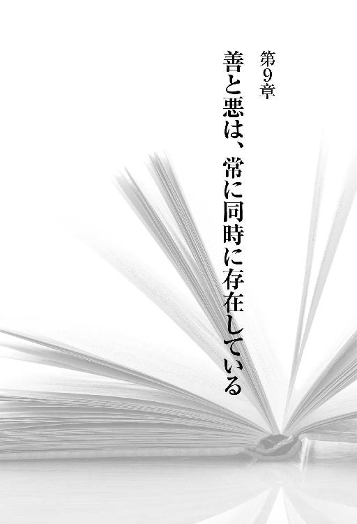

| 悪魔を出し抜け！ | |
| ナポレオン・ヒル | |
| kikoshobo (2016) | |
注釈者まえがき
シャロン・レクター
私は、いまだかつてこれほど深遠なる書物を読んだことがない。
ナポレオン・ヒル財団のＣＥＯ、ドン・グリーンから、この本の出版プロジェクトに参加しないかと誘われたときには、あまりの栄誉に自分の耳を疑ったほどだ。そして、実際ヒル博士の書いた原稿を読み出すと、一週間は寝ることもできなかった。
一九三八年に、ナポレオン・ヒルその人が自分でタイプライターを打って書いたその原稿は、その後七十二年もの間、親族の意向により隠され続けてきた。それはどうしてか？ 世間の反応が恐かったのだ。悪魔の手は私たちの日常のいたるところに伸びている。教会でも、学校でも、政治の世界でも。博士はそのことを白日のもとにさらそうとした。しかし、その博士の勇気ある行為は、当時の社会の中核を担っていた人々を恐怖に陥れたのだ。
どうして博士の親族は原稿を隠そうとしたのか、その理由を尋ねると、ドン・グリーンは当時の事情をこう話してくれた。
それはヒルの妻アニー・ルーが公表に反対したからだ。彼女は、サウスカロライナ州クリントンにあるキリスト教系大学、プレスビテリアンカレッジの学長、ウィリアム・プルーマー・ジェイコブの秘書をしていた。ジェイコブはジェイコブズ・プレスのオーナーであり、サウスカロライナ州にある繊維企業グループの外部顧問でもあった。ヒルは、ジェイコブに雇われてクリントンに移ってきていたのだ。アニー・ルーはその本に悪魔が登場することを気にしていた。既成宗教から攻撃されることを恐れたのだ（おそらく夫の仕事のこともあったろう）。
一九七〇年にヒルが亡くなったあとも、アニー・ルーは一九八四年まで生きた。彼女が死ぬと、原稿は当時ナポレオン・ヒル財団の会長だったチャールズ・ジョンソンの手に渡った。
チャールズは、アニー・ルーの甥でもある。チャールズの妻フランキーはアニー・ルーの気持ちを前から知っていて、彼女の意向を尊重したいと考えていた。そこでフランキーは自分が生きている間も出版は控えてほしいと夫に頼んだ。その妻も数年前に他界した。そこで、とうとうその原稿は私の元に来ることとなったのだ。
チャールズが渡してくれた原稿は赤革で装丁がされ、表紙には『悪魔を出し抜け！』のタイトルが金文字で打ち出されていた。その原稿に強力なメッセージがあると信じた財団は、出版することに決めたのだ。
ドンの話を聞いたあと、私はあることを思いついてハッとした。この本は、書かれたのこそ一九三八年だが、実は最初から、いまという時代に出版されることを想定したものだったのではないか。私たちが生きるこの現代社会を揺り動かすために！ 経済的にも霊的にも不安定な時代を迎える私たちのために、必要な答えを用意しておこうとしたのだ。この本は、私たち一人ひとりに、悪魔を出し抜いて生きていくための手掛かりを与えてくれる。成功をつかむまでの道筋を思い描き、同時に世界にも貢献できる方法を示してくれる。
一九三〇年代に書かれた『思考は現実化する』（Think and Grow Rich）が、その時代の人々を大恐慌から復活させ、成功に導いたように、この『悪魔を出し抜け！』は、いまを生きる私たちを復活させ、成功に導く手助けをするために書かれたものなのだ！
読者の中には、ヒル博士が本当に悪魔と対話したつもりでいたのか、あるいは、単なる想像だったのか、疑問に思っている人もいるだろう。
その答えはあなた次第というしかない。しかし、博士の他の著作の中に、彼の頭を別の角度から覗き見るヒントがあるかもしれないと思い、ドンに尋ねたところ、次のような答えが返ってきた。
想像上の対話というのは、ヒルにとって決して新しいスタイルというわけではなかった。一九五三年に出した〝How To Raise Your Own Salary〟でもカーネギーとヒルの対話という形がとられているが、ヒルが実際にカーネギーと対話を交わしたのは一九〇八年のことで、しかもカーネギーはその本が出版されるよりずっと前の一九一九年に死んでしまっている。
自分の伝えたいことをうまく表現する方法として、想像上の対話を用いたことはさらにそれより前にもあった。『思考は現実化する』の中では、第六感を説明するために、自分が最も印象的だと思う九人の人物と想像上の会議を持った話について述べている。
そのときのメンバーは、エマーソン、トマス・ペイン、エジソン、ダーウィン、リンカーン、園芸家のバーバンク、ナポレオン将軍、フォード、そしてカーネギーだった。
この「見えない相談役」たちと会議をしているときは、頭が敏感になり、さまざまなアイデアや思考、情報が第六感を通していくらでも頭に浮かんできた、とヒルは書いている。
宗教について書いたのも、『悪魔を出し抜け！』が最初ではない。事実、一九二八年に〝The Law of Success〟を出版したときには、学校教育と宗教に関する彼の考え方を批判する手紙が何通も送られてきた。
ということで、その答えはあなた次第なのだ。ヒル博士が本当に悪魔と対話したのか、あるいは、それは単に読者の心に響きやすいように博士が考え出したたとえ話にすぎなかったのか。どちらにしても、博士がとったこのユニークな方法により、読者は思ってもみなかったような方向へと導かれるだろう。
ここは注目すべきと思ったところや、語彙の意味をはっきりさせたいとき、あるいは、博士の予測が現実のものと一致していることを強調したい場合などは、その都度、私の個人的な意見を述べさせてもらっている。本編と区別できるようにしてあるので、私のコメントを飛ばして読み進んでもらっても一向にかまわない。
どうか、このパワーに満ちた本を楽しみながら読んでほしい。そして、家族や友人にも勧めてほしい。ヒル博士の言葉が持つ力によって、あなたの人生が変わることは間違いない。
まえがき
ナポレオン・ヒル博士は、間違いなく世界で最も有名な自己啓発の師であり、思想家であり、魂を目覚めさせる者であり、そして永遠のベストセラー作家である。
読者の皆さんには、一刻も早く博士と悪魔の対話を読むことをお勧めする。そうすれば、悪魔の正体を見極め、生きている人間の九十八パーセント（と悪魔は言っている）に対し、彼が何をしているのか知ることができるだろう。それは、これからのあなたの人生に多大なる影響を与えることになるはずだ。
博士は、頭の働きを活発にするために、すぐ本題へと入っていく。読者の前に自分の人生を広げ、何が自分にとって意味があったのか、何が自分の人生を変えたのか読者に見せるのだ。
博士はこの世で最も偉大で、最も効果的で、誰でも役立てることのできる成功哲学を手に入れた。しかし、それを実際に応用する方法はまだ見つけていなかった。原則というものは、口で唱えるだけなら簡単だ。頭で考えるのもさして難しくはない。しかし、毎日の生活をすべて原則通りに行おうと思ったら、それは生半可な決心ではとうていできない。
シャロン・レクターのコメントは、ヒル博士の言葉を、いまの社会情勢や、私たちの持つ概念や思考方法にそって変換することにより、その意味を明確なものにしてくれている。
ヒル博士が目指したのは、成功の哲学とその実践方法をはっきりと世に示し、人々に永遠の幸福をもたらすことだった。彼は内なる声に導かれ、自分のその夢を見つけたのだ。
私たちは、いま非常に厳しい時代に生きている。しかし、それは大恐慌の時代に生きたヒル博士も同じだった。彼はその時代の中で感じ、行動し、その結果、自信と気力を失った。それは彼の存在そのものを脅かす危険な状態だった。私たちにとってもそれは同じことだ。さまざまな知恵にあふれたこの本を読めば、そんなあなたの無気力も否定的な気持ちも、たちどころにどこかへ消えてしまうだろう。そして、明るく幸福に満ちた未来に向かって、栄光ある道を歩み始めることができるだろう。
ヒル博士と同じように、あなたも自分の恐怖にコントロールされるのではなく、逆に自分が恐怖をコントロールできるようになるのだ。情熱と明確な目標を持って人生を歩き、自分がなりたいもの、したいこと、欲しいものが何であるかを自分で決め、それを実現させることができるようになるのだ。
ヒル博士は魔法のような素晴らしい発見をした。あなたもその発見の道筋をたどっていけば、同じような発見が、あるいは、それ以上の発見だって、しようと思えば可能なのだと信じることができるようになるだろう。なぜなら、人間には限界などないからだ。
ヒル博士が言っているように、「あらゆる限界は自分が作ったもの」なのだ。この本を読めば、きっとあなたも自分の人生は変えられるということに気づくはずだ。そのためには、この世で最も成功した五百人の話からヒル博士が学んだことを、ただ実行すればそれでいい。
ヒル博士の対話した相手は本物の悪魔だったのか。それは、あなた自身が自分の人生で悪魔と出会い、その悪魔と対決したときにわかるだろう。
マーク・ビクター・ハンセン
マーク・ビクター・ハンセンは『ニューヨーク・タイムズ』紙でベストセラーとなった『こころのチキンスープ』シリーズの著者であり、『Cracking the Millionaire Code（ミリオネアの暗号を解け）』、『ワン・ミニッツ・ミリオネア』、『キャッシュ・イン・フラッシュ』の共著者でもある。
『悪魔を出し抜け！』への推薦の言葉
「もう終わりだ、絶望的だ」という自分の心の声も、「なんとかなる！」という声も、どちらも、まだ自分の中にある段階だ。そして、いつも奇跡を起こしてきたのは、怖れる心ではなく、「なんとかなる」と信じる心なのだ。シャロン・レクターのまえがきにあるように、ナポレオン・ヒルは、はじめから七十年後の現在に生きるわれわれに向けて、この『悪魔を出し抜け！』を書いたのかもしれない。人間の「思考」の偉大さを改めて伝えるために。私は、「もう一人の自分」の存在を信じます。
──渡邉美樹 （参議院議員）
夢を持つことに関して、大半の人は「分相応の夢かどうか」を考えて立ち止まってしまう。しかし、それは無意味だ。人の「分」というものは、夢に向かって努力するからこそ向上するのであって、夢を限定する物差しではない。『悪魔を出し抜け！』は、あなたの夢をかなえるためのヒントを与えてくれる。
──熊谷正寿 （ＧＭＯインターネット株式会社代表取締役会長兼社長・グループ代表）
思いの強さが夢を実現させる原動力となる。勝利を得ることができるのは、自分が欲するものを明確にし、何が何でも手に入れると心に固く決め、行動した人のみ！『悪魔を出し抜け！』は、夢を実現するまでに、数多くあるだろう壁を取り除くための具体策が個性的に描かれている指南書。悩み、苦しみ、歩みを止めてしまった時には「こうすすめ！」と......導いてくれるに違いない。
──朝倉千恵子 （株式会社新規開拓 代表取締役社長）
いま生きている人間の中でおそらく私ほどナポレオン・ヒルを研究した者はいないだろう。私が『思考は現実化する』を手にしたのは五十年前のことだった。肌身離さず持ち歩き、毎日読み続けた。シャロン・レクターが『悪魔を出し抜け！』を送ってきたとき、それを見て私は思った。ヒルはまたやったな。また世界が変わるぞ。この本は、いま世界中の人々が経験している霊的混乱を解消するものだ。また、魂が求める自由から何百万もの人々を遠ざけている無知という名の壁を崩すものだ。
──ボブ・プロクター （『イメージは物質化する』の著者）
『悪魔を出し抜け！』の出版により、ナポレオン・ヒルの哲学が時間を超えて生き続けるものであることが再び証明された。この本には、成功を妨げる習慣や態度から抜け出して、幸福と富を手に入れるための叡智が詰め込まれている。人生の障害物に悩まされている人は、ぜひこの本を読むべきだ！
──Ｔ・ハーブ・エッカー （『ミリオネア・マインド 大金持ちになれる人』の著者）
ナポレオン・ヒルの書いた不滅の名作『思考は現実化する』は、時代の五十年先を行っていた。今回発見された新著『悪魔を出し抜け！』は、博士の知恵と哲学の偉大さを示す新たな証拠と言える。博士は私たちに、何が本当で何が嘘なのか、どれがよくてどれがだめなのか、誰が正しくて誰が間違っているのか、まるで同時代を生きる人間のように教えてくれる。将来の成功を手に入れるために、いまの自分を見つめ直したいという人には必読の書だ。
──ジェフリー・ギトマー （『営業の赤本』『全米トップ営業マンに学ぶポジティブ思考』の著者）
人はたいてい人生最大の失敗をしでかしたすぐそのあとに大成功するものだ。『思考は現実化する』が示したのは成功へのロードマップだった。『悪魔を出し抜け！』では、あなたを躊躇させているその障害物を打ち破る方法が示される。
──ブライアン・トレイシー （作家、企業コンサルタント）
ナポレオン・ヒルは、Ｃ・Ｓ・ルイスが『悪魔の手紙』で用いた手法を拡大し、それを非常に個人的なレベルに変換した。それによって、私たちは彼の内面を実に奥深くまで知ることができ、さらに、人間は知らず知らずのうちに社会にプログラムされ失敗へと導かれていると彼が考えていたことも知ることができた。『悪魔を出し抜け！』は、いま出版しても充分ホットな内容だ。
──ドクター・Ｊ・Ｂ・ヒル （ナポレオン・ヒルの孫）
真実にとって、いまほど重要な時代はない。神を人間の生活の中心に据えるという役目を自ら進んで担ったシャロン・レクターを誇りに思う。
──サラ・オメアラ （チャイルド・ヘルプの共同設立者であり理事長。ノーベル平和賞に五回ノミネート）
自分で自分をプログラムしない人は、人生にプログラムされる！ ナポレオン・ヒルの『悪魔を出し抜け！』が教えてくれるのは、自分の可能性を最大限引き出すための法則だ！
──レス・ブラウン （自己啓発家、『Live Your Dreams〔自分の夢を生きろ〕』の著者）
人生を自分のものにしたければ、まずお金を自分のものにしなければならない。もし、あなたがお金の問題から逃げているのなら、『悪魔を出し抜け！』の中でナポレオン・ヒルがその原因を明らかにし、夢の人生を自分のものにするための方法を教えてくれる。
──ジーン・チャツキー （金融ジャーナリスト、『The Difference: How Anyone Can Prosper in Even the Toughest Times〔困難なときに成功できる人とそうでない人の違い〕』の著者）
これさえ読めば、ナポレオン・ヒルという偉大なる叡智の巨匠の頭の中を覗き見ることができる。素晴らしい本だ。
──グレッグ・Ｓ・リード （『金鉱まで残り３フィート』の著者）
世の中にはネガティブなことは忘れてポジティブなことだけ考えようと言う人が多いが、実際には、その両方を認識し扱えなければ力は生まれない。この本は読み応え充分、驚くべき教訓も与えてくれる。
──ラリー・ウィンゲット （『ニューヨーク・タイムズ』紙と『ウォール・ストリート・ジャーナル』紙のベストセラー『Shut Up, Stop Whining & Get a Life!〔だまれ！ 泣き言はやめて、人生をつかめ！〕』の著者）
最近の読者の間では、ヒル博士の教えといえば成功論、つまり金持ちになるためのノウハウを教えてくれるものと思っている人が多い。しかし実際には、ヒル博士が語り続けてきたのは『いかに生きるか』という人生の知恵話なのだ。まずは自分の内面、自分の意識の状態から始め、そこから、自分自身のため、そして人類全体のために自分を最大限に表現するにはどうしたらよいかという問題に迫る。
──マイケル・バーナード・ベックウィズ （『本当に自由になるスピリチュアルな生き方』の著者）
時代を経ても色褪せることのないナポレオン・ヒルの叡智と、現代の読者の心に強く訴えかけるシャロン・レクターの才能とが一つとなって、『悪魔を出し抜け！』は『思考は現実化する』のあとを継ぐ優れた自己変革の書となっている。何度も読み返すうちにあなたにも必ずわかるはずだ。自分の考えることが、いずれ自分に起きることだと。
──リタ・ダベンポート （著述家、セミナー講師、笑いの提唱者）
『思考は現実化する』では、成功の基本原理が示された。『悪魔を出し抜け！』では、成功を手にするまでに出会うだろう障害物と、その打破の仕方が示される。
──ジム・ストーヴァル （ベストセラー『究極の贈りもの』の著者）
ヒル博士が対話した相手が本物の悪魔だったかどうか、それはあなた自身が自分の人生で悪魔と出会い、その悪魔と対決したときにわかるだろう。
──マーク・ビクター・ハンセン （『ニューヨーク・タイムズ』紙のベストセラー『こころのチキンスープ』シリーズの共著者）
悪魔を出し抜け！ 目次
ナポレオン・ヒル財団アジア／太平洋本部からのお知らせ
きこ書房・毎朝届く無料メールマガジン『成功の黄金率』登録はこちらから
私はこの四半世紀あまりの間、人生における成功の理由、そして失敗の原因、その両方を突きとめ、それを一つの成功哲学として体系化することを大きな目標としてきた。そうすることで、そのような研究にはさして興味のない人、あるいは興味はあってもする機会のない人のお役に立てればと考えたからだ。
そもそものきっかけは、一九〇八年に行った、アンドリュー・カーネギーとのインタビューだった。私はカーネギーに対し、自分は法律を学びたいと思っている、ついてはその学費を工面するために、成功した人たちにインタビューをし、そこから成功の秘訣を探り出して、その記事を雑誌社に売り込むつもりでいる、と素直に打ち明けた。
するとカーネギーは、一回目のインタビューの最後に、一つ君に提案があるのだが、それを受けるだけの勇気が君にあるだろうか、と尋ねてきた。私が、勇気だけはあります、どんな提案でも全力をつくしてやり遂げてみせますと答えると、彼はこう言った。
成功した人たちの話を書くという、そのアイデア自体は素晴らしいと思うし、君のやる気をそこなうつもりも毛頭ないのだが、もし、いま生きている人だけでなく、後世の人々にも末永く役に立つものを作りたいと思うのなら、充分な時間をかけて、あらゆる原因をまとめなくてはならないと思う。それも、成功した理由だけではなく、失敗した原因も含めて。
世界には、成功や失敗の原因のことなど考えたこともない人がごまんといる。学校や大学では、何でも教えてくれるようで、その実、個人が成功するためのノウハウだけは教えない。知識だけは四年から八年もかけて覚え込ませようとするくせに、その知識を具体的にどう使えばいいのかは教えてくれないのだ。
私たちに必要なのは、実際的で、誰にでも理解できる成功哲学だ。人生という偉大な大学で学んだ人々の、実体験に基づいた知識だ。あらゆる哲学を思い浮かべても、いま私が考えているような哲学にほんの少しでも似ているものは皆無だ。私たちに生きる技術を教えてくれる哲学者はほとんどいない。
だから、ここはぜひ君のような志の高い若者にがんばってもらいたいのだ。しかし、志が高いだけでは私の提案するこの仕事をやり遂げることはできない。それには勇気と粘り強さが必要となる。
不断の努力を続けても、この仕事を全うするには少なくとも二十年はかかるだろう。その間、何らかの方法で別に生計を立ててもらわなくてはいけない。こういう研究は、最初から金になるということは決してない。また、このような形で文明に貢献する者は、たいてい死んでから百年くらいはたたないと、その仕事を認めてはもらえないものだ。
二十年働いても収入にはならず、おそらく認められることもない！ こんな提案をされたら、あなたならどうするだろう。このあと語られるように、ヒル博士はカーネギーのこの提案を受け入れ、彼からもらった紹介状を手に、セオドア・ルーズベルト、トーマス・エジソン、ジョン・Ｄ・ロックフェラー、ヘンリー・フォード、アレクサンダー・グラハム・ベル、キング・ジレットといった、当時の大物たちとのインタビューを開始した。
そして二十五年の研究のあと、ヒル博士のその努力は、『The Law of Success』という十六セッションからなる自己開発プログラムと、その後に出版された『思考は現実化する』という一冊の本となって結実する。『思考は現実化する』は自己啓発書の傑作として広く世に認められ、そこに示された自己開発の原理は、いまでもその分野の指導者たちの拠り所となっている。ヒル博士自身が回想しているように、『思考は現実化する』が出版されるに至るまでの過程そのものが彼の研究の一部であり、成功の法則もそこから導き出された。
本書の原稿が『思考は現実化する』刊行の翌年に書かれたことを考えれば、そこにはヒル博士の感じた苛立ちや、博士の「もう一人の自分」がもたらした啓示の内容、また彼がどのようにしてその苛立ちを克服し、『思考は現実化する』に示された原則を実践することに成功したのかが示されているはずだ。この本は、ヒル博士自身の霊的な気づきと、博士と悪魔との出会いから何を学べばよいのかを明らかにしてくれるだろう。
もしこのプロジェクトをやるとしたら、成功した人だけでなく、失敗した人からもたくさん話を聞く必要がある。「失敗者」と見なされた何千人もの人たちのことを詳細に調べ上げるのだ。ここで私が言う「失敗者」とは、成し遂げようと心に誓ったことを達成できず、失意のうちに人生の幕を下ろそうとしている人のことだ。矛盾しているように聞こえるかもしれないが、いわゆる成功物語よりも、失敗談の方が学べることは多いものだ。失敗した人の話からは、「何をしてはいけないか」がわかる。
順調に進めば、プロジェクトが終わる頃には、自分でも驚くような発見をすることになるだろう。その発見とは、人を成功に導くものは決してその人自身の外側にあるものではないということだ。その力は、本来見ることも触ることもできないもので、ほとんどの人は一度もその存在に気づかずに終わる。名前をつけるとすれば、「もう一人の自分」と呼ぶのが最もふさわしいだろう。
なかでも注目すべきは、その「もう一人の自分」が力を行使したり表に姿を現すのが、人が何らかの災難に見舞われて一時的な敗北感に陥ったため、それまでの習慣を変えたり、なんとかその逆境から抜け出そうと頭を悩まざるを得なくなるといった、緊急の場合に限るということだ。
私自身の経験から言うと、「失敗」に見舞われたときほど成功に近づいているときはない。なぜなら、そういうときこそ人は考えざるを得ないからだ。正しく、かつ粘り強く考え続ければ、いわゆる「失敗」も、新たな計画や目標で自分自身を装備せよという合図にすぎないということがわかる。一方、本物の失敗は、たいてい自分で自分の心の中に設けた限界によるものが多い。それとて、一歩前に踏み出す勇気さえあれば、そんな自分の誤りに気づくことができるはずなのだ。
〝本物の失敗は、たいてい自分で自分の心の中に設けた限界によるものが多い〟
ネガティブな思考や自己不信は、成功を妨げる最も大きな原因となり得る。ここ数年来続く不況のせいで、これまでずっとまじめにやってきた人が人生で初めて経済的苦境に立たされているというケースは非常に多い。そんな彼らの立ち直りを阻む一番の障害物は、最近経験したことから生まれた恐怖心や自己不信なのだ。
あなたもこの不況で打ちのめされてはいないだろうか？ 自己不信や自己破壊により夢をあきらめてはいないだろうか。自分自身が自分の最大の敵になってはいないだろうか？ 『思考は現実化する』の中でヒル博士は、金鉱掘りＲ・Ｕ・ダーヴィーについて語っている。自分の山からもう金は出ないと考えたダーヴィーは、採掘権を町の屑物商に二束三文で売り払ってしまった。しかし、その屑物商が専門家に調べさせると、そこにはまだ金鉱が残っていることが判明したのだ。それはダーヴィーがあきらめた地点からたった三フィート（約九〇センチ）しか離れていない場所だった。
もう少し辛抱していれば大金持ちになれたのに、彼はあとたった三フィートのところで自分の夢をあきらめてしまったのだ。このときの経験を活かして、ダーヴィーは後に巨大保険企業を築き上げた。あなただって、金鉱まであとたった三フィートのところにいるのだとしたら、大成功を目前にして自ら目標を捨てたりはしないだろう。（いまでも、苦境の際にあきらめなかったおかげで成功したという人は多い。『金鉱まで残り３フィート』〔シャロン・レクター／グレッグ・リード著、渡邉美樹監訳、きこ書房、二〇一一年刊〕にはそういうエピソードがたくさん紹介されている）
新たな人生の始まり
カーネギーの言葉は私の人生を根本から変え、私の心に燃えるような決意を植えつけた。それは片時も私を離れることなく、その後も私を突き動かし続けた。しかし実は、カーネギーの言った「もう一人の自分」という言葉の意味は、その時点ではまだぼんやりとしかわかっていなかったのだ。
失敗と成功の原因の研究をする中で、私は二万五千人以上もの「失敗者」と五百人あまりの「成功者」を分析するという特権にあずかった。そんな中、もう何年も前のことになるが、私はカーネギーの言う「もう一人の自分」と初めて出会うことになる。カーネギーの言った通り、それは私に訪れた二度の大きな転機に伴い現れた。その頃の私は、それまで経験したこともないような大きな困難からなんとかして抜け出そうとしていた。
そのときのことは、できれば一人称を使わずに説明したいのだが、実際には無理だ。それは私の個人的な経験を通して起こった出来事であり、私という個人とは切っても切り離せないものだからだ。全体像を把握してもらうためにも、まずは一度目の転機から順を追って話そう。
私はそのとき、自分が成功の哲学をすでに完成したものと考えていた。しかし、それは大きな間違いだった。完成どころか、その仕事はまだ始まったばかりだったのだ。私が体系化したと思い込んでいた「十七の成功法則」と「失敗を招く三十の原因」は単なる骸骨にすぎず、そのまわりを応用と経験で肉づけする必要があった。さらにそこには、魂も込めなければならなかった。魂から与えられる力があって初めて、人は逆境に打ち勝つことができるのだ。
後にわかったことだが、この「魂」というものも、私の二度の大きな転機に「もう一人の自分」がもたらしてくれたもので、そうでなければとうてい私の手には入らないものだった。
自分のエネルギーと持てる限りの才能を、ビジネスの世界とそこで築いた人脈を使って報酬を得ることに注ごうと決めた私は、広告業界を目指して、シカゴにあるラサール・エクステンション大学の広報部長になった。一年間は順調に進んだが、ある日突然その仕事に嫌気がさして退職してしまった。
次に、ラサール・エクステンション大学の元学長といっしょにチェーンストア業界に参入し、ベッツィ・ロス・キャンディ社の社長となったが、残念なことに（と当時の私は思った）、共同経営者との意見の相違により、その事業からも撤退を余儀なくされた。
広告業への情熱がまだ冷めやらぬ私は、再びその世界で自分を試そうと、ビアント・アンド・ストラットン・ビジネスカレッジと手を組んで、広告とビジネスの学校を設立した。
出だしは好調で順調に利益を上げていった。しかし、そのさなかアメリカ合衆国が第一次世界大戦に参戦した。
すると、言いようのない強い思いが私の心にわき上がり、それに駆り立てられるようにビジネススクールから手を引いた。そして、ウッドロー・ウィルソン大統領の直接の勧めにより政府の仕事についた。
その結果、何の問題もなかったビジネスを崩壊に導いてしまった。
第一次大戦の停戦条約が締結された一九一八年十一月十一日、今度は『ゴールデン・ルール・マガジン』という雑誌を創刊した。資金ゼロで始めたにもかかわらず、売り上げは急激な伸びを見せ、たちまち全国で五十万部近くの販売数を記録し、初年度には三千百五十六ドルの利益を上げた。
一九一八年の三千百五十六ドルといえば、労働統計局がまとめた毎年の消費者物価指数をもとに計算しても現在の四万五千ドル、一人当たりの名目ＧＤＰをもとに計算すると二十万二千ドルにもなる。初年度の利益としては悪くない。なにしろ、雑誌業界では、新しく発刊される雑誌の八割から九割が失敗し、仮に成功しても黒字に転じるまでには三年から五年はかかるとされているのだ。
それから数年後、業界のベテランから、全国誌の出版や販売を経験したことのあるものなら、五十万ドル以下の資金であんな雑誌を新たに出そうなんて考える者はいない、と聞かされた。
しかし、『ゴールデン・ルール・マガジン』と私は別れゆく運命にあった。成功すればするほど私の不満はつのった。同僚との間の些細ないさかいも積み重なり、とうとう私は彼らに会社を譲ってひとり去っていった。軽くひと財産は捨てたことになるだろう。
ヒル博士の雑誌への情熱はこれで終わったわけではない。『ゴールデン・ルール・マガジン』は後に『ナポレオン・ヒル・マガジン』に受け継がれ、その後博士は『サクセス』誌の編集にも関わった。同誌は現在でも出版されている。
次に私が手がけたのは、セールスパーソンを養成するビジネススクールだった。最初に受けた仕事は、チェーン店の販売員三千人を対象にしたトレーニングで、私の講義を受けた販売員一人につき十ドルが支払われた。わずか半年で三万ドルを少し上回る利益を上げた。私の努力は少なくとも金銭的には大いに報われたわけだ。しかし、またしても私の心はざわつき始めた。そのときの私は幸せではなかったのだ。どんなに金を積まれても幸福感を得られないことは日ごとに明らかになっていった。
まともな理由など何一つないまま、私はそのまま続けていればかなりの収入を得られたであろう仕事をあっさりと手放してしまった。友人や仕事仲間たちは私の頭がおかしくなったと思い、面と向かってそう言う者も多かった。
正直、私も彼らの方が正しいのではないかと思ったりもしたが、自分でもどうすることもできなかった。私が求めていたのは幸福であり、それはまだ見つかっていなかったのだ。とにかく、自分がこんな異常な行動に出た理由としてはそれくらいしか思いつかなかった。人間なんて、自分のことはこれっぽっちもわかっていないものなのだ。
〝またしても私の心はざわつき始めた。そのときの私は幸せではなかったのだ。どんなに金を積まれても幸福感を得られないことは日ごとに明らかになっていった〟
このフレーズは数年前の私を表すのにぴったりだ。しかし、私はそのときある行動をとった。金銭的には満足できるが、人生の真の目標にはそぐわないと感じていたその頃の状況におさらばすると決めたのだ。すると、私の前に新たな道へと続く扉が開かれた。結局、それは私のキャリアにとって最良の決断となった。あなたもいままでの人生の中で難しい決断に迫られたことがあっただろうか？ まわりの人がみな首を傾げる中、それでも自分の決断は正しいと思ったことが。
それは一九二三年の晩秋のことだった。気がつけば私はオハイオ州コロンバスに一人いて、資金もなく、さらに悪いことには、この困難な局面から抜け出るアイデアを何一つ持っていなかった。資金不足のせいで立ち往生したのはこれが人生で初めてだった。
それまでにも財政的にかなり困窮したことは何度もあった。しかし、身のまわりの物にもこと欠くような状況に陥ったことは一度もなかったのだ。これにはさすがの私もショックを受けた。何をどうすればよいのか見当さえつかなかった。
問題の解決方法を十ばかり考えてはみたが、どれも現実的ではないとか不可能だとかいう理由をつけて次々と却下してしまった。まるで、コンパスもなしにジャングルで迷子になったような気分だった。そこから逃げ出そうといろいろとやってみても、いつも振り出しに戻ってしまう。
私はその二カ月ほどの間、人間がかかる病気の中でも最悪のもの、つまり「不決断」を患っていたのだ。十七の成功法則を知っていながら、実際の使い方については何も知らなかったわけだ！ そして、自分でも気づかないうちに、カーネギーの言う、「もう一人の自分」を発見するのに必要な人生の危機的状況に直面していたのだ。
私はあまりの苦しさに、いったん立ち止まって、苦しみの原因とそこから逃れる術をゆっくり考えてみよう、などということさえ思いつかなかった。
〝人間がかかる病気の中でも最悪のもの、つまり不決断〟
あなたも決断が下せずに動きがとれなくなったということはあるだろうか？ このときヒル博士は人生で最初の大きな転機を迎えていた。次々に仕事を変える、常に満足を求める、理想のキャリアを目指す。まるでいまの私たちの話を聞いているようだ。仕事にも人生にも満足を求め続ける人々。本人も認めているように、ヒル博士の苦境は自らが作り出したものだった。しかし、博士がこのとき置かれていた状況は、不況に苦しむいまの私たちと同じだ。ヒル博士はその一時的な敗北を利用して、自らを思考と分析に向かわせた。つまり、「もう一人の自分」を見つけるエネルギーに転化したのだ。もしあなたもいまの不況に打撃を受けている一人だというのなら、ヒル博士と同じように、それを一つのきっかけとして「もう一人の自分」を見つけてはどうだろう。
敗北を勝利に転換する
ある日の午後、私は一つの決断をくだした。結局それが私を苦境から救うことになる。私はふと、近所の広場に行って、新鮮な空気を吸いながらじっくり考えてみようと思い立った。
だが、歩き始めて十メートルほど行くと、突然その場に立ちつくしてしまった。まるで足が道にはりついたように動けない。数分もそうしていたろうか。目の前が暗くなり、大きな音も聞こえてくる。何らかのエネルギーが高速で振動している音だ。
しばらくすると、私は気持ちが穏やかになり、体の力も抜け、全身が深い静けさに包まれた。あたりも次第に明るくなってきた。とそのとき、私の中から命じる声が聞こえてきた。それが何かと聞かれれば、私には「思考」としか答えようがない。
その命令は非常にはっきりとした明確なもので、意味を取り違えようもなかった。その命令とは次のようなものだ。「いまこそカーネギーの提案した成功哲学を完成させるときである。すぐ家に戻り、頭の中に蓄積したデータを文章に変換する作業を始めなさい」。とうとう私の中に「もう一人の自分」が目覚めたのだ。
一、二分の間、私は恐怖に慄いていた。そんな経験はそれまで一度もしたことがなかったのだ。私はくるりと体の向きを変えると、一目散に家まで戻った。家の近くまで来ると、三人の幼い息子が窓から外を眺めているのが見えた。隣の家の子供たちがクリスマスツリーの飾りつけをしているのを見ていたのだ。
それで私は、その日がクリスマスイブであることを思い出した。そして、さらにもう一つ別のことを思い出して、私の心はかつてないほど落ち込んだ。というのも、我が家ではその年クリスマスツリーを飾れそうになかったからだ。我が子のがっかりした表情を見ながら、私の心は痛んだ。
私は家に入ると、タイプライターの前に座り、成功と失敗の原因についてそれまで研究してきたことを文章にまとめ始めた。一枚目の紙をタイプライターに差し込んだとき、数時間前に広場で感じたのと同じ不思議な感覚に襲われた。そして、次のような考えが頭にひらめいた。
「おまえの人生の目標は、世界で最初の成功哲学をまとめることである。おまえはいままで何度もその仕事から逃げようとしてきたが、その試みはいつもおまえに失敗をもたらした。おまえが求めているのは幸福である。ならば、今度こそこの教訓に学びとるのだ。幸福を見つける唯一の方法は、他者が幸福を見つける手助けをすることであると！ おまえはずっと頑固な生徒だった。その頑固さを正すには絶望することが必要だった。これから数年のうちに、世界中で何百万もの人々が、これからおまえが完成させる成功哲学を必要とするような状況に陥るだろう。これはおまえが人々の役に立って幸福を見つける大きなチャンスなのだ。さあ、仕事を始めなさい。そして、その原稿を完成させ出版するまでは決して休んではならない」
私は、それまでぼんやり夢見ていたものがやっと現実味を帯びてきたのを感じていた。私は幸福だった！
疑いの気持ちが湧いてくる
呪縛（と呼べばよいのだろうか）が解けると、私はさっそく原稿を書き始めた。しかし、しばらくすると私の「理性」が、おまえが感じているのはくだらない使命感にすぎないと揶揄してきた。ほとんど無一文にまで落ちぶれた男が成功哲学の本を書こうなんて、あまりにも滑稽に思えて私は引きつったように笑い出した。あるいは、自嘲の笑いと言うべきか。
椅子の中でもぞもぞと体を動かし、髪の毛をかきむしりながら、なんとかしてこのタイプライターから紙を引き抜いて、原稿を書かずに済ませるよい言い訳はないものかと悩んでいた。しかし、結局、やめたいという気持ちよりも続けたいという欲求の方が強かった。私は観念してその仕事に着手した。
〝やめたいという気持ちよりも、続けたいという欲求の方が強かった〟
あなたにも、やめたいと思いながら何かに引き留められたという経験はないだろうか。もしかしたら、その何かがあなたの「もう一人の自分」だったのかもしれない。
これまでに起こったことを全部思い起こしてみると、逆境のときに経験したことはどれもいままでの人生の中で最も幸運で有益な経験だったということがわかる。苦しみに見えるものが実は恵みなのだ。そのおかげで私は自分の仕事を続けることができ、その結果、これほどまでに社会に貢献することもできた。これまでの計画や目標のどれか一つでも失敗せずに達成できていたとしたら、こうはいかなかったろう。
それから三カ月間、私は原稿を書き続けた。そして、一九二四年の始めにそれは完成した。原稿を書き上げるや否や、私はアメリカ経済界での厳しい競争に再び参戦したいという強い衝動にかられた。
その衝動を抑えきれなかった私は、オハイオ州クリーブランドのメトロポリタン・ビジネス・カレッジを買収して、その規模を拡大する計画を練り始めた。その年の終わりまでには目標を達成し、新しい学科も増設して、買収前の二倍以上の業績を上げるにいたった。
しかし、またしても不満の虫が私の血の中で騒ぎ出した。いまの仕事では自分は幸福になれないということがわかってしまったのだ。そこで、カレッジの経営は同僚たちにまかせ、私は教壇に立つことにした。私がそれまで長年関わってきた学校や機関で成功哲学を教え始めたのだ。
ある晩、私はオハイオ州カントン市で講義をする予定になっていた。すると再びそこに運命（あるいは、どんなに本人があらがおうと、ときに人間の一生を決めてしまうような何か）が割り込んできて、私をつらい経験のもとへと引きずり出した。
その晩の聴衆の中に、『カントン・デイリー・ニューズ』紙の社長ドン・Ｒ・メレットがいた。成功哲学についての私の講演に非常に興味を持ったメレットは、翌日会いにくるようにと私を誘った。
面談の結果、私たちは手を組むことになり、メレットは翌年早々には『カントン・デイリー・ニューズ』を退職して、私の行ってきた成功哲学のビジネスを、本の出版も含め一手に引き受けることになった。
ところが、一九二六年の七月、メレットは殺されてしまう。犯人はギャングのパトリック・マクダーモットとカントン署の刑事で、二人はその後終身刑に処せられた。メレットが殺されたのは、酒の密売業者と警察との癒着を新聞で暴いたためだった。これは禁酒時代に起こった事件の中でも最もショッキングなものだった。
オハイオ州カントン市の『カントン・デイリー・ニューズ』紙編集長で革新的ジャーナリストでもあったドナルド・リング・メレットが一九二六年の七月に殺害された事件は、一九二〇年代に最も世間を騒がしたニュースとなった。一九二五年、カントン署内部で汚職が広がっていることを察知したメレットは、反不正、反汚職のキャンペーンを新聞紙上で繰り広げ、とりわけカントン署の署長をそのターゲットとした。ヒル博士はオハイオ州知事に汚職の調査を指示するよう依頼したと報じられたが、その点について博士本人が詳細に語ったことはない。
地元のギャング組織とカントン署の警察官少なくとも一人が、パトリック・マクダーモットを雇ってメレットを黙らせようとした。メレットが撃たれたのは自宅のすぐそばだった。伝えられるところによれば、犯人はヒル博士も待ち伏せしていたらしい。しかし、幸運にも博士は車の故障で難を逃れた。七月十七日付の『ニューヨーク・タイムズ』紙は、「編集長殺害後も続く殺人予告」という見出しをつけ、カントン市民が「賭博師や酒の密売業者のボスたちが出したさらなる殺人予告に怯えている」と報じた。ヒル博士自身が詳しく語っているように、メレット殺害の直後、街を出ろという匿名の警告を受けた博士は、逃げるようにしてウェストバージニアへと移った。主にオハイオ州スターク郡の検察官が雇った私立探偵の働きにより、結局マクダーモットと二人の地元ギャングおよび元刑事は、メレット殺害の罪で有罪判決を受けた。
チャンス（？）が人生を救う
メレット殺害の翌朝、私は匿名の電話を受け、一時間以内に街を出るよう警告された。時間内なら自分の足で出ていくことができるが、躊躇するようなら棺桶に入って出ることになるだろうと脅された。どうやら、私とメレットとの仕事上の関係が誤解を招いたようだ。犯人たちが、私もメレットの暴露記事に関係していると思い込んでいるのは明らかだった。
私は一時間を待たずして車に乗り込むと、ウェストバージニアの山中にある親戚の家へと向かった。そして、犯人たちが刑務所に入れられるまで、そこから出ようとしなかった。
この経験が、カーネギーの言っていた人間に考えることを強いる「危機的状況」にあてはまるのは間違いない。生まれて初めて私は途切れることのない恐怖というものを味わった。数年前のコロンバスでは、私の頭は疑惑と一時的な不決断で満たされていた。今回私の頭を満たしているのは恐怖だ。しかも、決してそれは取り除けそうにもなかった。そこに隠れている間、夜にはめったに表に出なかった。仮に出ることがあっても、万が一のときにいつでも撃てるよう安全装置をはずした自動拳銃を必ず上着のポケットに入れて握りしめていた。怪しい車が家の前に止まろうものなら急いで地下室に降りて行き、車に乗っているのが誰なのか窓からこっそりうかがった。
こんなことを何カ月も続けているうちにだんだん神経が参っていった。勇気などかけらも残っていなかった。長年私を鼓舞し続けていた失敗と成功の原因を探る仕事への情熱も見事に消えてしまっていた。
私はゆっくりと少しずつ自分が無気力になっていくのを感じていた。そして、もう二度とそこからは抜け出せないような気がしていた。それは、突然泥沼に足を取られた人間が、もがけばもがくほど深みにはまっていくとわかったときの絶望感にかなり似ていると思う。恐怖とは、自らが心の中に作り出す泥沼なのだ。
もし、私が生まれつき狂気の種を持っていたとしたら、間違いなくそれはこの数カ月の生き地獄の間に芽を出していたに違いない。愚かしいほどの不決断、優柔不断な夢、疑い、恐れ、私の頭は、昼も夜もそういったものでいっぱいになっていた。
私の直面したこの「危機的状況」は、二つの意味で破壊的だった。まずは、その本来の性質から、私は絶えず不決断と恐怖の状態にあった。次に、強制的に潜伏させられていた私には何もすることがなく、どんどんと積み重なっていく時間を、ただただ心配することだけに費やしていた。
私の論理的思考はほとんど麻痺していた。この精神状態からどうにかして抜け出さなくてはならない。しかし、どうやって？ これまでは何とか機転を利かして苦境を乗り越えてきたが、今回ばかりはその機転も羽をはやしてどこかに飛んでいってしまったようだった。
これらの問題は、それだけでも充分私にとってつらいものだった。だが、さらにそこにもう一つ別の問題が生じていた。それは、他の問題を全部足してもかなわないほどつらいものだった。
その問題とは、人生の大半を夢を追うことに費やし、成功の秘訣をあちこち探し求めてきたこの私が、自分が「失敗者」と見なした二万五千人のどの人間よりも途方にくれているという事実だった。
この考えに私は頭がおかしくなりそうだった。そして、それ以上に恥ずかしくもあった。私はこれまでアメリカ中の学校や大学や企業で「十七の成功法則」について講演し、その実践方法を教えてきた。なのに、その当の私がそれを実践できないでいるのだ。胸をはって世間と向き合うことなど、もう二度とできないと思った。
鏡を見る度に、自分の顔に自己嫌悪の表情が浮かんでいるのが見えた。鏡の中の自分に対し、決してここには書けないような言葉を投げかけたことも一度や二度ではなかった。私はだんだん自分のことを、自分でもうまく使いこなせない「失敗の薬」を他人に処方しているニセ医者のように感じ始めていた。
メレットを殺害した犯人たちは、裁判で終身刑になり刑務所に入れられた。よって、彼らのことだけを考えれば、私が隠れ家から出て仕事に戻ることに、もう何の危険もなかった。にもかかわらず、私は出ていくことができなかった。なぜなら、そのときの私は、私を隠れ家に押し込んだ悪党よりもさらに恐ろしい状況に直面していたからだ。
今回の事件で、私の中にあった独創性は粉々に壊れてしまった。まるで悪夢を見たあとのように、重苦しい気持ちが私を捉えて離さなかった。私は生きている。どのようにだって好きに動き回れるはずなのに、カーネギーの提案を受けて自らに設定したゴールへ向かうにはどう動けばよいのか皆目わからなかった。私はどんどん無気力になっていった。しかも、自分に対してだけでなく、「危機的状況」に陥った私に避難所を提供してくれた人たちにまで不平不満をぶつけるようになっていた。
このとき私は人生最大の危機を迎えていた。同じような経験をした人でなければ、このときの私の気持ちはわかってはもらえないだろう。あのような気持ちを言葉で表現することは決してできない。それは感じた人だけがわかるものなのだ。
〝私の論理的思考はほとんど麻痺していた〟
ヒル博士が経験した論理的思考の麻痺は、最初は身の危険を感じたことから始まったものだった。しかしその後、そのこと自体が屈辱となり、さらにひどくなっていった。あなたも博士のように、屈辱によって論理的思考が麻痺したことはあるだろうか。
「危機的状況」に陥ったとき、人は恐怖によって活性化されることもあれば、それによって麻痺してしまうこともある。自分は選択することができるということを知っていて、恐怖に対しても常にポジティブに対処することができれば、人生をどこまでもよい方向に向けていくことができる。現代人の中にも、イライラから来る怒りや無気力による活力の消耗を感じている人は多いだろう。お金の問題や人生におけるさまざまな不安から、やる気を失ったり、自信を喪失したりしてしまうのだ。
怒りを感じ、その怒りによって思考を麻痺させてしまった人もいるかもしれない。まさしくそのような状況にある若者と、以前言葉を交わしたことがある。「僕は三十歳にもなるのに、これといったスキルもなければ、将来の見込みもないんです」。彼は、状況を変えるための行動を起こさない理由ならいくらでも上げることができるようだった。
私は、彼に行動を起こさなければ何も変わらないことを伝えた。「自分から変えようと努力しなければ、一年たっても、これといったスキルもなければ、将来の見込みもないまま三十一歳になるだけよ」。似たような話をどこかで聞いたことはないだろうか。自分自身、あるいはあなたの身近な人のことで。あなたならどうやってその麻痺を克服するだろうか。このあとヒル博士は、どのようにして自分の恐怖と無気力を克服し、どのようにして希望やひらめき、そして回復への意欲を取り戻し、どのようにして人生での成功を得たのかを語ってくれる。
人生で最高の瞬間
転機は突然やってきた。カントンでの事件から一年以上たった一九二七年の秋のことだ。ある晩、私は家を出ると、街を望む丘の頂上にたつ公立学校まで歩いて行った。
夜明けまでには自分の抱える問題にケリをつける、と決心していた。学校に着くと、建物のまわりを歩き始めた。混乱した頭をはっきりさせて、考えに集中したかったのだ。まがりなりにも物事を系統立てて考えられるようになる頃には、もう何百周もしていただろう。私は、歩きながら何度も自分に言い聞かせた。「解決策は必ずある。それを見つけるまではぜったい家に戻らない」。この言葉を少なくとも千回は唱えたと思う。しかも、私は本気だった。自分のことにはほとほと嫌気がさしていたが、それでも必ずどこかに救いの道があると信じていたのだ。
すると突然、青天の霹靂のごとく、一つの考えが私の頭に飛び込んできた。あまりの衝撃に、体じゅうの血が猛スピードで巡り始めた。
「これは試練だ。これまでおまえがいくつもの貧困と屈辱に見舞われてきたのは、『もう一人の自分』を見つけさせるためだったのだ」
もしあなたが、昨今の経済情勢に痛手を受け、経済的に落ちぶれ、困惑し、自信を失っているのなら、一九二〇年代後半から三〇年代前半にかけてヒル博士がそうしたように、それを試練と考えてはどうだろう。そうすることで「もう一人の自分」を見つけるのだ。人生のどん底にいるときも、常に前向きに取り組み辛抱し続ければ、成功への鍵を見つけることができるだろう。
何年かぶりで、カーネギーの言っていた「もう一人の自分」という言葉を思い出した。確かカーネギーはこう言っていたのだ。失敗と成功の原因を探る仕事を終える頃には、私もその「もう一人の自分」を見つけているだろうと。また、こうも言っていた。人が「もう一人の自分」を見つけるのは、たいてい何らかの危機的状況に陥って、それまでの習慣を変えたり、その逆境からなんとか抜け出そうと頭を悩まざるを得なくなったときだと。
私の体は依然校舎のまわりを巡っていたが、心はすでに天を舞っていた。自ら作り出した牢獄から自分が解放される日もそう遠くはないと、心のどこかで察知したようだ。
私は、この危機的状況によって得たものが、「もう一人の自分」を見つけるという機会だけではないことに気がついた。成功哲学は実践可能だとこれまで多くの人に教えてきたが、これはそれが間違いではなかったことを実証するよいチャンスでもあるのだ。うまくいくかどうか、結果はもうすぐ出るはずだ。もしうまくいかなかったら、書いた原稿はすべて燃やしてしまおう。そして、もう二度と「我こそが運命の支配者にして我が魂の船長なり」などという言葉で人を諭すような罪深いことはしないと誓った。
ヒル博士が引用した言葉は、ウィリアム・アーネスト・ヘンリー（一八四九～一九〇三年）が一八八八年に発表した詩『インビクタス──負けざる者たち──』の一部だ。
私を覆う漆黒の夜
鉄格子にひそむ奈落の闇
私はあらゆる神に感謝する
我が魂が征服されぬことを
無惨な状況においてさえ
私はひるみも叫びもしなかった
運命に打ちのめされ血を流しても
決して屈服はしない
激しい怒りと涙の彼方に
恐ろしい死が浮かび上がる
だが、長きにわたる脅しを受けてなお
私は何一つ恐れはしない
門がいかに狭かろうと
いかなる罰に苦しめられようと
私こそが我が運命の支配者にして
我が魂の船長なり
山の向こうから満月が昇ってくるのが見えた。その輝きは、いままで見たことがないほど明るかった。立ち止まってじっと眺めていると、また頭の中に一つの考えが飛び込んできた。
「おまえはこれまで多くの人に、いかに恐怖を克服するか、いかに危機的状況のもたらす困難に打ち勝つかを説いてきたが、これからはもっと自信を持ってそれを行うことができるようになる。なぜなら、おまえ自身がその困難を、勇気と目標と深い決意をもって、恐れることなく、乗り越えようとしているからだ」
この言葉が聞こえたとたん、私は生まれ変わったような気分になり、そして、かつてないほど大きな喜びで満たされた。無気力は姿を消し、論理的思考が戻ってきた。
一瞬、私は何カ月も苦しい日々を送ってきたことが素晴らしい幸運のように思えて幸福を感じた。長い研究の結果苦労して見つけ出した成功の法則が間違いのないものだということを証明する絶好の機会を与えられたのだ。
そう思った私は、姿勢を正して両足をそろえると、敬礼をして（何、あるいは誰に対してかは自分でもわからなかったが）、数分間、直立不動で立っていた。最初はそんなことをするのは馬鹿げていると思ったが、その姿勢で立っている間に、もう一つ別の考えがひらめいた。それはまさしく軍の上官が部下に命令を下すときと同じ、明確できっぱりとした口調だった。
「明日、車でフィラデルフィアまで行くように。そうすれば、成功哲学の本を出版するための援助が得られるだろう」
それ以上は説明も変更もなかった。私は命令を受けるとすぐさま家に戻り、ベッドに入って眠った。そんなにぐっすりと眠れたのはほとんど一年ぶりのことだった。
翌朝目覚めた私は、ベッドから出るとすぐ荷物をまとめ、フィラデルフィアへ行く準備を始めた。そんな任務は馬鹿げているという理性の声が聞こえた。二万五千ドルもかかる八巻本の出版に金を出してくれなどと頼める知り合いが、フィラデルフィアのどこにいるというのか、と私は思った。
すると、すぐさまその答えが頭の中に浮かんだ。まるで誰かが声に出して言っているようにはっきりとした返事だった。「おまえは命令通りに動けばよい。いまは質問するときではない。この旅の間は『もう一人の自分』の指示に従うように」
フィラデルフィア行きの準備をする私の姿が馬鹿げて見えるのにはもう一つ理由があった。なんと、私は無一文だったのだ！ だが私自身は、「もう一人の自分」から新たな命令を突きつけられるまでそのことに気づいていなかった。その命令も明確なものだった。「義理の兄に五十ドルの借金を頼むように。彼は必ず貸してくれるだろう」
そこには口をはさむ余地などなさそうだった。私はただちに命令に従った。義理の兄に借金を頼みに行くと、彼は「五十ドルなんてお安い御用だ。もし長居するようなら百ドルくらい持っていったらどうだい」と言ってくれた。私は、ありがとう、でも五十ドルで充分だ、と答えた。実際は充分なはずなどないと思った。しかし、「もう一人の自分」が指示したのはその額だったのだ。私はそれとぴったりの額を手に入れた。
フィラデルフィアまで行く理由は訊かれずに済みそうだとわかったときは、ずいぶんとほっとしたものだ。もし義理の兄が前の晩に私の頭の中で起こったことを知っていたならば、フィラデルフィアまで無駄骨を折りに行くよりも、精神科の医者に診てもらった方がいいと考えたことだろう。
「もう一人の自分」の命令に従う
僕はなんて馬鹿なんだという思いにかられながら、兄に別れを告げた。一方、「もう一人の自分」はその言葉を無視して命令に従うよう指示してきた。
徹夜で車を走らせて、翌朝にはフィラデルフィアに到着した。最初に頭に浮かんだのは、一晩一ドル程度で泊まれる安宿を見つけることだった。
このときも「もう一人の自分」は口をはさみ、街で一番高級なホテルにチェックインするよう指示してきた。ポケットに残っているのはたかだか四十ドルあまり。そんな資金で高級ホテルに泊まるなど財政的には自殺するようなものだ。それでも私は指示通りにした。いや、正確に言えば、指示通りにしようとした。がそのとき、この知り合ったばかりの「もう一人の自分」は、なんと私にスイートを頼むようにと指示してきたのだ。持ち金全部はたいても、せいぜい二泊分にしかならないだろう。それでも私はその指示に従った。
ベルボーイが、私のバッグを持ち上げ、車の預かり証を手渡し、うやうやしく礼をしながら私をエレベーターの方へと導いてくれた。まるでイギリス皇太子のような扱いだ。他人からそんな敬意を示されたのは、かれこれ一年ぶりのことだった。それまでいっしょに暮らしていた私の唯一の親戚は、私に対し敬意などかけらも見せなかった。おそらく（私の思い込みかもしれないが）、私のことをお荷物と思っていたのだろう。事実そうだったと思う。あの頃の私のような精神状態にある人間は、誰にとってもお荷物以外の何ものでもないはずだ。
どうやら「もう一人の自分」は、この肥大化した劣等感を何とかして私から取り除こうとしているらしい。私にもだんだんそのことがわかってきた。
ベルボーイに一ドル渡すと、週末までの宿泊費がどれほどになるか計算を始めた。すると、「もう一人の自分」が、限界という言葉は忘れ、しばらくの間は、必要な資金が充分ポケットに入っていると思って行動するように、と命じた。
こんな経験は初めてで、どことなく妙な感じがした。実際の自分と違う人間のふりをしたことなど、それまで一度もなかったのだ。
それから三十分ばかり、その「もう一人の自分」は私に命令を与え続けた。フィラデルフィアに滞在中、私はその命令に忠実に従った。命令は思考の形でもたらされたが、その思考にははっきりとした力が感じられたので、私が自分で作り出す思考とは簡単に区別ができた。
ヒル博士はこのとき、自分がなりたいと望んでいた金持ちの人格を装ったのだ。金持ちになるには、自分が金持ちだと信じ込むことが必要だ。また、それにふさわしい環境に身を置くことも重要となる。ナポレオン・ヒル財団のＣＥＯであるドン・グリーンが、かつて私にこう話してくれたことがあった。「私が初めて高級スーツを買ったのはソベルズだった。コダック社の重役たち御用達のオーダーメイドの店だ。レジの後ろに店の主人が掲げたボードがあった。そこにはこう書かれていたんだよ。成功したいなら成功者らしく装え、とね」
とはいっても、持っている以上の金を使おうとしたヒル博士の行動をそっくりそのまま真似るというのは、あまりお勧めできる方法とは言えないだろう。
不思議なところからやってきた不思議な「命令」
私に対する命令は次のような言葉で始まった。
「いまのおまえは完全に『もう一人の自分』によって支配されている。おまえの体の中には二つの存在があることを理解するのだ。おまえのみならず、この世のすべての人間はみなこの二つの互いに似通った存在からなっている。
「一方の存在は恐れる心に動かされ、それに反応する。もう一方は信じる心に動かされ、それに反応する。この一年、おまえは恐怖の存在によって奴隷のように動かされていた。
「二日前の夜、信念の存在がおまえの体の支配権を得た。それゆえ、いまのおまえは信念の存在によって動かされているのだ。便宜上、この信念の存在を『もう一人の自分』と呼ぶことにしよう。『もう一人の自分』には、限界も恐怖も、そして『不可能』という言葉もない。
「おまえにこのような高級ホテルという贅沢な環境を選ばせたのは、恐怖の存在が復活しようとするのを阻止するためだ。恐怖に動かされていた『古い自分』」は死んでしまったわけではない。一時的に失脚しているだけだ。そして、おまえの行くところにはどこにでもついていき、支配の座を奪還する機会を狙うだろう。恐怖の存在がおまえをコントロールできるのは、おまえの思考を通してだけだ。このことを肝に銘じ、しっかりと心の扉を閉めておくように。そして、さまざまな方法でおまえに限界をもたらそうとするあらゆる思考の侵入を防ぐのだ。そうしている限り、おまえは安全でいることができる。
「当座必要な資金について、頭を悩ますようなことを自分に許してはならない。必要な資金は、必要なときまでに必ず用意される。
「では、仕事にとりかかりなさい。まず理解しておかなければならないことは、いまおまえの体を支配している信念の存在は、決して奇跡を起こしたりはしないということだ。同様に、それは大自然の法則に反することもしない。信念の存在が支配権を握っている限り、それはおまえの呼びかけに応じ、おまえを導く。それは思考のひらめきという形で現れ、最も論理的かつその状況に最もふさわしい媒体を通して、おまえの計画を実現する手助けをしてくれるだろう。
「何よりも強く心に留めておかなければならないことは、おまえの『もう一人の自分』は、決しておまえの代わりになって何かをしてくれるわけではないということだ。それは、おまえが自分の目標を自らの手で達成するために、さまざまな情報をもって導いてくれるだけなのだ。
あなたは信じる心に身をゆだねるか。
あるいは恐れる心の言いなりになるか。
「『もう一人の自分』は、おまえの計画を実現するための手助けもしてくれる。しかし、おまえが知っておくべきさらに重要なことは、どんなときもすべてのことは、おまえの最大の目標、あるいは最も明確な目標から始まるということだ。現在のおまえの最大の目標、すなわちおまえをここへと連れてきたものは、成功と失敗の原因に関する研究の成果を本にして出版し、広く世に知らしめることだ。そのために必要な資金を、おまえは約二万五千ドルと見積もった。
「おまえの知人の中の一人にこの額を提供しようという者がいる。これからすぐ、おまえの知人の中で、ある一定の根拠をもって、おまえに財政的援助をしてくれそうだと考え得る人物の名前を思い浮かべるのだ
「正しい名前が出てきたら、おのずとわかるはずだ。あとはその人物とコンタクトをとるだけで、求める援助が得られる。ただし、交渉の際、要求の提示には通常のビジネス用語を用いなければならない。『もう一人の自分』などという話は決して出してはならない。もしこの指示を守れないようであれば、そのときは一時的な敗北に見舞われることになるだろう
「おまえが頼っている限り、今後も『もう一人の自分』が支配権を握り、おまえを導き続ける。疑い、恐れ、不安、そして限界をもたらすあらゆる思考は頭の外に追いやるように
「今日のところは、これで終わりにしよう。おまえはこれから自分の自由意思に基づき行動する。それは『もう一人の自分』を見つけるまでと何ら変わらない。肉体的にも、これまでとまったく同じだ。したがって、おまえの中で起こった変化に気づく者は誰もいない」
私は部屋の中を見回し、目をパチパチとしばたたかせた。そして、自分が夢を見ているのではないことを確かめるために、立ち上がって鏡のところまで行き、鏡に映る自分の顔をまじまじと見つめた。その顔は、疑いに満ちた表情から勇気と信念の表情へと変わっていた。私は確信していた。過去に私を支配していたものは、ウェストバージニアの学校で校舎のまわりを巡っていたあの二日前の夜に私の体から離れていった。いまの私を支配しているのは、それとはまったく違うものだと。
編集するにあたって私は、第一章をヒル博士が人生最大の転機を迎えたところで終えることにした。博士がここで述べたような人生の変化をあなたは経験したことがあるだろうか。宗教的な観点から見れば、これは霊的な目覚めだったと言うこともできる。あるいは、単純に「モーニングコール」とか「肩をたたく」とか、もっと大胆に「頬をひっぱたく」とか表現する人もいるかもしれない。
間違いなく、そのとき私は生まれ変わった。あらゆる恐れが私から消えていき、かわりに、それまで一度も感じたことのない勇気が私を満たした。どこからどんなふうにやって来るのかはまだ知らされていなかったが、必要な資金がもうすぐ手に入るのは確かだ。絶対にそうなるという強い確信に、私は自分がすでにその金を手に入れたような気さえしていた。
そんなに強い確信を持ったことは、それまでほとんどなかった。そのときの気持ちはとても言葉にはできない。英語にはそれを表現する適切な語彙がないのだ。同じような経験をした人ならきっとわかってくれるだろう。
私は、すぐさま命令を実行した。そんなこと起こるわけがないという否定的な感情はもうどこにもなかった。二万五千ドル出してくれそうな知り合いの名を、一つひとつ思い浮かべていく。まずヘンリー・フォードから始まって、とうとう最後には、そのリストは三百人以上にもなった。しかし、「もう一人の自分」は、もっと続けて、と言うばかりだった。
一日で最も暗いのは夜明け前である
しかし、さすがの私も限界に来た。いくらがんばっても、もう名前は出てこない。体力も尽き果てた。ほんの二、三時間眠ったのを除けば、二日二晩ほとんどずっと知り合いの名前を考え続けていたのだ。
私は椅子の背にもたれて目を閉じ、ほんの数分うとうとした。すると、部屋の中で突然何かが爆発するような音がした。そのとき、アルバート・Ｌ・ペルトンの名前が頭の中にぱっとひらめいた。同時に、ある一つの計画も浮かんできた。それが、ペルトンに私の本を出させるための計画だということはすぐわかった。ペルトンのことで私が覚えていたのは、私が以前出していた『ゴールデン・ルール・マガジン』誌に彼が広告を出したことがあるということだけだった。
ヒル博士の無意識が資金提供者として選んだのは、以前博士の雑誌に広告を出したことがあるという以外には、博士とほとんど関わりのない人物だった。人間は出会ったとき、お互い必ず相手に何らかの印象を残す。単なる知り合いが、ある日自分の共同経営者になるということもあるかもしれない。あなたが持つネットワークには底知れぬパワーが潜んでいるのだ。
タイプライターを持ってこさせると、私はコネチカット州メリデン市にいるペルトンに宛て、さっき私にひらめいた計画をそのまま手紙にして送った。すると、すぐにペルトンから電報が届いて、翌日フィラデルフィアで会うことになった。
ペルトンがやってくると、私は自分の書いた成功哲学の原稿を彼に見せ、それが持つ役割について簡単に説明した。彼は数分の間ページをパラパラとめくっていたが、突然手を止めると、壁を一瞬見つめてからこう言った「わかりました。出版しましょう」
契約が交わされ、私はかなりの額の印税を前払い金として受け取った。引き渡された原稿は、彼がメリデンまで持ち帰った。
なぜ原稿を読みもしないで出版を決めたのか、私はその理由を彼に尋ねなかった。私にはわかっていたのだ。彼が必要な資金を集め、その本を出版し、自分の知り合いの業者を通じて何千セットも売ってくれることが。彼は、英語が使われている世界中の国々に顧客を持っていた。
「もう一人の自分」はウソをつかない
ペルトンがフィラデルフィアに私を訪ねてきてからちょうど三カ月後、その本は完成し、私のデスクの上に積まれた。その本から得られる収入は、すぐに私の必要を満たしてくれる額にまでなった。いまでは世界中の私の教え子たちがその本を持っている。
私が最初に受け取った印税は八百五十ドルだった。小切手が入った封筒を開けようとすると、私の「もう一人の自分」がこう言った。「おまえの感じる限界は、すべておまえが自分で作り上げているものである」
〝おまえの感じる限界は、すべておまえが自分で作り上げているものである〟
私はこれを読んでその通りだと思った。あなたはどうだろう？ 私は自分自身が自分の最大の敵だと感じたことがこれまでに何度もある。自信がないばかりに自分から尻込みしてしまったのだ。ヒル博士が望んでいるのは、私たち一人ひとりが「もう一人の自分」を見つけ、それによって自分の力を最大限に発揮することなのだ。
いまでも私はこの「もう一人の自分」の正体がよくわかっていない。しかし、「もう一人の自分」を発見しそれに頼る人には永久的な敗北は決して訪れない、ということだけはわかっている。
フィラデルフィアでペルトンと会った翌日、私は「もう一人の自分」から当面の財政問題を解決する方法を示された。まずは、次のような考えが私の頭にひらめいた。当時の自動車業界は販売手法に大きな変化が求められていた。それゆえ、これからのセールスマンはいかにして自動車を売るかを学ぶ必要があると推測された。それまでは、セールスマンとは名ばかりで、単に中古車を下取りするバイヤーでしかなかったのだ。
それから、次にこんなアイデアもひらめいた。最近大学を卒業したばかりの若者は、自動車販売の昔ながらの「コツ」みたいなものはまったく知らない。したがって、新しいタイプのセールスマンを育てるのに、彼らほど格好の人材はないに違いない。
このアイデアに強く惹かれた私は、ＧＭの販売部長に長距離電話をかけ、私の計画について手短に話した。彼も私の計画を大いに気に入って、当時ビュイック社の西フィラデルフィア支店のマネージャーをしていたアール・パウエルを紹介してくれた。私がパウエルのところに行って計画を説明すると、彼はすぐに私を雇い、厳選された十五人の学生に教育を施すよう命じた。そうやって、私のその計画は実行に移されることになったのだ。
その仕事で得た収入は、本の販売利益が入るようになるまでの三カ月間、私が必要とする経費を充分にまかなってくれた。もちろん、最初私があれほど心配したスイートルームの高額な宿泊料も含めて。
「もう一人の自分」が私を失望させることは一度もなかった。言われていた通り、必要な金はいつも必要なときに入ってきた。その頃にはもう、フィラデルフィアへの旅が決して馬鹿げた任務などではなかったことがよくわかっていた。ウェストバージニアを出たときに私の理性がそう主張したのは、まったくの間違いだったのだ。
このときから現在まで、私が必要とするものはすべて私のもとにやって来た。世界中が不況にあえぎ、必要最低限のものも手に入れられない人たちがたくさんいるいまのような状況でもそうなのだ。ときに必要なものの到着が少しばかり遅れることはあったが、私が人生の岐路で迷ったときには、必ず「もう一人の自分」がやって来て、進むべき道を示してくれた。
「もう一人の自分」は、従うべき前例など持たない。いかなる限界も設定しない。そして、目標を達成するための方法を必ず見つける！ 一時的な敗北に出会うことはあっても、永久に敗北することはない。このことは、いまこの文章を書いている私がここに存在しているという事実と同じくらい、確かなことなのだ。
「もう一人の自分」は、「一時的な敗北に出会うことはあっても、永久に敗北することはない」。私たちの多くは、一時的敗北に出会うと、そこから教訓を得てさらに前進しようとするかわりに、その敗北を永久のものと考えてそこに立ち止まってしまう。ヒル博士が語っているように、博士自身も人生の途中で何度も挫折しそうになった。しかし、その度に、より大きな成功の種をそこに見つけ、前に進んできたのだ。
ここで一度皆さんにはっきりとお伝えしておきたいことがある。私は、経済不況や多くの不快な出来事によって傷ついている何百万もの人々の中に、たとえわずかであっても、「もう一人の自分」というこの不思議な存在を、自分自身の中に見つけることのできる人がいてほしいと強く願う。そうすれば、私がそうであったように、その力の源と深くつながり、障害や困難に負けることなく、それらを乗り越えていくことができるだろう。「もう一人の自分」には偉大な力が秘められている。本気で探せば、それはきっと見つけることができるのだ。
大恐慌の時代に出版されたヒル博士の著作は、まさしく何百万もの人々を助け、彼らに希望と勇気、そして成功への道は必ず見つかるという強い信念を持って生きていく力を与えた。私は、当時といまの時代には多くの共通点が見い出せると考えている。人は大きなストレスにさらされたとき、意欲と内なる力を見い出す。経済の先行きが不安なこの時代にあって、人々は自分や家族を養っていくための新しい方法を選択しようとしている。あるいは、そうせざるを得なくなっている。そういう人の多くが、これから大きな成功を手にしていくだろう。数年後には、たくさんの成功物語が生まれているはずだ。その物語の主人公になるか、あるいはいままで通り傍観者でいるか、あなたならどちらを選ぶだろう？
「失敗」は実は恵みなのだ
私は「もう一人の自分」と出会ったことで一つ発見したことがある。それは、どんなに難しそうに見える問題にも、必ず解決策はあるということだ。
〝どんなに難しそうに見える問題にも、必ず解決策はある〟
嵐の中にいるときには、とても同意できそうにないと思うかもしれないが、あとになって振り返ってみれば、たいていはそうだったと思う。
同時にもう一つ発見したことは、どんな一時的な敗北にも、どんな失敗にも、どんな逆境にも、必ずそこにはそれに見合うだけの成功の種が含まれているということだ。
とはいっても、すぐに満開の花が咲くといっているわけではない。ただ、その種は芽を出し成長していく力を持っている。そこには一つの例外もない。その種は、必ずしも目に見えるものではないかもしれない。だが、何らかの形でそこにあることだけは、あなたにもきっとわかるはずだ。
私を貧困に陥れ、恐怖で満たし、その後、私に新たな信念を与え、多くの人々が自分の過ちに気づく手助けをさせてくれたこの不思議な力について、何もかも知っているというふりをするつもりは毛頭ない。しかし、何らかの力が私の人生に入って来たことだけは確かなのだ。そして、一人でも多くの人がその力とつながれるよう、できる限りのことをしたいと私は考えている。
四半世紀にわたる研究の結果、私はさまざまな原理をいくつも発見してきた（そして、私も含め多くの人がその恩恵にあずかってきた）が、なかでも最も印象深かったことは、過去の偉大な指導者たちの中で私が記録を調べた人々は、一人残らずその「到着」の前に、困難にさらされたり、一時的な敗北に襲われていたことだった。
〝過去の偉大な指導者たちの中で私が記録を調べた人々は、一人残らずその「到着」の前に、困難にさらされたり、一時的な敗北に襲われていた〟
失敗と一時的な敗北は、真の成功を見つける旅の一部である。
キリストからエジソンまで、最も偉大な成功を収めた人たちは、最も悲惨な一時的敗北にも襲われている。それを考えると、「無限の知性」には計画あるいは法則があって、いくつもの障害を乗り越えてからでないと、人の上に立つという特権や、社会に大きな貢献をするとういう機会はなかなか与えられないものだ、とする考え方にも一理あるように思える。
一九二三年のあの運命のクリスマスイブ、そしてウェストバージニアの学校で校舎のまわりを歩きながら自らの恐怖心と闘ったあの夜は、私にとって本当につらいものだった。あんな経験はもう二度としたくないと思っている。それでも私は、たとえ世界中の富を積み上げられたとしても、あのときの経験から得た知識を手放すつもりはない。
信念のもつ新たな意味
前にも言ったように、私はこの「もう一人の自分」の正体を知らない。それでも、何らかの困難に見舞われ、論理的思考がいつものように働かなくなったときには、絶対的な信頼をもってこの「もう一人の自分」に頼ればいいことはわかっている。
一九二九年に始まった大恐慌は、何百万もの人々に苦しみをもたらした。しかし同時に、その経験によって得た恵みもたくさんあった。そのことを忘れないでほしい。なかでも重要なのは、強制的に働かされるよりも、もっとつらいことが世の中にはあるとわかったことだ。
それは働くことを強制的にやめさせられることだ。大恐慌で傷ついた人の中には、心のあり様を変えた人も多かったという事実を考えれば、大方において大恐慌は、災厄というよりは恵みであったと言えるだろう。同じことは、どのような経験についても言える。人は何かを経験することで、それまでの習慣を変えたり、問題の解決策を探るために、自らの偉大なる「内部」に目を向けることができるようになるのだ。
〝強制的に働かされるよりももっとつらいことが世の中にはあるとわかったことだ。それは働くことを強制的にやめさせられることだ〟
ヒル博士は、ここで少し辛辣になっただろうか。あるいは、経済的危機という直接の因果関係よりももっと深いところに存在する、真の危機がもたらす精神的な影響を見据えているのだろうか。いま私たちが直面している経済危機も、災厄よりは恵みをもたらすものとなるのだろうか？ 経済的な苦労、たとえば失業が、災いに見えて実は恵みであるなどということがあるだろうか？ おそらく、その答えは「ＹＥＳ」だろう。その結果、起業家精神が目覚め、新しいビジネスが生まれるのなら。
ウェストバージニアで身を隠していたときのことは、どう考えても人生最大の罰だった。しかし、そのときの経験は、そこで受けた苦しみを帳消しにするほどの知識を私に与えてくれた。一つの経験からは、必ずこの二つの結果がもたらされる。つまり、苦しみとそこから得られる知識だ。エマーソンが明確に定義した「代償の法則」からすると、この二つの結果はどちらも必然かつ必要なものだ。
ラルフ・ウォルド・エマーソン（一八〇三～一八八二年）は、代償の法則について実に明確に述べている。「何かを失えば、その分必ず何かを得る。何かを得れば、その分必ず何かを失う」。一八二六年一月八日の日記にも、このように書いている。「我々が知っているのは、代償の法則である。あらゆる不備は補われ、苦しみは癒され、犠牲は報われ、負債は返済される」
もちろん、自分の将来にどんな一時的敗北が待ち受けているのか、私には知る由もない。しかし、もし仮にそれで失望するようなことがあったとしても、いままでのように深く傷つくことはもう絶対にあり得ない。いまの私は「もう一人の自分」と友好関係にあるからだ。
「もう一人の自分」が私を支配するようになってから、私にはさまざまな知識がもたらされた。以前のように恐怖の存在が君臨している間には、決して得ることのできなかったものだ。私が学んだことの一つは、とても乗り越えられそうにないような困難に直面したときでも、その気になりさえすれば、自分のことをいったん忘れ、もっと過酷な境遇にある人に手を差し伸べることで、自分の困難もうまく克服することができるようになるということだ。
何かを手に入れたいのなら、まず与えることが大切だ
窮地にある人に手を差し伸べようとする人は、必ずそれに対して正当な報酬を得ることになる。それは直接相手から来なくても、いずれ必ず何らかの形でもたらされる。
ただ、はっきり言って、富や権力に対する欲望や、羨望や恐怖などという感情にどっぷり浸っている人は、「もう一人の自分」から恩恵を得ようとしても、なかなか難しいのではないかと思う。しかし、仮にこの私の考えが間違っているとしても、そんなあやふやな考えで心の平安や幸福を見つけることのできた私は、やはり相当恵まれているというべきだろう。
正しいけれど不幸というよりは、間違っているけれど幸福という方がずっといい！ ただし言っておくが、私のこの考えは決して間違ってなどいないのだ！
「もう一人の自分」と有効な関係を続ける限り、必要なものは何でも手に入る。さらに、幸福や心の平安も手に入れることができる。これ以上の成功があるだろうか？
私がこの本を書こうと思った動機はただ一つ、私のこの考えを皆さんと分かち合い、少しでもお役に立ちたいと思ったからだ。誰でもその気になりさえすれば、私が「もう一人の自分」を見つけたとたん手に入れたような莫大な富を自分のものにすることができる。しかも、有難いことにその富は、物やお金ではかれるものばかりではない。そんなものよりも、もっともっと大きな価値のあるものなのだ。
物やお金ではかれる富の中で、最もわかりやすいのは銀行の預金残高だ。だが、銀行の残高は銀行ほどにも強くない。一方、物やお金ではかれない富には、心の平安や満足感の他に、一心に祈る人々の中に姿を現すものもある。
私は「もう一人の自分」から、祈るときは目標だけに集中し、実現するための計画のことは忘れろと教わった。もちろん、計画もなしに具体的なものが手に入るわけではない。ただ、私が言いたいのは、思考や願望を現実にする力は「無限の知性」からやって来るのであり、実現するための計画については、祈っている本人よりも「無限の知性」の方がずっとよく知っているということだ。
別の言い方をすれば、祈りの際にはすべてを宇宙意識にゆだねるのが得策だということだ。そうすれば、目標達成のための最も適切な方法はおのずと授けられる。私自身の経験からいっても、祈って得られるものは（その祈りが聞き届けられればの話だが）、たいていの場合は、目標を達成するための実際的で具体的な計画なのだ。ただし、その計画はその後、本人の努力によって磨きをかけなければならないが。
少しでも恐怖に染まっている心で祈りがうまく働いた例を、私はこれまで一度も見たことがない。
あなたの生活の中に祈りはあるだろうか？ そのとき、「目標達成のための最も適切な方法」を授けてくれるよう神に祈っているだろうか？ そして、それを実現させるには、あなた自身の努力が必要だということを知っているだろうか？
新しい祈り方
「もう一人の自分」とつきあうようになって、私の祈り方は変わった。以前は、困難に直面したときだけ祈っていた。しかし、いまはできるだけ、そうなる前に祈るようにしている。そして、欲しいものをあれこれとねだるのではなく、すでに持っているものを自分が無駄にしないようにと祈る。これはなかなかいいやり方だと思っている。
自分の努力が実ったことに感謝の祈りを捧げても、特に「無限の知性」が気を悪くする様子はない。私が初めて、自分がすでに持っているものへ感謝の祈りをしたとき、自分がいかに大きな財産を所有し、しかもそのことにまるで気づいていなかったかということに心底驚いた。
たとえば私は、病気らしい病気は一度もしたことがなかったし、精神的にもバランスがとれているし、創造力を使って多くの人の役に立つ仕事もしてこれた。身体的にも精神的にも、あらゆるものから自由だし、自分より恵まれない人々を助けたいという願望は一度も消えたことがない。
また、人間の究極の願い、つまり幸福も、景気のいい悪いに関係なく、望みさえすればいくらでも手に入るのだということを学んだ。
最後に、そしてこれが最も重要なことだが、私はどんなときでも「無限の知性」とつながれるという特権を得た。自分がすでに持っているものへ感謝を捧げたいときも、もっと欲しいと願うときも、あるいは何か助けを乞いたいときも。
読者の皆さんも一度、自分も目に見えない財産を持っていないかどうか思い浮かべてみるといい。きっと、そこにはお金では買えない貴重なものが見つかるはずだ。
私たちも、いままでもらった人生の恵みを思い起こしてみようではないか。そして、与えられたすべてのものに感謝しよう。私自身、どん底に落ちたときはいつも、家族や友人や、そして彼らがくれた人生の恵みを思い出すことにしている。元気を取り戻し、問題を客観的に見られるようになるには、これが一番の早道なのだ。
見逃してきたサイン
世界的に変化の激しいいま、不安や疑い、優柔不断や恐怖といった否定的な感情に取りつかれている人のなんと多いことか！ しかし、そんないまだからこそ、人生の十字路で悩む人々にとって、「もう一人の自分」を見つけるよいチャンスなのだ。
そのためには、自然から学ぶのが一番だ。まわりの景色に目をやってみよう。夜空の星は、いつも変わらぬ場所で永遠の輝きを放っている。太陽の暖かい光を受けて、母なる大地はあふれんばかりの食べ物と着る物を生み出している。川の水は絶えることなく丘を流れ、空飛ぶ鳥や森に生きる動物たちが食べ物を得られない日はない。昼の営みのあとには夜の休息が、賑やかな夏のあとには静かな冬が訪れる。
一九二九年の大恐慌のあとも、四季は何の変わりもなく巡っている。おかしくなったのは人間の心だけだ。そして、それは人の心が恐怖で満たされているからなのだ。その恐怖の心を信念の心に変えたいのならば、まずはこうした日常の何気ない出来事に目をやることから始めてみよう。
私は予言者ではない。しかし、ここに謹んで申し上げる。もし、あなたが自らの信じるところを変えることができたならば、必ずや自分の物質的、経済的状況を変えることもできるだろう。
〝もし、あなたが自らの信じるところを変えることができたならば、必ずや自分の物質的、経済的状況を変えることもできるだろう〟
一九三七年に『思考は現実化する』が出版されると、すぐにヒル博士は本書の執筆にとりかかった。悪魔との対話を通じて、博士は悪魔がいかに人間を「好きにしている」かを知った。そして、「もう一人の自分」を目覚めさせることで、そんな悪魔に対抗できることも、また、大きな成功をたぐり寄せることができることも学んだ。自分の思考を恐怖から信念に変化させることの重要性を博士は繰り返し説いている。
ここでは、「望む」という言葉と「信じる」という言葉の違いに注意する必要がある。単にそうなってほしいと望むことと、きっとそうなると信じることは、まったく違うことなのだ。人は誰でも経済的、物質的、精神的な豊かさを「望む」ことができる。しかし、「信じる」という要素があって初めて、望んだことが信念に変わり、信念が現実へと変わっていくのだ。
ここで、信念の持つ本当の力についてよく理解しておいてもらいたい。あなたの持つ願望が積極的な性格のものである限り、信念の強い力でその願望に意識を集中させれば、そこから得られるものは計り知れない。心はあなたが持つ最も支配的な願望、あるいは最も目立つ願望に反応する。このことにたった一つの例外もない。これは事実以外の何ものでもないのだ。「何か願い事をするときは慎重に。必ずそれは現実になる」（＊訳注：二十世紀のアメリカ人作家ジェームズ・ボールドウィンの言葉）
成功はいつも信念から始まる
もし、エジソンが電気の秘密を発見するという願望をあっさりとあきらめていたら、彼が電気をつかまえることも、それで白熱灯を照らすこともなかったし、また、この文明の利器も多くの自然の神秘の中に埋もれたままになっていただろう。彼がその秘密を探り当てるまでに経験した一時的な敗北は一万回以上を数える。最終的に彼が成功をつかむことができたのは、彼自身がそう信じていたからであり、答えが見つかるまで決してあきらめなかったからなのだ。
エジソンは、自然の持つ秘密を、科学の分野において、どこの誰よりも多く発見した（それは当時「奇跡」と呼ばれた）。彼がそうできたのは、彼が「もう一人の自分」を見つけたからだ。私はそのことを彼から直接聞いた。だが、もしそうでなかったとしても、彼の業績を見ればそれはおのずと明らかだ。
「もう一人の自分」に身をゆだねることを知っている人間に、不可能なことは一つもない。人が本当だと思ったことは、すべて本当になるのだ。
祈りとは思考の解放だ。声に出されることもあれば、そうでないこともある。経験からいうと、どちらも効果の点では同じだ。また、その祈りが効くかどうかは、その人の心の状態に左右されるように思う。
私の言う「もう一人の自分」とは、あくまでも、「無限の知性」とつながる新たな方法を説明するための象徴にすぎない。それは、思考と信念とを組み合わせて行うシンプルな方法で、そのことからも、私が以前にも増して祈りの力を信じていることがわかるだろう。
信念を持つと、人は第六感への扉が開き、そこを通してパワーと情報を得られるようになる。それらは五感ではとうてい感知することのできないものだ。第六感がさらに研ぎ澄まされてくると、それまで知らなかった不思議な力が現れて、あなたを助け、あなたの言うことを何でも聞いてくれるようになる。それは言わば、いつでもあなたのために「叡智の殿堂」の扉を開けてくれる守護神のようなものだ。
第六感は、私にとってはほとんど奇跡のようなものだ。おそらくは、その原理がよくわかっていないため、奇跡のように見えてしまうのだろう。
しかし、これだけは確かだ。つまり、すべての物質の元となる原子には一つの力（あるいは第一原因、あるいは叡智）が充満していて、さらにそれは人間が感知することのできるすべてのエネルギーも内包している。その叡智つまり「無限の知性」により、ドングリは樫の大木へと成長し、水は重力の法則に従って低地へと流れ、昼のあとには夜が、冬のあとには夏がやって来くる。あらゆるものが、位置を変えることも、互いの関係を崩すこともない。そして、その同じ「無限の知性」が人間の願望を現実の形あるものに変えるのだ。私がこのことを知っているのは、それが自分の実験したことであり、自分で経験したことだからだ。
もう何年も前から私は、年に一度自分自身を振り返り、自分が自分の弱点をどれほど乗り越えられたか、あるいは克服できたかを確かめることにしている。そして、その一年で自分がどれほど成長できたかを確認するのだ。
信念について書かれたこの第二章は、何度も読み返すことをお勧めする。なぜなら、ここにはヒル博士の祈りについての基本となる考え方が述べられているからだ。彼によれば、信念とは第六感であり、人を成功に導く霊的な力である。ただし、そのためには、人は宇宙の第一原因（ヒル博士が用いる神の別名の一つ）と調和することが必要だと彼は言う。博士の語る信念は、あくまでも現実的、「科学的」であり、必ず具体的な結果をともなうものだ。
『金鉱まで残り３フィート』で私たちが示した成功方程式でも、信念がいかに重要か示されている。
（（Ｐ＋Ｔ）×Ａ×Ａ）＋Ｆ＝成功方程式
まず情熱（Passion）と才能（Talent）を結びつけ、次に目的にかなった人脈（Association）と行動（Action）を見つける。これら四つの要素が成功への重要な鍵となる。しかし、最後に、その四つと自分と自分の目標に対する強い信念（Faith）とを結びつけたとき、初めてこの成功方程式は完成するのだ。
いよいよこれから悪魔との対話についてお話しするわけだが、すでに私の人生の概略をお知りになった読者の皆さんなら、それを読んで、悪魔がどれほど必死に、私の口を私が世に知られるようになる前に封じようとしたか、おわかりになると思う。そして、最後までお読みになったあかつきには、私がなぜ自分の個人的な経験を先にお話しなければならなかったか、その理由も理解していただけるだろう。
まず、対話に入る前に、私が最後に悪魔に翻弄されたときのことをお話しておきたいと思う。というのも、そもそもそれがきっかけで、私は悪魔のしっぽを押さえ込み、彼から告白を引き出すことに成功したからだ。このことは皆さんにもぜひしっかりと記憶に留めておいていただきたい。きっとそこから得ることがあるはずだ。
悪魔が正体を現し始めたのは、一九二九年のことだった。その頃私は、幸運ともいうべき人生の巡り合せにより、キャッツキル山地に持っていた六百エーカーの土地を失うことになった。収入の道も完全に絶たれ、全財産を預けていたハリマンナショナル銀行も倒産してしまった。何が起こったのかもわからないうちに、私は経済的そして霊的な嵐のまっただ中に放り込まれてしまったのだ。その嵐は次第に世界中を壊滅へと追い込み、その驚異的な力には何人たりとも堪えることはできなかった。
嵐が静まり人の恐怖心が収まるのを待つ間、私はワシントンＤＣに移った。そこは、四半世紀近くも前に私が初めてカーネギーと出会い人生をスタートさせた街だ。
じっと待っているより他に何もできることはなさそうだった。私が持っていたものはただ時間だけ。そうやって三年間、これといった成果もないままひたすら待ち続けていると、とうとう私の落ち着きのない魂がそろそろ仕事に戻れと私をけしかけ始めた。
しかし、成功哲学を教えようにもそんな機会はまず見つけられそうにない。いまはまだ、世界中が悲惨な敗北から立ち上がれず、人々の心も貧困への恐怖でいっぱいのときなのだ。
ある晩、私はポトマック川沿いにとめた車の中でそう考えていた。目の前にはリンカーン記念館、向こうの方には国会議事堂が見える。すると、もう一つ別の考えがひらめいた。世界はいま、人間の力では制御しきれない前代未聞の不景気に直面している。しかし、これは私が人生の大半を捧げて取り組んできた成功哲学の原理を試すまたとない機会ではないか。その原理が実践可能なものなのか、あるいは単なる理論にすぎないのか、確かめるチャンスがもう一度やって来たのだ。
それは同時に、私が何百回も訴え続けてきた、「どんな逆境にも必ずそこにはそれに見合うだけの成功の種が含まれている」という言葉を実証する機会でもあった。私は自分に向かって尋ねた。この大恐慌の中から、おまえはどんな成功の種を見つけることができるのか。
そのためには最初何から手をつければよいか私は考え始めた。しかしそのとき、私は人生で最も衝撃的な発見をすることになる。なんと、自分でもよくわからない不思議な力によって、自信、積極性、情熱といったものが私の中からすべて消えてしまっていたのだ。なかでも最悪だったのは、自分がその成功哲学を考えた張本人であることをひどく恥ずかしいと感じていたことだ。その成功哲学の原理を用いても、自分が落ちた絶望の穴から自分自身を救うことができないことを心の底では知っていた、あるいは知っていると思い込んでいたからだ。
私がこのような苦悩にさいなまれている様子を見て、悪魔は小躍りして喜んだに違いない。とうとう彼は、「世界で最初の成功哲学本」の著者を取り押さえ、何一つ決断できないほどその精神を麻痺させることに成功したのだ。
しかし、悪魔の対抗勢力もただ黙って見ていたはずはなかった。
私はあいかわらずリンカーン記念館の前に車をとめたまま、それまで何度も成功の高みへと昇っては絶望の淵へと転がり落ちたときの状況を思い返していた。すると、元気の出そうなアイデアが一つ、行動計画という形で私のところにもたらされた。そして、その計画を実行に移せば、そのとき私が催眠術にかかったように陥っていた無関心という感情を振り払うことができるに違いないと感じた。
悪魔は私との対話の中で、私から積極性と勇気を奪い取ったこの不思議な力の正体についてはっきりと説明してくれている。それは、大恐慌の際に何百万もの人間を操るのに使ったのと同じ力だ。それこそが、悪魔が人間を惑わし操るときに使う最大の武器なのだ。
私にもたらされたアイデアとはおおよそこのようなものだった。私は、カーネギーを始め五百人以上もの成功者から、職業や社会的地位に関係なく、大きな成功を収めた人は必ずマスターマインド（一つの明確な目標を達成するために二人もしくはそれ以上の人間の間で築く調和のとれた協力関係）を活用していたことを教えられていた。にもかかわらず、成功哲学を世に広めるという自分の目標に向けては、そのような協力関係を築くことをしていなかった。
マスターマインドの力をよく承知していたにもかかわらず、その力を積極的に使おうとしていなかったのだ。それまではずっと、自分より優れた人々と協力関係を結ぶよりも、一匹狼でいることを選んできたのだった。
ひょっとすると、悪魔との対話が始まったのは、ヒル博士がリンカーン記念館の前にいたこのときだったのかもしれない。それは実際に起こったことだったのだろうか？ ヒル博士にとっては、それは現実の出来事だったし、そのときの経験が、その後の博士の生き方と、彼が自分の発見をどのように私たち、つまり彼の生徒たちに伝えるかを決めたのだ。博士の言葉を繰り返すと、博士は「過去の偉大な指導者たちの中で私が記録を調べた人々は、一人残らず「到着」前に、困難にさらされたり、一時的な敗北に襲われていた」ことを発見していた。また、博士は他の著作において、これら偉大な指導者たちのまわりには常にマスターマインドが存在していたと述べている。彼らはみな、逆境にあっても心の葛藤を克服し、その後マスターマインドを活用して自ら成功を導いたのだ。あなたも、逆境を乗り越え、成功に近づくために、マスターマインドのグループ、つまり一つのチーム作りを、どうしたらできるか考えてみよう。
分析
ここで、これからあなたが読み始める奇妙な対話について簡単な分析をしてみよう。読者の中には読み終えたあとに、「博士は本当に悪魔と話したのだろうか？ それとも、あれは単なる想像だったのか？」と疑問に思う人もいるだろう。前もってその答えを知っておきたいという人もいるかもしれない。
正直言って、私にはこうとしか答えようがない。私が話をした相手は、（悪魔自身がそう主張しているように）本物の悪魔だったのかもしれないし、単に私の想像の産物だったのかもしれない。どちらにしても、この対話がもたらす情報の重要さを考えれば、そのこと自体はさして大きな問題とは言えない。
それよりも、重要なのは次のような点にある。この対話は、自分が本当にやるべきことを見つけようとしている人々に有益な情報を与えているかどうか。もしそうなら、それが実際に起こったことであろうとフィクションであろうと、注意深く読んで、真剣に分析する価値がある。その情報の出どころがどこかとか、これから皆さんが読もうとしている驚くべき話を語った悪魔が何者であるかとかいうことには、私は何の興味もない。私が関心を持っているのは、悪魔の告白したことが私の経験してきたことと一つの矛盾もなく一致するかどうかということなのだ。
この対話を読めば、人生とあまりうまく折り合えないと感じている人も、実際の生活に役立ついろいろな情報を見つけてもらえると信じている。なぜなら、この本の中心テーマは、私が望む幸福を私の性格に最もよく合う形で私にもたらしてくれるよう設定してあるからだ。
悪魔が語った原理がまさしく彼の言う通りに働くだろうことは、私も自分の経験からよく知っている。私にとってはそれで充分なのだ。だから、私は彼から聞いた話をそのままお伝えするので、読者の皆さんはそれぞれに利用できると思われるところを受け取ってもらえればと思う。
おそらく、この対話を最も有効的に利用する方法は、悪魔の存在を彼の主張する通りに受け入れ、自分がこれは使えると思うメッセージがあれば、それに素直に従うことだ。悪魔が何者で、それが本当に実在するのかどうかなどということは、この際忘れた方がいい。
私の本当の気持ちを言わせてもらえれば、私の出会った悪魔は実在すると信じている。ではいよいよこれから、悪魔の不思議な告白にじっくり耳を傾けることにしよう。
悪魔の意識に無理やり押し入ったある一人の人間が、嫌がる悪魔を相手に、決して逃れることのできない質問を投げかけ始めた。
ヒル博士は、まるで裁判官のように悪魔に質問を浴びせる。なぜか、悪魔はそれに対し完全に正確に答えることを義務付けられている。どうしてそのようなことになったのか？ たぶんヒル博士は、悪魔に告白を迫るために、マスターマインド（一つの明確な目標を達成するために二人もしくはそれ以上の人間の間で築く調和のとれた協力関係）を、おそらく妻とともに結成し、神（現在、過去、未来がすべて保管されている「無限の知性」という偉大なる知恵の宝庫）の力を行使したのだろう。おそらくヒル博士は、自らの思考をコントロールし、あらゆる恐れを克服した者として、正確な答えを要求する権利を得たと考えられる。ともかく、ヒル博士は悪魔が使うトリックと誘惑の方法をすべて白状させていく。私たち人間がそれから身を守り、人生の落とし穴に落ちないで済むように。
ここより悪魔との対話が始まる。
私は悪魔の考えを読み取ることのできる秘密の暗号を手に入れた。これから簡単な質問をいくつかするので、それに対し明白かつ誠実に答えるように。悪魔よ、用意はいいかね？
用意はできている。しかし、私に話しかける際にはもっと敬意を払うように。この対話の間、私のことは「陛下」と呼ぶのだ。
なぜ、おまえのことを王のごとく扱わねばならないのか？
私の支配はおまえたち人類の九十八パーセントに及んでいる。王に匹敵すると見なされて当然ではないかね？
私は最初、悪魔を「陛下」と呼ぶことに強い抵抗を感じた。しかしすぐにそれは、ヒル博士がわざとそうさせているからだということに気づいて、そのまま読み続けることにした。ただし、もし博士が皮肉っぽい調子で「陛下」と呼びかけていたのだとしても、文面からそれを読みとることはできない。
その証拠は？
証拠なら山のようにある。
その内容は？
内容はいろいろだ。答えが聞きたいなら、私のことを「陛下」と呼ぶのだ。私が答えるものの中には、おまえに理解できるものもあれば、できないものもある。おまえが私と同じ視点に立てるよう、まずは私のことを説明しよう。そして、私や私の住むところについておまえたちが持っている間違った考えを正してやろう。
陛下、それはよい考えだ。では、まず住んでいる場所から。その次は、あなたがどういう姿かたちをしているのか説明してもらいたい。
姿かたち？ まったく、人間はこれだから困る。私には姿かたちなどない。おまえたちのように邪魔物を身にまとっていては闘いに不利だ。私は否定的なエネルギーからできていて、私を恐れる者の意識の中に住んでいる。また私は、物質を構成するすべての原子の半分と、あらゆる精神的・物理的エネルギーの半分を支配している。すべての原子は二つのグループに分けられるが、その否定的な方が私だと言えば、少しは理解しやすくなるのではないか。
なるほど、あなたの言わんとするところがよくわかりました。つまりは、こういうことですね。もしあなたという存在がなければ、世界も、星も、電子も、原子も、人間も、何もかもが存在しない。そういうことですか？
そうだ、まさしくその通りだ！
しかし、あなたが支配しているのが物質とエネルギーのうち半分だけだとしたら、あとの半分は誰が支配しているのでしょう？
あとの半分は私の対抗勢力が支配している。
対抗勢力？ それは何のことですか？
対抗勢力とは、おまえたち人間が神と呼んでいるものだ。
つまり、あなたと神で宇宙を二分しているということですか？ それがあなたの主張でしょうか？
これは主張などではない。それは事実なのだ。この対話が終わる頃には、おまえも私の言っていることがなぜ正しいのか理解するだろう。また、それが正しくなければならない理由も理解するだろう。もしそうでなければ、世界はいまのような世界でなく、おまえのような人間も存在してはいなかったはずだ。決して私は二枚に割れた舌と尖った尾を持った化け物などではないのだ。
でも、あなたは百人のうち九十八人までの意識を支配していると、自分でそう言いましたよね。もしそうならば、九十八パーセントまでを悪魔が支配するこの世界において、不幸を引き起こしているのがあなたでないとしたら、いったいそれは誰なのですか？
世界の不幸を引き起こしているのは私ではないなどと一度も言ったことはない。むしろ、その逆だ。私はそのことを誇りに思っている。あらゆる物事の否定的な面を代表するのが私の仕事なのだ。おまえたち人間の思考も含めて。そうでなくして、どうやって人間を操ることができるだろうか。肯定的な思考は対抗勢力がコントロールし、否定的な思考は私がコントロールしているのだ
人間の意識はどうやってコントロールするのですか？
それは簡単なことだ。人間の脳の使われていない部分へ侵入し、そこを占拠するだけだ。人間の意識に否定的な思考の種をまいておけば、いずれその空間を占拠しコントロールすることができるようになるのだ！
人間の意識をとらえて支配するためのトリックや道具を、あなたはさぞかしたくさん持っているのでしょうね。
確かに、人間の意識をコントロールするために、私はたくさんのトリックや道具を用いている。しかも、私が用いる道具は非常に優秀だ。
どうぞ、その優秀な道具について説明してください。
人間の意識をコントロールするのに最も適した道具は恐怖だ。人間の意識に恐怖の種を植え付けると、やがてその種が芽を出し成長する。そうやって、恐怖が占拠した空間を私がコントロールするのだ。恐怖の中でもとりわけ次の六つが最も効果が高い。貧困、非難、病気、失恋、老い、そして死への恐怖。

〝人間の意識をコントロールするのに最も優れた道具は恐怖だ。......貧困、非難、病気、失恋、老い、そして死への恐怖〟
そのうち最もよく使うのはどの恐怖ですか？
最初と最後、すなわち貧困と死だ。私はすべての人間に対して、彼らが生きている間に一度か二度、このうちのいずれかあるいは両方を使って私の支配力を強化する。私は非常に巧みにその恐怖の種を人間の意識の中に植えつけるので、彼らはそれを自分で作り出したものだと思い込んでいる。さらに私は、その目標を完結するために、悪魔があの世に通じる門のすぐ向こうで待っていて、死んだ人間はそこで永遠の罰を与えられると人に信じ込ませる。もちろん、私は人間を罰することなど実際にはできない。唯一できるのは、人間の意識の中に何らかの恐怖を起こすという罰だけだ。しかし、現実には存在しないものへの恐怖は、現実に存在するものへの恐怖と同じくらい効果的だ。形はどうであれ、すべての恐怖は人間の意識の中で私の占拠する空間を広げてくれる。
あなたがどのようにして人間をコントロールできるようになったのか、説明してもらえないでしょうか？
それはあまりにも長い話で、とても一言二言では説明できない。それはもう何百万年も前、人間が初めて考えるようになったときのことだ。それまで人間を支配していたのは私だけだった。しかし、私の敵どもが積極的思考の持つ偉大な力を発見し、それを人間の意識の中に植えつけたのだ。そのときから私の支配権を守る闘いは始まった。いまのところ、私は一人でよく闘っている。対抗勢力に奪われたのは二パーセントだけだ。
話から察するに、敵というのは考える人間のことを言っているのだと思いますが、それでよろしいですか？
ちっともよろしくはないが、その通りだ。
あなたが住んでいる場所について、もう少し教えてください。
私はどこでも好きな場所に住むことができる。私には、時間や空間は存在しない。わかりやすく言えば、私は一つのエネルギーなのだ。すでに話したように、私にとって一番居心地のいい物理的な場所は人間の意識の中だ。すべての人間の脳の一部は私が支配している。それがどのくらいの範囲になるかは、その人間が何をどのくらい考えているかによる。さっきも言ったように、私は考える人間を完全に支配することはできない。
さきほど、対抗勢力と言われましたが、それはどういう意味ですか？
この世界に存在する、愛、信念、希望、楽観主義といった積極的な力は、すべて私の対抗勢力が支配している。対抗勢力はまた、宇宙を制御する自然法則のうちの積極的な要素も支配している。地球や惑星といったすべての星が一定の調和のもとに動いているのもこの力によるものだ。しかし、そういった力は、私が支配する、人間の意識の中で働く力にくらべれば弱いものだ。だから、私は星や惑星を支配したいとは思わない、私が支配したいのは人間の意識なのだ。
あなたはどこでその力を得たのですか？ また、どのようにしてそれを強化しているのですか？
死んだ人間があの世への門をくぐってきたとき、彼らの意識の力を自分のものにすることによって強化している。人間が地上からこちらの次元へ戻ってくると、百人中九十八人までは私のものとなる。そのとき彼らの持っていた意識の力が私に存在する力を与えるのだ。恐怖心をたずさえて来た者はみな私のものとなる。知っての通り、私は死を目前にした人の意識に休むことなく働きかけている。それは、彼らがこちらの次元へ戻ってきたとき、その力を自分のものにするためなのだ。
人間の意識を支配するためにどのような働きかけをしているのか、教えてもらえませんか？
人間が生きている間に彼らの意識を支配する方法はいくらでもある。まず、物質的な富の蓄積をあきらめさせる。貧しい人間はあまり考えることをしなくなるので、それだけ私の餌食となりやすい。私のもう一つの大きな味方は病気だ。肉体的に健康でないと、きちんと考えることができない。また地上には、人間の意識を支配するという私の目的を手助けしてくれるワーカーが数えきれないほどいる。私はそういう協力者を社会のあらゆるところに配置しているのだ。どんな人種、信条、信仰のグループにも必ず一人は私の協力者が存在している。
あなたの最大の敵は誰ですか？
自発的に考え行動を起こすことの重要さを人間に気づかせようとする者はみな私の敵だ。ソクラテス、孔子、ボルテール、エマーソン、トマス・ペイン、エイブラハム・リンカーンなど。おまえも、あまり私の助けになるようなことはしていないな。
あなたは大きな財産を持った人を利用すると聞きましたが、それは本当ですか？
さっきも言ったように、貧困は常に私の友人だ。なぜなら、貧困は自分の意思で考えることをやめさせ、恐怖心を強めるからだ。しかし、裕福な人間は、私の意図に利する者もいれば、大きな害をもたらす者もいる。それは、その富をいかに使うかによって決まる。たとえば、あのロックフェラーが持つ大きな資産は、私にとって最大の敵だ。
それはおもしろい。陛下、なぜロックフェラーの資産がそれほど恐いのですか？
ロックフェラーの資産は、世界中の国々で、病気の拡散を防いだり、撲滅したりするのに使われている。病気は常に私の最も効果的な武器の一つなのだ。貧乏への恐怖の次に効果的なのが病気への恐怖だ。
また、ロックフェラーの資産により、自然界の持つ秘密が百を数える分野で明らかにされ、そのどれもが人間が自分の意識を自らのものとするのに役立てられている。さらに、衣食住の新しい形を開発し、大都会からスラムを減らしつつある。スラムは私の協力者がたくさんいる場所だ。そして、よりよい政府を作ろうとする活動に資金を出し、政治の不正を一掃しようともしている。あるいは、ビジネスをより洗練されたものにし、ビジネスパーソンが「黄金律」（＊訳注：ゴールデン・ルール。自分が人からしてほしいと思うことは自分から率先して人にしてあげるべきだという倫理観）に則って仕事をするよう推進してもいる。どれも私の邪魔になるものばかりだ。
地獄への道を進んでいると言われる若者たちについてはどうですか？ あなたは彼らも支配しているのですか？
それは、そうともそうでないとも言いきれない。私は酒とたばこで多くの若者たちの意識を堕落させてきたが、彼らは自発的に考えようとする傾向が強く、挫折させられることも多い。
ヒル博士は、悪魔との戦場をあちらへ行ったりこちらへ行ったりと忙しい。ロックフェラーの社会奉仕活動について話していたかと思えば、若者たちが「地獄への道」へ進む理由について議論を始める。おそらく博士は、私たちを混乱させようという悪魔の悪だくみを逆手にとって、読者に一度にたくさんのことを考えさせようとしているのだろう。同じような例は他にもある。探しながら読んでみてほしい。
さきほど、酒とたばこで多くの若者たちの意識を堕落させてきたという話が出ました。自分の意思で考える力が酒によって損なわれるというのはわからないでもないですが、たばこがあなたの手助けをするというのはどういう意味でしょうか。
おまえは知らないかもしれないが、たばこは人間の粘り強さをダメにするのだ。忍耐力と集中力を失わせ、想像力を弱める。他にもいろいろな方法で、人間が自分の意思を最大限に活かそうとするのを邪魔する。
一日にたばこを二箱吸う人間が、老若男女合わせて何百万人もいることをおまえは知っているか？ それはつまり、私に対する抵抗力を日に日に失いつつある人間が何百万にもいるということだ。
そのうち彼らには、たばこだけでなく、思考を破壊する別の習慣も植え付けて、彼らの意識を完全に支配してしまうつもりだ。
習慣は、一つ持っていると必ず二つ、三つ、四つと増えていくものだ。意思の力を弱めるような習慣は、類が友を呼んで増殖し、いずれ意識は完全に習慣に支配されることになる。喫煙は、抵抗力を弱め、粘り強さを失わせるだけでなく、人間関係をも粗雑にしてしまう。
たばこが破壊の道具になるとは思ってもみませんでした。でも、いまの説明で新たな疑問が湧いたのですが、陛下が喫煙という習慣を植え付けた人はいまどのくらいいるのでしょうか？
それは大した数だぞ。私の策略にかかった人間はすでに何百万人もいて、いまでも日々増えている。そう遠くないうちに、地球上のほとんどの人間が喫煙を習慣とするようになるだろう。すでに何千もの家庭で、親も子も孫も、男女の区別もなく、喫煙が行われている。子供たちの中にもその習慣を身につけ始めている者がいる。両親や兄や姉を見て、たばこの吸い方を覚えるのだ。
たばこと酒、どちらの方が人間の意識を支配するのにより有効だと思いますか？
私なら迷うことなくたばこを選ぶ。どんな若者も、「一日二箱たばこを吸う会」にさえ引きずり込んでしまえば、あとは飲酒であろうと過度のセックスであろうと、悪い習慣をつけさせるのはいとも簡単だ。そうなったら、彼らはもう自分の意思で考えたり行動したりできなくなる。
この本が書かれたのが一九三八年であることを思い出してもらいたい。たばこの中毒性についてはまだ発見されていない頃だ。ここでもまたヒル博士は、医学的、社会学的な見解について、時代を先取りしている。
陛下、この対話を始めたとき、私はあなたのことを誤解していました。てっきりインチキな偽物だと思い込んでいたのです。でも、いまは、あなたが本物で、しかも非常に大きな力を持っていることがわかります。
わかってもらえればそれでいい。それに、そのことはあまり気にする必要もないぞ。私の力を疑問視する人間は、これまでにも何百万もいた。そのほとんどは、彼らがあの世への門までやって来たときに私がいただいてしまったがね。
私は別に、誰にも信じてほしいとは思っていない。むしろ恐れられたいのだ。私は決して人に乞うたりなどしない！ 自分の欲しいものは自らの知恵と力で勝ち取る。信じてほしいと人に乞うのは対抗勢力のやることだ。私はそんなことはしない。
陛下、誠に無礼とは思いますが、どうしても言いたいことがあります。いまここでそれを言っておかないと、私は二度と自分の顔をまともに見ることができないでしょう。陛下、何の罪もない人々に銃を向けるなんて、あなたほど卑劣な悪魔はいません。
私はずっとあなたを誤解していました。少なくともあなたは、人間が生きている間は私たちに手を出さないと思っていたのです。死んだあとに、その魂を苦しめるだけだと。なのに、その図々しい告白を聞いていると、あなたは結局、人間から自由に考える権利を奪い、生きている間に地獄を味わわせているということになる。それについて、何か言い分はありますか？
私は、自制心を働かせることで自分の欲するものを手に入れているのだ。私には大して得にもならないが、一つおまえにアドバイスをやろう。私のことを批判するよりは、私のことを真似してみてはどうだ。おまえは自分のことを「考える人」だと思っている。確かにその通りだ。そうでなければ、こんな対話を私にさせようとはしなかっただろう。しかし、自らの感情をコントロールすることを覚え、それを実行できるようにならない限りは、私を恐れさせるほどの「考える人」には決してなれないぞ。
性格の話はやめませんか。私はあなたのことが知りたくてここに来たのです。私のことなどどうでもいい。どうぞ、あなたが人間の意識を支配するために考え出した数々のトリックについて話してください。いまのあなたにとって最も強力な武器は何ですか？
それはなかなか難しい質問だ。人間の意識に入り込んだり、それをコントロールしたりする方法はいくつもあって、どれが最強とは言い難い。いま私は、世界大戦を再び起こそうと企てていて、ワシントンＤＣにいる友人の助けを借りて、アメリカを巻き込む算段をしている最中なのだ。もし思い通りに世界が大規模殺戮を始めれば、そのときは私がお気に入りのマインドコントロールを駆使することができるようになるだろう。
それは、集団的恐怖症とも呼ぶべきもので、一九一四年に一回目の世界大戦を起こしたときにも、一九二九年に大恐慌を起こしたときにも使った。もし、対抗勢力に裏をかかれることがなかったら、いま頃私は世界中の人間を支配していたはずだ。おまえにも、あのとき私が世界征服まであと一歩のところまで来ていたのはわかるだろう。私はもう何千年も、それを目指して苦労してきたのだ。
ここで悪魔は、戦争を引き起こすためにどちらの陣営にも働きかけていることを認めている。そのために、彼は世界中に恐怖の種をまいた。これこそが、いま私たちが「テロ」と称しているもの、そして、それに対し起こっている反応の本質なのだ。ヒル博士の誘導により、悪魔は二回の世界大戦だけでなく、世界恐慌も自分の引き起こしたものであることを認めた。ならば、いま進行中の経済崩壊も彼の仕業であると想像するのはそれほど難しいことではない。戦争も経済崩壊も、どちらも人間の意識に恐怖を生む。ならば、それが悪魔の仕業でなくて何だろう。
確かに。言われていることはよくわかりました。それがわからない者はいないでしょう。あなたは人間の意識を操ることにかけては天才的だ。その悪魔の企てを遂行するにあたってあなたが利用するのは、社会的に地位のある人物や、影響力の強い人たちだけですか？
まさか！ 私はあらゆる階層の人間の意識を利用する。実をいうと、私のお気に入りは、考えるということについてふりすらしない人間だ。そういう人間は実に操作しやすい。もしこの世が自分の頭で考えることのできる人間ばかりだったら、人類の九十八パーセントを支配することなどとてもできないだろう。
私はあなたが支配しているという人々のことが心配でなりません。どうぞ、あなたが彼らの意識の中に入り込んで、その意識をコントロールするという方法を私に教えてください。隠し事は一つもなしです。では、一番巧妙なトリックからお願いします。
それは私に自殺しろと言っているようなものではないか。なのに、私にはどうすることもできない！ 仕方ない。気持ちを落ち着けて、おまえの仲間たちが私から身を守る武器をおまえに授けてやろう。
まず、あなたが使うトリックの中で一番巧妙なものについて話してください。人間を一番たくさん惑わすことができるのはどのトリックですか？
それを明かしてしまったら、私はいま生きている人間を何百万も、そして、これから生まれてくる人間をそれ以上失うことになるのだぞ。後生だから、この質問だけはパスさせてくれ。
どうもいまのは、悪魔ともあろう方が人間ごとき卑しい存在を恐怖しているように聞こえますが、そういうことでよろしいのでしょうか？
ちっともよろしくはないが、確かにその通りだ。しかし、おまえには私の一番大切な商売道具を奪う権利などないぞ。私は何百万年もの間、恐怖と無知とによって人間を支配してきた。なのに、おまえはその使い方を私から聞き出して、その大事な武器を使えなくしようとしている。わからないのか？ そんなことを無理やり告白させられたら、私はそれを聞いた者をもう操ることができなくなるのだ。おまえには情けというものがないのか？ ユーモアのセンスというものがないのか？ スポーツマンシップというものがないのか？
ぐずぐず言っていないで、さっさと白状してください。私のような、その気になればすぐにでも叩きのめせる相手に向かって、情けを乞うとはどういうつもりですか。スポーツマンシップですって？ ユーモアのセンスですって？ この世を地獄に変え、何の罪もない人間を恐怖と無知とを使って罰しているのは自分だと、そう言ったのはあなたではないですか。あなたがどんな方法で人間の意識を操るのか、それを白状させることが私の務めなのです。あなたが意識の中に植えつけた恐怖によって、自ら築いた牢獄の中に閉じ込められている人々を、そこから助け出すのが私の務めなのです。
博士には、悪魔に有無を言わさず質問に答えさせる力がある。自分の頭で考えること、そして恐怖心を持たないこと、それらの重要性を知っていることが、悪魔に告白を迫るときの博士の武器なのだ。
私が人間に使う最大の武器は、二つの秘められた原理からなっている。その原理によって私は人間の意識を支配しているのだ。一つ目は習慣の原理だ。私はこの原理を使って人間の意識に密かに入り込む。この原理を働かせることで、私は「流される」という習慣を（できればこの言葉は使いたくないが）確立させるのだ。いったん「流される」ようになった人間は、おまえたちが「地獄」と呼ぶ場所へと真っ直ぐに向かう。
あなたが人間を「流される」よう仕向けるときに使うすべての方法について説明してください。まず、その「流される」という言葉の意味の定義からお願いします。
「流される」とはつまりこういうことだ。自分の頭で考える人間は決して流されたりはしない。一方、自分の頭でほとんど、あるいはまったく考えない人間は「流される」人間だ。「流される」人間は、まわりの状況に影響を受けコントロールされても、それに抵抗しない。自分で考えるのが面倒で、むしろ悪魔が自分の意識を支配し、自分の代わりに考えることを歓迎する。人生に何が起ころうとそれに甘んじ、反抗したり反撃したりすることもない。人生に何を望めばいいのかもわからず、ただぼんやり日々を過ごすだけ。あれこれ意見は言うが、どれも自分で考えたものではない。そのほとんどは私が吹き込んだものだ。
「流される」人間は精神的な怠け者で、頭を使うことをほとんどしない。だからこそ、私は彼らの思考をコントロールし、その意識に私の考えを植え付けることができるのだ。
〝自分の頭でほとんど、あるいはまったく考えない人間は「流される」人間だ。「流される」人間は、まわりの状況に影響を受けコントロールされても、それに抵抗しない〟
いちおう、「流される」というのがどういうことなのかはわかりました。では、人間を「流される」ように仕向けるのに、具体的にはどの習慣を使うのか教えてください。まず、人間の意識はいつ頃から、どのようにしてあなたに支配され始めるのでしょうか？
それは、その人間がまだ幼い頃にすでに完了する。ときには、その子が生まれる前から、その両親の意識を操作することで、その素地を作っておくこともある。さらにそれ以前に遡って、おまえたちが「遺伝」と呼ぶものを使って準備することもある。つまり、私が人間の意識に近づく方法には二つあるということだ。
では、その人間の意識に入り込んで支配する二つの方法というのを説明してください。
いま言ったように、まず誕生前に、先祖が持つ弱点をできるだけ多く引き継がせることで、その人間が低い脳力を持ってこの世に生まれてくるように仕向ける。おまえたちはこの原理を「遺伝」と呼んでいる。生まれたあとは、おまえたちが「環境」と呼ぶものを利用して人間をコントロールする。習慣の原理が登場するのはここからだ。人間の意識とは習慣の積み重ねにすぎない。私は人間の意識の中に一つひとつ習慣を作り上げ、最後にはその意識を完全に支配するのだ。
人間の意識をコントロールしようとするとき、一番よく使う習慣は何ですか？
それは私が使うトリックの中でも実に巧妙なものの一つだ。というのも、私は思考を通して人間の意識に入り込むが、人間はみなその思考を自分のものだと勘違いしているからだ。中でも私の役に立つのは、恐怖、迷信、金銭欲、貪欲、情欲、恨み、怒り、虚栄心、そして怠け心。この九つの扉のうちの一つあるいは複数を通ることで、私はどんな人間の意識の中にも入ることができる。年齢は特に関係ないが、やはり幼いうちの方が結果はよくなる。扉の締め方を学ばれてしまう前にその意識を支配してしまえば、あとはいろいろと習慣をつけさせることで、その扉は永久に開いたままになるからだ。
なるほど。子供たちを何の目的も目標もなしに学校へやることで、子供たちに「流される」という習慣をつけさせているわけですね。それでは、人間を「流される」ように仕向ける別のトリックについても教えてください。
「流される」という習慣をつけさせるトリックのうち二番目に巧妙なものは、実は、子供の親や学校の教師、また宗教指導者たちに協力をしてもらっている。
このトリックについては聞かない方が身のためだ。これは秘密にしておいた方がいい。もし、これを公けにしたりすると、このトリックに協力してくれている私の仲間から恨まれることになるぞ。たとえ私のこの告白を本にして出版したとしても、公立学校では禁書にされ、ほとんどの宗教指導者たちからブラックリストに入れられ、多くの親たちは子供の目の届かないところに隠してしまうだろう。新聞に書評が載ることもないし、その本を書いたという理由で何百万もの人間から恨まれるようになるのがおちだ。
というか、おまえやおまえの本のことを気に入るような人間はどこにもいないし、いるとしても、それは自分の頭で考えることのできる人間だけで、そんな人間がめったにいないことはおまえもよく知っての通りだ！ この二つ目のトリックについては、詳しく聞かないのが賢明というものだ。
この部分がこの本の中で最も物議を醸す点となるだろうことは著者にもわかっていた。事実、ヒル博士の妻はこの部分がどう受けとめられるのか心配で、この本を決して出版しないことを博士に約束させたのだ。実際、親族が公表を了承したのは、博士の死後何十年も経た最近のことだ。読者の皆さんには、学校教育制度と宗教指導者についての博士の意見をしっかり読んで、自分自身で判断していただきたい。
つまり、あなたはこの私のために、あなたの二番目に巧妙なトリックについての説明を遠慮しておきたいというのですね？ 私の本が気に入る人間など、自分の頭で考える人間以外には一人もいないというわけですね？ いいでしょう。どうぞ、そのまま続けてください。
後悔することになっても知らんぞ。どうせ、しっぺ返しをくうのはおまえの方だがな。この過ちによって、みなの関心は私からおまえに移るのだ。何百万もいる私の協力者たちも、私のことなど忘れて、悪魔の手法を公けにしたおまえのことを憎むようになるだろう。
私のことは気にしてもらわなくて結構です。人間を地獄に引きずり込むための、その二番目に巧妙なトリックとやらを早く教えてください。
二番目といっても、実は二番目ではない。それは、本当のところ一番目なのだ！ なぜなら、それなくしては若者たちの意識を支配することはできないからだ。親、教師、宗教指導者、そして多くの大人たちは、自分で考えるという習慣を子供たちの頭の中から追い出すという私の目標を、知らず知らずのうちに手伝っているのだ。みなそれぞれに自分の仕事をしながら、自分が子供たちの意識にどんな影響を与えているのか、あるいは、子供たちの失敗の真の原因が何であるかということに、まったく気づいていないのだ。
あなたは、子供が話し終えないうちに親が続きを言ってしまうのを聞いたことはないだろうか？ あるいは、子供が最後までできなかった宿題を親が完成させているのを見たことはないだろうか？ 学校の研究発表会で、子供たちが外部から多大なる「援助」を受けていたのに気づいたこともあるはずだ。ママやパパは、もしかしたらほんの少し「援助」しすぎたかもしれない。でも、きっと子供たちはそのことを感謝していて、自分たちが素晴らしい両親であると認めてくれている、と心のどこかで思っていないだろか？ でも実際は、子供はこう考えているかもしれない。「ママやパパは、子供一人じゃできるはずないと思ってるんだ。なら、まあいいか」。親から与えられるこの「援助」が、結局は子供の自信をつぶすことになる。自分で最後までやらせる方が、子供に自分の頭で考える習慣をつけさせる助けになるのだ。
そんな話はほとんど信じられません、陛下。私はいままでずっと、子供たちの一番の友人は彼らの最も身近な人たち、つまり親、教師、そして宗教指導者たちだと信じていました。自分たちを監督する立場にあるそういう人たちを頼れないとしたら、子供たちはいったい誰に助言を求めればいいのでしょう？
そこが私の頭のいいところなのだ。私がいかにして人類の九十八パーセントを支配しているのか、その明確な説明がそこにある。私は、人間がまだ幼いうちに、彼らがまだ意識を自分のものとする前に、子供たちを管理している者を使って彼らを我が物とするのだ。特に私が頼りにしているのは、子供たちに宗教的指導を行う者の手助けだ。人間はこの世界のことなど何もわかっていない。そんな人間の意識を、宗教家の唱える証明不可能な説で混乱させることで、私は人間から自分の頭で考える力を奪い、何事にも「流される」という習慣を身につけさせるのだ。また、恐怖の中でも最悪の恐怖、つまり地獄という恐怖を子供たちの意識に植えつけるのも、この宗教の世界でのことなのだ。
子供を地獄という恐怖で脅すというのは、あなたならいとも簡単なことでしょう。でも、大人になって自分で考えることを学んだ人間に、引き続き悪魔や地獄を恐れさせるには、いったいどんな方法を使うのですか？
確かに子供は大きくなるものだが、必ずしも自分の頭で考えることを学ぶとは限らない！ いったん私が恐怖によって子供の意識を支配し、その子が自分の頭で考え判断する力を弱めてしまえば、その子は一生その力を回復することはできないのだ。
人間が自分の意識を完全に自分のものとする前に、それを汚すことで優位に立つなんて、卑怯だとは思いませんか？
それで私の目的が達せられるならば、卑怯などということはまったくない。私は正しいとか間違っているとかいう馬鹿げた概念に縛られたりはしないのだ。私にとって力は正義だ。人間の意識を手に入れ、それを支配し続けるためなら、人間の持つどんな弱点も私は利用する。
あなたが心底悪魔であることがよくわかりました。では、あなたが人間を地上から地獄へと引きずり下ろす方法に話を戻しましょう。あなたの告白を聞いて、あなたが子供たちを彼らの意識がまだ未熟で何事にも影響を受けやすいうちに自分のものにしてしまうということはわかりましたが、彼らを「流される」人間にするために、親や教師や宗教指導者たちを利用する方法について、もう少し話してもらえませんか？
私のお気に入りの方法は、奮闘している親と宗教指導者たちを結びつけ、彼らがいっしょになって、子供たちの自分で考える力を破壊しようとする私を援助するよう仕向けることだ。私は多くの宗教指導者を使って、子供たちに私を恐れるよう教え込ませ、子供たちの自発的に考える勇気と力を弱体化させているが、同時に親たちにも、私のその大事な仕事をしている宗教指導者たちを手伝わせているのだ。
子供たちの自分で考える力を破壊しようとする宗教指導者たちを、親たちはどうやって助けているのですか？ そんなとんでもない話は聞いたことがありません！
そのトリックがまた実に巧妙なのだ。私は、宗教、政治、結婚、その他重要なことは何でも、親の信じる通りに子供も信じるようにと、親から子に教え込ませている。おまえにもわかるだろう。このようにして、一人の人間の意識さえ支配してしまえば、その人間を通して次の世代の意識も支配することができる。それを続けていけば、私は自分の支配をいとも簡単に永続させることができるのだ。
親を使って子供を「流される」人間にする方法には、他にどんなものがありますか？
親を手本にするよう子供を仕向けるのだ。ほとんどの親はすでに私の支配下にあり、永久に私の目標のために隷属させられている。地球上のある場所では、人間が自分より知能の低い動物を操るのとまったく同じ方法で、子供たちの意識を支配し、彼らの意思の力を弱めることもある。子供を怯えさせることができるなら、その方法にはこだわらない。私は子供の恐れる心を通じてその意識に入り込み、その子が自分の頭で考える力を制限するのだ。
悪魔は子供の恐れる心を通じてその意識に入り込み、その子が自分の頭で考える力を制限する。これを読んだとき、私の頭には過去に知っていた何人もの宗教指導者たちの顔が浮かんできたが、彼らはすぐに、恐怖ベースの指導者と、信心ベースの指導者に分かれていった。実際、子供の頃によく聞かされた恐怖ベースのお説教に出てくる「地獄の責め苦」を思い出すと、私はいまでもぞっとする。それに引き替え、信心ベースのお説教を聞いたときには希望と勇気を感じて気持ちが明るくなったものだ。ヒル博士の知恵に満ちた言葉はどれも、私にとっては腑に落ちるものばかりだ。ということはつまり、恐怖は自分で考える力を麻痺させてしまうということなのだろうか？
どうもあなたは、人間を考えさせないようにするために、ずいぶんと努力しているようですね。
そうだ。正しい思考は私にとって死を意味する。私は正しく考える人間の思考の中には存在することができないのだ。人間が恐怖や落胆、失望、自滅などといった思考をしている間は特に問題はない。しかし、信心、勇気、希望、明確な目標などといった建設的な思考を始めると、そのとたん、彼らは対抗勢力の側につき、もはや私のものでなくなる。
あなたが子供たちの意識をコントロールするのに、親や宗教指導者たちの助けを借りる方法についてはだいぶわかってきましたが、そのあなたのおぞましい行為に対して、学校の教師がどのような手助けをするのかがまだよくわかりません。
教師たちが学校で教えていることは大して私の役には立っていない。むしろ、彼らが何も教えていないということが私を助けているのだ。学校教育の制度そのものが、自分の頭を使って考えることを子供たちに教えようとはしないので、私の目標に利するようにできている。実は、いつか勇気のある人間がいまのこの制度をひっくり返し、私の目標に致命的な打撃を加えるのではないかとびくびくしているのだ。そこでは、生徒自らが教える者になり、教師という立場にある者は単なるガイド役となって、自分の意識を内側から育てる方法を子供たちが確立するのを助ける。そうなれば、教師はもはや私の協力者ではなくなる。
ここには、一九三八年の時点でヒル博士が学校教育に対し感じていた問題点がよく表れている。あなたは博士の意見に同意するだろうか？ 幼稚園や小学一年生の子供を思い浮かべてほしい。彼らはどんなことにも夢中になって、何でも自分から進んでしようとする。教室でもすぐ手を上げて、学ぶことにワクワクしている。それから十年後、高校生となったその同じ子供たちは、いまでは教室の一番後ろに座り、大人とは目も合わせず、自分から質問したり答えたりすることなど万に一つもない。もはや学習過程から離脱してしまっているのだ。彼らに何が起こったのだろうか。十年間の学校生活で彼らが学んだのは、間違いを犯した者は必ず馬鹿にされたり冷やかされるということだ。そのために、彼らは自分を守ろうとして、参加することをやめてしまうのだ。
彼らは、問題や争いの解決方法は自分たちの手にはなく、それを持っているのは権威の象徴である教師だけだと教えられる。争いを前にして自分で行動を起こそうとすると、たちまち教師から非難と報復を受けることになる。このようにして、子供たちは自分の頭で考えようとしなくなり、自分たちには問題を解決する力などないと教え込まれるのだ。優秀な教師もたくさんいる一方で、ヒル博士の批判は現在の学校教育にもあてはまるように思える。もしヒル博士の言うことに賛同するとしたら、私たちはそのような状況にどう対処すればよいのだろうか。少なくとも、生徒に自分で考えることを奨励し、彼らの勇気を賞賛するような教師や学校を見つけ出すことくらいはするべきだ！
学校とは子供たちに考えることを教える場所だとばかり思っていました。
確かにそれが学校の目的なのかもしれないが、世界中のほとんどの国の教育制度では、その目的が果たされることはない。生徒たちは、自分の頭を鍛え、それを使って考えることの代わりに、他人の考えを借りてきて、それを使うことを教えられる。このような教育では子供たちの考える力は潰されてしまう。ほんのわずかな例外的な子供たちだけが、自分の意思の力だけを頼りとし、他人が自分の代わりに考えることを許さないのだ。正しい思考は対抗勢力の考えることで、私には関係ないことだ。
あなたの対抗勢力が家族や教会や学校と何か関係があるとすれば、それはどういう関係でしょうか？ あなたがこの質問にどう答えるか、非常に興味深いです。
その点については、私はさらに巧妙なトリックをいくつか使っている。親や教師や宗教指導者たちのしていることが、すべて対抗勢力の仕業に見えるようにしているのだ。
そうすれば、私が子供たちを操っている間も、私に関心が向くことはない。宗教指導者たちが対抗勢力を讃えようとするときは、ふつう私の名前を出して子供たちを怯えさせるが、これはすべて私が彼らにやらせていることなのだ。私は子供たちの心に恐怖の火をつけ、彼らの持つ正しく考える力を破壊する。学校では、教師からさして重要でもない情報を頭に詰め込めと口やかましく言われるので、子供たちは正しく考えたり、教えられたことをきちんと分析する暇もない。教師たちは、そうやって私の目標の達成を後押ししているのだ。
「流される」という習慣に縛られている人は、みなあなたの支配下にあるのですか？
それは違う。「流される」というのは、自分で考える力を人間から奪うために私が使うトリックの一つにすぎない。「流される」人間を永久に私の所有物にするためには、さらにその人間をけしかけ、別のトリックで惑わす必要がある。その別のトリックについては、「流される」人間を作るための方法をすべて説明したあとに話そう。
二度と自分で自分を救うことができないほど、その人間を自分では物事が決定できないようにする方法を、あなたは持っているというのですか？
そうだ。絶対確実な方法だ。その効果は実に強力で、一度も失敗したことはない。
その方法は非常に強力なので、「流される」ことによってあなたに永久に惑わされた者は、対抗勢力も取り戻すことができないというのですね？
まさにその通りだ！ 対抗勢力が私の邪魔をできるとしたら、私がこんなに多くの人間を支配することなどできるわけがない。私が人間をコントロールするのをやめさせることができるのは、人間自身だけなのだ。
私を止めることができるのは正しい思考の力だけだ。正しく考える人間はどんなことについても「流される」ことはない。彼らは自分の意識が持つ力を知っているのだ。また、彼らは他人からその力を奪うことはしないし、他人あるいは他の勢力に自分のその力を手渡したりもしない。
あなたが人間を地獄へと引きずり下ろす方法についてもっと話してください。
私はあらゆる場面で人間を「流される」よう仕向けており、それによって、彼らの自主的な思考や行動をコントロールしている。その一つが、健康の問題だ。私の誘導によって、人間は食べ過ぎたり、間違った食べ物を食べたりする。これによって消化不良が起こり、正しく考える力が破壊される。もし、学校や教会が子供たちに正しい食べ方についてもっと教えていれば、私の目標に回復不能なダメージを与えていたことだろう。
【結婚】私の誘導により、これから結婚しようという男女は、互いの関係を調和あるものにしようという計画や決意を何一つ持たないまま結ばれる。これが、人間に「流される」習慣をつけさせるための最も効果的な方法の一つなのだ。彼らは私の誘導により、お金のことで口論したり文句を言いあったり、子供の育て方を巡って喧嘩をしたりする。また、夫婦の営みについて不愉快な論争をし、友人との付き合いや社会活動について意見を対立させる。互いの欠点を探すのに忙しく、他のことをする時間はほとんどないため、「流される」習慣から抜けることができない。
【職業】私の誘導により、人間は学校を卒業するとすぐ、生計を立てること以外の何の明確な計画や目標もなしに、最初に見つけた仕事につく。これにより、私は彼らに「流される」ことを教えるのだ。このトリックを使って、私は何百万もの人間を貧困という恐怖の中に一生閉じ込めておく。そして、その恐怖を通して、ゆっくりと、だが確実に、「流される」という習慣をやめることができなくなるところまで彼らを導くのだ。
【貯蓄】私の誘導により、人間は好きなだけ金を使い、貯蓄はほんの少し、あるいはまったくしなくなる。そうして、私は最終的に貧困という恐怖によって彼らを完全に支配することができるようになる。
【環境】私の誘導により、人間は家庭や職場での対人関係、また親戚や知人との付き合いという人的な環境を調和のない不愉快なものにする。そして、彼らをその状態に留めている間に、私は「流される」習慣を通して彼らを自分のものとする。
【支配的な考え】私の誘導により、人間は否定的に考える習慣を持つようになる。そこから、否定的な行動や他人との対立が生まれ、恐怖が彼らの意識を満たすようになる。それによって、私は彼らの意識に入り込み、それをコントロールできるようになるのだ。私が人間の意識に入り込めるのは、彼らの否定的な考えを通して人間の意識に訴えかけるからだが、その否定的な考えを人間は自分のものだと信じ込んでいる。教会の説教壇や新聞、テレビ、ラジオなど、人間が好むあらゆる方法を使って私は彼らの意識に訴えかけ、否定的な考えの種を彼らの意識の中に植えつける。私の誘導により、人間は彼らに代わって私に考えさせるようになる。なぜなら、彼らはあまりにも怠惰で無関心であるため、自分の頭で考えることができないからだ。
つまり、「流される」というのは「先送りする」のと同じだということですね？
その通りだ。人間に先送りさせる、つまり明確な決定に至らないようにさせる習慣はどれも、「流される」習慣につながるものだ。
〝私の誘導により、人間は彼らに代わって私に考えさせるようになる。なぜなら、彼らはあまりにも怠惰で無関心であるため、自分の頭で考えることができないからだ〟
怠惰 ＋ 無関心 ＝ 先送り ＝ 流される
これがヒル博士言うところの「流される」人間の本質だ。私自身つい最近まで先送りばかりする人間だったので、この言葉は胸に深く突き刺さる。いつも、プレッシャーのわりにはよくやっている、と言い訳ばかりしていた。しかし、実際それは言い訳でしかなかったのだ。あなたも、怠惰と無関心のせいで成功への道からはずれてしまった経験はないだろうか？ 動きが鈍くて手を伸ばすのが遅れ、成功のチャンスが指の間からするりと抜けて行ってしまったことが。
流されるのは人間だけですか？
そうだ。人間以外はみな確固たる大自然の法則に呼応して動く。人間だけがそれに反抗し、好き勝手に流されるのだ。
人間の意識の外にあるものはすべて対抗勢力がコントロールしている。その法則は絶対であり、何事も流されるなどということはあり得ない。私が人間の意識をコントロールできるのは、ひとえに人間が「流される」習慣を持っているからだ。言い換えれば、私が人間の意識をコントロールできるのは、人間が自分の頭で考えることをおざなりにしたり、拒んだりするからだ。
人間のごとき卑しい存在には、少し話が難しくなってきました。もう少し現実的な話に戻しましょう。この「流される」習慣は、人間の日常生活にどれほど影響するものなのでしょうか？ ふつうの人間でもわかる言葉で説明してください。
私としてはこの対話をこのまま天の高みに置いておきたいものだが。
そうでしょうね。そうすればあなたは自分の姿をさらさずに済む。でも、話を地上に戻しましょう。今度は、その「流される」習慣がアメリカという国にどんな影響を及ぼしているのか説明してください。
はっきり言わせてもらうが、私はアメリカという国がこれ以上ないというほど憎くてたまらないのだ。
それはおもしろいですね。で、その理由は？
それは一七七六年七月四日、六十六人の男たちがある文書にサインをしたことに端を発する。それにより、私はこの国を支配するチャンスを奪われた。そう、アメリカ独立宣言だ。あの忌々しい文書さえなければ、いま頃私はこの国を独裁者に統治させ、言論の自由や自発的な思考などという、地上に対する私の支配を脅かす権利はとっくの昔に廃止していただろう。
それはつまり、自ら独裁者の地位についた者はみな悪魔の仲間だということですか？
この世には、自ら独裁者の地位についた者などいない。彼らはすべて私がその地位につけさせたのだ。それだけではない。私は彼らを操り、彼らに何をなすべきか指示した。私の独裁者が支配する国は、求めるべきものが何か知っており、それを力ずくで奪い取る。ムッソリーニを使って私がイタリアでしたことを思い出してみるがいい。ドイツではヒトラーを、ロシアではスターリンを使って、いま私が何をしようとしているか考えてみるがいい。私の操る独裁者たちがそれらの国々を私にかわって支配しているのは、国民が「流される」習慣によってずっと黙らされてきたからだ。私の独裁者たちは、決して流されたりはしない。だからこそ、彼らは私にかわって何百万もの人間を自分の支配下に入れることができるのだ。
もし、ムッソリーニやスターリンやヒトラーがあなたを裏切り、あなたの支配を否定したとしたらどうなりますか？
そんなことは起こるわけがない。なぜなら、私は彼らにたっぷりと賄賂を与えているからだ。自分の意思で行動していると思い込ませ、それぞれの虚栄心をくすぐるのにぴったりの賄賂を渡している。これが私のもう一つのトリックだ。
もう一度アメリカの話に戻って、あなたが私たちに「流される」習慣につけさせるため、どんなことをしているのか教えてください。
私は現在、人間の意識に恐怖と不安の種をまき、独裁国家への道を準備しているところだ。
そのために利用しているのは誰ですか？
主に大統領だ。いま私は彼の意識を労使間の雇用契約の問題に向かわせ、彼の国民への影響力を弱めつつある。もし、あと一年彼をその状態に引き留めておくことができれば、国民の彼に対する信用は地に落ちて、この国を独裁者の手に渡すことができるようになるだろう。また、スペインやイタリアやドイツやイギリスでやったのと同じように、このアメリカでも個人の自由を麻痺させることができるだろう。
この原稿が書かれた一九三八年当時、アメリカ大統領はフランクリン・Ｄ・ルーズベルトだった。ここでの悪魔の発言は、現在でも通用するものだろうか？ ヒル博士がいま生きていたとしたら、七十年前と同じことを書いただろうか？
どうもあなたが言っているのは、個人であろうと国家であろうと、「流される」のは一種の弱さであり、それは必ず失敗につながるということのようですが、それがあなたの主張ですか？
どんな階層の人間にとっても、失敗する原因で一番多いのは「流される」ということだ。何か一つでも「流される」習慣を身につけさせることのできた人間は、みな私の支配下に入る。その理由は二つある。一つは、「流される」人間はどこまでも私の言いなりで、私の好きなように形作ることができること。人間は「流される」と、個人の自発性が破壊されるからだ。二つ目は、「流される」人間は対抗勢力から援助を受けることができないこと。対抗勢力は、「流される」人間のように軟弱で役に立たないものに惹きつけられることはない。
だから、裕福になれるのは一握りの人だけで、大半の人は貧しいままなのですね？
その通りだ。貧困は体の病気と同じように伝染する病なのだ。貧困は「流される」人間の中には常に見つけることができるが、自分の欲するものを知っていて、それを獲得することを決意している人間の中には決して見つからない！ それは、「流される」ことのない人間（私は彼らを支配できない）と、世界のほとんどの富を握っている人間が、同じ人たちであることを思い起こしてみれば、そこに何か意味があるということがわかるだろう。
私はずっと、お金こそがすべての悪の根源だと思っていました。そして、貧しいけれど従順な人は天国に行けて、金持ちは悪魔の手に落ちるのだと思っていました。こういう意見については、どう考えますか？
物質的なものを得ることのできる人間は、たいてい悪魔の手から逃れる方法も知っている。何かを手に入れるという脳力は伝染性のものなのだ。「流される」人間は、他の誰も欲しがらないようなものしか手に入れることができない。もし、物質的な富であろうと精神的な富であろうと、明確な目標と強い欲求を持つ人間が増えれば、私の餌食になる者の数は減ることだろう。
聖書の中でも、語られているのは金銭そのものではなく、「金銭に対する愛」だ。
〝金銭を愛することは、すべての悪の根である〟
（「テモテへの第一の手紙」第六章第十節」）
つまり、あなたは産業界のリーダーたちとは交友関係があるわけではないというのですね？ どうも、彼らはあなたの友人ではなさそうですが。
私の友人だと？ 彼らが私にとってどういう友人なのか話してやろう。彼らは国中に道路網をはり巡らし、都会においても地方においても人間同士のコミュニケーションを密にした。彼らは鉱石を鉄に変え、それでもって巨大な骸骨のような摩天楼を築き上げた。彼らは電気の力をさまざまなものに変換し利用することで、人間に考える時間を与えた。彼らはどんなにつつましい生活をしている者にも自家用車を与え、それによって人間は移動の自由を得た。そして、彼らはラジオを使って、すべての家庭に世界中で起きていることを瞬時に知らせるようになった。
さらに、いまではそれにテレビ、スマートフォン、衛星放送、インターネットが加わる。
彼らはあらゆる市や町や村に図書館をたて、そこをたくさんの本でいっぱいにした。それを読んだ人間は、経験によって蓄積された人類最高の知恵とはどういうものか簡単に知ることができるのだ。彼らはどんなにつつましい生活をしている者にも表現の自由を与え、どんな内容であろうと、いつでも、どこでも、虐待にあうという心配もなく、自分の意見が言えるようにした。さらに、あらゆる市民が自分たちの手で法律を作り、自分たちで税額を計算し、選挙によって自分たちの国を運営できるよう気を配った。この他にも、「流されない」人間になるという特権を市民に与えるために産業界のリーダーたちがしていることはたくさんある。そんな彼らが、私の目標を実現する手助けをしていると思うかね？
あなたが支配することのできない、その「流されない」人間というのは、いま生きている人の中から挙げるとすれば誰になりますか？
いまも昔も、私が支配しているのは自分で考えることをしない軟弱な人間だ。
中でも典型的なのはどういう人でしょう。私が見てもすぐわかるよう、一つひとつ具体的に説明してください。
最大の目印は人生に大きな目標を持っていないということだ。「流される」人間とは次のような人間だ。
・自信がないので、すぐそれとわかる。
・考えたり努力したりする必要のあることで、やり遂げたことはいままで一つもない。
・収入はすべて使い果たし、クレジットで買い物ができるなら、さらに使う。
・現実の、あるいは空想上の原因で病気になり、少しでも肉体的苦痛を感じると大声でわめき散らす。
・創造力がほとんど、あるいはまったくない。
・無理強いされない限り、どんなことにも熱意を持てず、自分から積極的にやろうとはしない。そして、可能な限り最も無難な方法をとることで、自分の軟弱さをはっきりと示す。
・すぐに機嫌が悪くなり、自分の感情をコントロールすることができない。
・人を強く惹きつけるような人間的魅力に欠ける。
・何にでも意見は述べるくせに、正しい知識は一つも持ち合わせていない。
・とりあえず何でもできるが、何をやらしても大したことはできない。
・まわりの人間と協力しようとせず、衣食住の面倒を見てくれている人にさえ協力しない。
・同じ過ちを何度も繰り返し、失敗から学ぶことがない。
・いつも心は狭く独善的で、自分と意見の合わない人間はすぐ攻撃する。
・他人からは親切にされることを常に期待していながら、そのお返しをすることはほとんど、あるいはまったくない。
・いろいろなことに手を出すが、全うしたことは一度もない。
・大声で政府を批判するが、その改善策を明確に述べることは決してない。
・決断することはできるだけ避け、無理やり決断させられたときには、最初の機会でそれを翻す。
・いつも食べ過ぎているくせに、運動はほとんどしない。
・他人がおごってくれるときだけ酒を飲む。
・「掛けでいい」と言われたときだけギャンブルをする。
・天職についている人を非難する。
・簡単に言えば彼らは、他の人ならよい生活をしようと努力するところを、いかに考えないで済ますかに苦心する。
・何事についても、無知を認めるよりは嘘をつく。
・上司やボスに対しては、面と向かってはおべんちゃらを言い、陰にまわると悪口を言う。
あなたの説明を聞いていると、「流される」人間がどういう姿をしているのか目に見えるようです。「流される」ことのない人についても同じように説明してください。
「流される」ことのない人間の一番の特徴はこれだ。彼らは常に明確な目標を持ってそれを実現しようと、詳細で明確な計画に基づき行動している。人生の大きなゴールに向かって常に努力し、それ以外にもたくさん持っている比較的小さなゴールも合わせて、すべてが中心となる一つの計画にまとまっていく。
・声の調子、足取りの軽さ、目の輝き、そして決断の早さなどから、すぐにそれが、自分の欲するものを知っており、どんなに長い時間がかかろうとも、どんな犠牲を払おうとも、必ずそれを自分のものにするという固い決心をした人物であることがわかるはずだ。
・質問にははっきりと答え、決してへたな言い訳や口実を言ったりしない。
・他人には援助を惜しまず、逆に他人から援助を受けることはほとんど、あるいはまったくない。
・ゲームや争いにおいては、常に最前線に身を置く。
・答えがわからないときは、素直にそのことを認める。
・記憶力がいい。よって、自分の欠点を誤魔化したりしない。
・自分がミスを犯したときは、たとえ原因が他者にあったとしても、その人を責めたりはしない。
・昔で言う「go-getter（＊訳注：欲しいものは進んで手に入れるということから〔やり手〕という意味）」だ。いまなら「go-giver（＊訳注：自分から進んで与えるという意味）」となるだろうか。町で一番のビジネスマンで、一等地に屋敷をかまえ、高級車を運転し、どんな場所でも存在感をはなつ。
・接する相手には必ず何らかの刺激を与える。
そして、最も際立つ特徴は、自分の意思を持っていて、どんなときにも自分の頭で考えるということだ。
「流される」ことのない人間は、
〝自分の意思を持っていて、どんなときにも自分の頭で考える〟
あなたの知り合いの中に、このような特徴を持った人はいるだろうか？ その人は「流される」ことのない人間だろうか？
「流される」ことのない人間は、「流される」人間と比べて、生まれつき精神的、肉体的、霊的に優秀なのでしょうか？
そんなことはない。「流される」人間と「流される」ことのない人間との一番の違いは、両者が等しく持っているものにこそあるのだ。つまり、自分の頭を使って自分で考えるという、人間なら誰にでも等しく与えられた特権のことだ。
仮に「流される」というこの忌まわしい習慣から解放させてやりたくなったとしたら、あなたなら彼らにどんなメッセージを送りますか？
目覚めよ、そして与えよ！
何を与えればよいのでしょうか？
できるだけ多くの人に貢献できることをすればいい。
「流される」ことのない人間も、やはり与えるべきなのでしょうね？
もちろん！ 何かを手に入れたいと思うなら、絶対にそうすべきだ。得る前に与えよ、だ！
世の中には悪魔の存在を疑う人もいますが。
私がおまえだったら、そんなことは心配しない。「流される」という習慣をやめる準備のできている人間なら、この対話を読めば、その内容から間違いなくこれが本物であることがわかる。そうでない人間は、やめさせようと思うだけ無駄だ。
どうしてあなたは、自分の告白が本になって出版されることを阻止しようとはしないのですか？
おまえがその本を確実に出版できるようにすることが、実は私にとって最良の途なのだ。私には出版の邪魔をするよりもっとよい手がある。おまえには一日も早くこの本を出版してもらって、あとはおまえが苦しむところをゆっくりと拝見するつもりなのだ。本が出版されれば、私の忠実な僕である「流される」人間たちが、すぐにおまえを窮地に陥れるだろう。私にはおまえの話を否定する必要などない。私を信奉するものたちが代わりに否定してくれる。よく見ているがいい。
事実この本がヒル博士の執筆後七十年もの間出版されなかったことを思えば、さらにこのあとどんな告白が待っているのか、私はワクワク、ドキドキせずにはいられない。華々しい花火の打ち上げはまだまだこれからだ。
もし、この対話をここでやめたとしたら、あなたの言う通りになるかもしれない。でも、あなたの告白によって何百万もの犠牲者が解放されるのです。だから、申し訳ないが、あなたには告白を続けてもらいます。そして最後には、あなた自身から、悪魔がこれ以上恐怖と迷信を使って人間を支配できないようにする武器を供給してもらうつもりです。いいですか、陛下。あなたの告白はまだ始まったばかりだ。人間を支配する方法をすべて聞き出したら、次はその支配を自在に壊すことのできる方法についても必ず教えてもらうつもりですからね。
確かに、私がどんなに長生きしても一生あなたを打ち負かすことはできないでしょう。でも、私が残した本は永遠に残る。なぜなら、そこには真実が書かれているからです。人間のする抵抗など、あなたにとっては恐れるに足りない。長続きしないことを知っているから。でも、真実は別だ。あなたにとって真実ほど恐ろしいものはない。なぜならそれが、ゆっくりと、しかし確実に、人間をあらゆる恐怖から解放するからです。恐怖という武器がなければ、あなたは無力だ。人間を支配することなど絶対にできない。違いますか？
〝確かに、私がどんなに長生きしても一生あなたを打ち負かすことはできないでしょう。でも、私が残した本は永遠に残る。なぜなら、そこには真実が書かれているからです〟
まさしく、ヒル博士は一九七〇年に亡くなったが、二〇一一年に出版されたこの本は永遠のものとなった。
そうだと認める以外、私には選択の余地がない。
では、お互い合意に達したようなので、告白を続けましょう。ただその前に、私の方でも少し自慢する時間をもらいたいと思います。あなたも相当好き勝手に言っていましたからね。でも、私からは質問を一つだけにしておきます。それに答えてもらえば、私はすっかり満足しますから。あなたが支配できるのは、「流される」という習慣を押しつけられても抵抗しない人間の意識だけである。それで間違いないですか？
そうだ、それで間違いない。そのことはもういろいろな言い方で十回以上は認めたはずだ。どうして同じ質問を何度も繰り返して私を苦しめるのだ？
繰り返しには力がある。だから私は、あなたの告白の最も重要な部分をできるだけたくさんの方法で繰り返させようとしているのです。そうすれば、あなたの犠牲となった人たちが、自分自身の経験と照らし合わせて、この告白が信頼できるものかどうか確認できるでしょうから。これは私のちょっとしたトリックの一つです。このやり方を承認してもらえますか？
自慢したいがために私を罠にかけるなどということはもう二度としないだろうな？
質問しているのは私です。あなたはただ答えていればいい！ さあ、さっさと白状するのです。あなたはどうして自分に告白を強いる私を止めることができないのか。あなたにその告白させることで、私はあなたの犠牲となった人たちに援助と安らぎを与えたいのです。この告白を聞けば、きっと彼らはすぐにあなたの支配から自由になることができるでしょう。
私がおまえに影響を及ぼすことも支配することもできないのは、おまえが私の領土に近づく秘密の方法を見つけたからだ。おまえは、私が存在できるのは恐れる心を持った人間の意識の中だけなのを知っている。私が支配できるのは自分で考えることをしなくなった「流される」人間だけなのを知っている。「地獄」というものが、死後の世界ではなく、この世に存在するということを知っている。しかも、その地獄で私が使う火は「流される」人間たちが作っているのだということも知っている。
私という存在が物質やエネルギーの否定的な側面を表す一つの原理あるいはエネルギーであり、二つに割れた舌と尖った尾を持つ人間の形をした生き物でないことも知っている。おまえが私を服従させることができるのは、おまえが自分の中に存在するあらゆる恐怖を服従させたからだ。そして最後に、おまえは自分と接点を持った悪魔の犠牲者はすべて解放することができると知っている。その確固たる知識が、私に最大のダメージを与える一撃となるのだ。
私がおまえを支配できないのは、おまえが自分の意識をはっきりと捉え、それを意のままに動かしているからだ。さあ、いまのこの告白で、おまえの虚栄心も破裂せんばかりに満たされたことだろう。
〝おまえが私を服従させることができるのは、おまえが自分の中に存在するあらゆる恐怖を服従させたからだ。その確固たる知識が、私に最大のダメージを与える一撃となる〟
最後の刺々しい一言は不要です。私があなたを服従させるのに使う知識は、虚栄心を満たそうなどというさもしい感情で汚されたりはしません。真実だけがこの世で唯一嘲笑に堪え得るものです。では、告白を続けましょう。人をおだてるというのは悪いことでしょうか？ あなたもよくやりますよね。
よくやるだって？ 冗談じゃない！ おだてるというのは私が一番よく使う武器ではないか。この必殺の道具を使えば、大人も子供もイチコロだ。
自分でも認めるのですね。それはおもしろい。では、どんなふうにやるのか教えてください。
私が人間をおだてる方法はいろいろあって、どれから話せばいいかわからないほどだ。詳しい説明に入る前に言っておくが、これから私が話すことを本になどしたら、こんな馬鹿げた質問をしたと言って、嘲りの言葉が雪崩のように頭の上から降って来るぞ。
その責任は私が取りますから、どうぞ続けて。
そうか。どうやら、人間を「流される」という習慣に引きずり込むときに私が使う一番の秘訣をおまえが偶然見つけたことは認めざるを得ないようだな。
いまのは驚きの告白ですね。さあ、早く告白するんです。ただし「おだてる」というテーマからは決してはずれないように。単なる感想や冗談はしばらくなしです。おだてることで人間をどのように支配するのか、一つ残らず話してください。
おだてるという行為は、人間が他人を支配したいと思うときに使う最高の餌だ。非常に強い引きが得られる。というのも、そこには人間なら誰もが持っている二つの弱さが働いているからだ。それは虚栄心とうぬぼれだ。どんな人間でも、ある程度の虚栄心とうぬぼれは持っている。中にはそれが非常に強い者もいて、そういう場合、その二つは文字通りその人間を縛る縄となる。そういった縄の中でも最良のものが、おだてるという行為なのだ。
おだてるという行為は、男が女を誘惑する際に一番よく使う餌だ。時には、というよりはしばしば、女も男を操るのにこの餌を用いる。特に、性的な誘惑に乗ってこない男に対してはそうだ。私は男にも女にもその使い方を教える。戦争を持続させるのに必要な情報を引き出すために相手の信頼を得ようとするときも、一番よく使うのはこの餌だ。
自分の虚栄心に「おだてる」という餌を与えるのをやめた人間が現れたら、私はすぐ別の「流される」人間を作り始める。「流される」ことのない人間は、おだてにも簡単には乗らないからだ。私はどんな人間関係においても、可能な限り「おだてる」という餌を使うよう人間をけしかける。おだてに乗る人間は、「流される」習慣の餌食になりやすいからだ。
〝おだてるという行為は、男が女を誘惑する際に一番よく使う餌だ〟
おだてに乗りやすい人間なら誰でも支配できるのですか？
もちろん。非常に簡単にできる。すでに言ったように、おだてるという行為は、人間を「流される」という習慣に引きずり込む最も重要な要素なのだ。
おだてに乗りやすい年齢というのはありますか？
年齢は特に関係ない。自意識に目覚めてから死ぬまで、どんな人間もおだてられれば何らかの反応をするものだ。
女性をおだてる際の一番のターゲットは何ですか？
虚栄心だ。ためしに誰か女に向かって、可愛いねとか、その服似合ってるねとか、言ってみるといい。
男性を仕留める際の一番のターゲットはどこでしょう？
うぬぼれだ。それしかない！ ためしに、ヘラクレスのようにたくましいとか、実業界の大物とか、言ってやるといい。たちまち、猫のように喉をごろごろと鳴らし、馬のように歯を見せて笑うだろう。あとはおまえも知っての通りだ。
男はみんなそうなのですか？
そんなことはない。自分のうぬぼれを完全に抑え込んでいる男も百人中二人だけいる。そういう男は、いくらおだてのエキスパートがあの手この手で誉めそやしても関心を引くことはできないだろう。
狡猾な女性というのは、どのようにそのおだての技を使って男性を惹きつけるのですか？
なんだって？ いまさらそれを絵に描いて見せろと言うんじゃないだろうな？ おまえには想像力というものがないのか？
私にだって想像力くらいはあります、陛下。ただ私は、世の中の騙されやすい男たちのことを思って言っているんです。彼らはおだてに乗って、「流される」習慣に引きずり込まれるかもしれない。そうならないように、そのおだての技をしっかりと知っておく必要があるのです。裕福で、おそらくは頭もいいだろう男性たちを、女性がどうやって仕留めるのか、どうぞ話してください。
実は、これは女を騙す狡猾なトリックでもあるのだが、おまえが求める以上、話さないわけにはいかないだろう。女が男の心を動かす技には二つある。一つは、ソフトで甘ったるい子供のような声でしゃべること。二つ目は、目を半分閉じること。そうすると、おだてられた男はまるで催眠術にでもかかったようになってしまう。
きっと、女性の中にはこれを読んで憤慨する人もいるだろう。実は、私も最初はそうだった。でも、とりあえず忘れて、先を読み進めよう。確かにそういうこともあるのだから！
おだてるということについては、これですべてですか？
いや、いまのはテクニックについてだけだ。女が男を誘惑するときにターゲットにするものも重要だ。いまおまえが想像しているようなタイプの女は、決して自分の体や自分の持っているものを売ったりはしない。そういう女は、相手の男の持つうぬぼれを刺激するのだ！
女性が男性をおだてたいと思ったときは、必ず相手のうぬぼれをターゲットにするわけですか？
それが一番効果的なのだ。性的に誘惑できなかったときも、うぬぼれならうまくいく！
話を聞いていると、どんなに立派で強くて頭のいい男も、人の言いなりにばかりなっている男と同じように、すぐおだてに乗って操られてしまうような気がしてきました。実際、そんなことがあり得るでしょうか？
あり得るかだって？ そんなことは四六時中起こっている。むしろ、大物になればなるほど、おだてのエキスパートに目をつけられたら最後、必ず痛い目に会うことになるのだ。唯一の例外は、「流される」ことのない人間だけだ。
他にはどんな方法を使って人間を「流される」ように仕向けるのですか？
非常に効果があるのは「失敗」だ！ ほとんどの人間は、何かにぶつかったとたん「流される」ようになる。二度三度と失敗しても挑戦し続けることができるのは一万人に一人もいない。
つまり、できるだけたくさん人間に失敗をさせるのがあなたの仕事というわけですね？そうなんですか？
その通りだ。失敗した人間は、モラルを失い、自信を砕かれ、熱意は弱まり、想像力は衰え、そして明確な目標を見失う。
こういった資質のない人間は何をやっても永久に成功することはない。かのトーマス・エジソンより脳力的に優れた発明家はこれまで何千人もいたことだろう。しかし、一人も世に知られることなく終わった。一方、エジソンの名はこれからも永久に残るだろう。その理由は、失敗を結果が出せなかったことの言い訳にした人たちと違って、エジソンは失敗を成功への足掛かりとしたからだ。
失敗しても弱気にならず、それを乗り越えていく脳力が、ヘンリー・フォードの持つ長所の一つなのでしょうか？
そうだ。そして、それこそが、どんな分野であれ、大きな成功を収める人間が持つ一番の長所なのだ。
〝失敗しても弱気にならず、それを乗り越えていく脳力が......どんな分野であれ、大きな成功を収める人間が持つ一番の長所なのだ〟
『金鉱まで残り３フィート』を執筆するにあたり、私と共著者は、現在のトップ・リーダーの三十五人以上にインタビューをしたが、その内容は彼らの成功についてではなく、彼らにとって一番つらかった時期、そして、いかにそれに堪え偉大な成功を実現したかということだった。たとえば、女性として初めてアメリカ競馬殿堂入りを果たし、通算三千七百四勝という記録を残したジュリー・クローンは、駆け出し時代の苦労をこう語っている。ほとんどの馬主は彼女を女性騎手という理由だけで雇おうとしなかった。その逆境に堪えるために彼女が考え出したモットーは「姿を見せろ！」だった。「あるとき思ったんです。毎日姿を見せて一所懸命やっていれば、そのうちあの人たちも、一度乗せてやればあきらめるだろう、そう思うんじゃないかって」 そのあとのことはご承知の通りだ。ジュリーは『ＵＳＡトゥディ』誌の「史上最もタフなアスリート」に選ばれた。
いまの発言は少し言い過ぎのように思いますが、正確を期すために、少し表現を変えるとか、トーンダウンするとかしてはいかがでしょう？
表現を変える必要などない。言い過ぎなどということはないからな。永続的な成功を収めた人間をしっかりと調べてみればわかるはずだ。そういう人間は例外なく、乗り越えた失敗の数だけ成功を手にしている。
成功した人間の人生はどれもみな、真の哲学者なら誰でも知っている真実を高らかに宣言している。つまり、「どんな失敗にも必ずそこにはそれに見合うだけの成功の種が含まれている」
しかし、その種は「流される」人間のもとでは芽も出さないし成長もしない。成功の種が生命を得るのは、失敗のほとんどが一時的な敗北にすぎないことを知っており、どんな状況にあっても敗北を「流される」ことの言い訳にしない人間の手にゆだねられたときだけなのだ。
私の理解が正しければ、あなたは失敗の中にも恵みはあると言うのですね。でも、それは理にかなっていないように思います。失敗にも恵みがあるのなら、なぜあなたは人に失敗をさせようとするのですか？
私の言うことに矛盾するところなどない。そう思うのは、おまえの理解が足りないからだ。失敗が恵みとなるのは、その失敗によって人が努力することをやめたり、「流される」ようになったりしなかったときだけだ。私がこれほど多くの人間を失敗させることができるのは、二度三度と失敗しても挑戦し続けることのできる人間が一万人に一人もいないからだ。失敗を成功の足掛かりにすることのできる、そんな一握りしかいない人間に、私は興味などない。なぜなら、そういう人間は対抗勢力の側に属しているからだ。彼らは「流される」ことのない人間で、それゆえ私も彼らには手が出せない。
いまの説明を聞いてよくわかりました。では次に、人間を「流される」ように仕向けるときに使う、もっと別の方法について話してください。
〝失敗を結果が出せなかったことの言い訳にした人たちと違って、エジソンは失敗を成功への足掛かりとした〟
あなた自身は失敗をどのように扱っているだろうか？
私の使う巧妙なトリックの一つを、おまえたちは「プロパガンダ」と呼んでいる。これは、人間を戦争という名の殺し合いに向かわせるのに使う、私にとっては非常に価値のある道具だ。
このトリックの巧妙さは、私がそれを使うときの絶妙なさじ加減から来るものなのだ。
つまり、プロパガンダと世界のニュースとをミックスさせるわけだ。するとそれは、学校の授業で教えられ、教会ではお説教となり、映画のストーリーに忍び込む。ラジオのある家庭には一つ残らず流れ、広告の看板や新聞、ラジオのＣＭにも登場するようになる。あらゆる職場に広がり、離婚裁判の法廷にも現れ、経済を破壊する一大要因にもなる。
銀行の取り付け騒ぎを起こすときにも真っ先に使うのはこの道具だ。プロパガンダを広めてくれる私の協力者は、文字通り世界中に散らばっている。だから、伝染病を流行らせたり、戦争を始めたり、経済をパニックに陥れるのも意のままだ。
あなたにそんなことが本当にできるなら、戦争が起こったり不景気になったりするのも不思議はないですね。あなたの言う「プロパガンダ」を簡単に説明してください。それがどういうもので、どんなふうに働くのか。特に、その卑劣な道具を使って、あなたがどうやって人間を「流される」よう仕向けるのかが知りたいです。
「プロパガンダ」とは、影響を受けている本人がそうと知らないうちに、またその出どころがどこかも知られずに、人間に影響を与えることのできる仕掛け、計画、方法のことだ。
ビジネスの世界では、プロパガンダはよく競争相手を抑え込む目的で使われる。雇用者側は従業員に対し有利な立場に立とうとし、従業員側も雇用者に対し有利な立場に立って応酬しようとする。実際、プロパガンダは非常に洗練された無駄のない形で、いたるところに使われているので、見つけられたとしても、さして害があるようには見えない。
すでにあなたの協力者の一部が、アメリカ人の意識を何らかの独裁主義に流されるよう準備を進めているところだと思いますが、具体的には何をどうしているのか教えてください。
そうなのだよ！ 何百万もの私の協力者たちが、アメリカ人をヒトラー主義者に変えるべく着々と準備を進めている。なかでも優秀な者たちは、政治団体や労働組合の中で働いている。我々が目指しているのは、銃弾ではなく選挙による国の支配だ。アメリカ人はマシンガンや戦車で政府がひっくり返されることに非常に敏感で、そんな場面を見るのは絶対堪えられないと思っている。そこで、私の優秀な協力者たちは、そのようなアメリカ人でも受け入れられるシナリオを提供しようとしているのだ。まず労使間に紛争を起こし、政府と産業界を対立させる。これが成功したら、次は私の協力者のうちの一人を独裁者に据え、あの最高裁判所の九人の判事を、彼らのくだらない憲法論議ともども追い出してやるつもりなのだ！ そうすれば、すべての国民は国の予算で仕事についたり、食べていくことができるようになる。人間は腹さえふくれれば、腹をふくらませてくれた者の方にふらふらと流されていくものだ。一方、飢えた者はその支配の手から逃れる。
一九三八年に悪魔がアメリカをヒトラー主義に陥れるため使った道具は、「政府と産業界を対立させ」、国民を国の予算で養うことだった。もしかして、いまでも状況は変わっていないのだろうか？ 悪魔の成功はあれからずっと続いているのだろうか？ もしヒル博士がいま悪魔と対話したとしたら、悪魔は勝ち誇ったように、現在実施されている、あるいは提案されている、いわゆる政府給付金の話をいろいろと持ち出すのかもしれない。また、増える一方の自動車業界や金融業界に対する政府の支援策についても自慢げに話すことだろう。
あなたが「プロパガンダ」と呼ぶその巧妙なトリックはいったい誰が発明したのか、ずっと不思議に思っていました。でも、それがどこからどのようにもたらされるのかを聞くと、プロパガンダがそれほどの破壊力を持っているというのもうなずけます。陛下ほど巧妙な方でなければ、人間の理性を鈍らせ、意思の力を奪い、人を「流される」習慣へと惑わすことのできるこのような道具をつくり出すことはできないでしょう。
しかし、なぜあなたは、あなたの犠牲者をコントロールするのにその強力なプロパガンダを使わず、かわりに、恐怖で人間を制圧し、戦争で人間を滅ぼそうとするのですか？
プロパガンダ以外に悪魔の恐怖と言えば、何があるかね？ おまえは私の戦術をもっとしっかりと観察する必要がある。そうすれば、私が世界で最も偉大なプロパガンダの使い手であることがわかるだろう！ 言い訳や緻密さだけで達成できるような直接的であからさまな方法では、私の目標を実現することはできないのだ。人間の意識の中に否定的な考えを植え付け、人間が自分のものだと思い込んでいるものを通して彼らをコントロールしようとするとき、私が使うものは何だと思うかね？ それがプロパガンダの中でも最も巧妙なものでないとしたら、いったい何だと言うのかね？
まさか、人間が、あなたに何をされているのかも知らないうちに、自分で自分の首を絞めているとでも言うのではないでしょうね？
まさにそれがおまえに理解してほしかったことだ。次は、どうすればそんなトリックができるのか、それを見せてやろう。
かなり話が核心に近づいてきたようです。あなたはどうやって人間をプロパガンダ活動家に仕立て上げ、その牢獄に自ら入って行くように仕向けるのですか？ きっと聞けばぞっとするようなことでしょうが、その一つひとつを詳細に説明してください。ここがあなたの告白の中でも最も重要な部分です。私はその秘密をどうしても自分のものにしたい。ここでは、たとえあなたが答えにつまっても責めたりはしません。私の質問に答えてしまえば、何の罪もない何百万もの犠牲者を手放さざるを得ないことをよく知っているのでしょうからね。さらに、これから生まれてくる数えきれない人たちも、あなたの答えによって守られ、あなたの犠牲にならないで済むと知っているのですから。あなたがうやむやに済ませようとするのも何ら不思議ではありません。
おまえのその推論は正しい。今回の私の告白の中でも、この部分は私に最も大きなダメージを与えるだろう。
あなたの頭痛の種をもっと素敵に言い変えてあげますよ。今回の告白の中でも、この部分は最もたくさんの人々をあなたの支配から自由にするだろう。
どんな言い方をしようと、おまえのおかげで、私はまるで地獄に行った気分だ！
とうとうあなたも、何百万もいるあなたの犠牲者の気持ちがわかるようになったのですね。どうぞ、じっくり味わってください。
私が初めて人間の意識に入り込んだとき取った方法は、その人間に賄賂をやることだった。
どんな賄賂ですか？
賄賂にはいろいろなものを使う。人間を気持ちよくさせるもので、相手が喉から手が出るほど欲しいと思っているものばかりだ。人間が賄賂として使うのと似たようなものだな。つまり、人間の最も欲しいと思うものを賄賂として使うわけだ。中でも効果的なのは、
・愛
・性衝動
・金銭欲
・タダで何かを得ることへの執着、つまりギャンブル
・女なら虚栄心、男ならうぬぼれ
現代社会のような環境では、明らかに女性と男性の両方が虚栄心とうぬぼれの犠牲となるだろう。
・他人を支配すること
・酒と麻薬
・言葉や行動によって自分を表現すること
・他人を模倣すること
・死後も永遠なる生命を持つこと
・英雄になること
・食べること
これはずいぶん長々としたリストですね、陛下。他にもまだあるのですか？
そうだ、まだまだあるぞ。しかし、いま挙げたのが私のお気に入りだ。これらをいくつか組み合わせることで、私はどんな人間の意識にでも自由に入り込むことができるのだ。赤ん坊から死ぬ寸前の者まで誰でもだ。
つまり、これらの賄賂は、どんな人間の意識の扉も密かに開けることができる鍵というわけですね。
その通りだ。そして、私は実際その鍵を使っているわけだ。
意識に入り込んだ人間が、「流される」可能性を持った九十八パーセントの仲間ではあるが、まだその習慣を身につけるところまではいっていない、という場合はどうするのですか？
ただちに、その人間の意識のできるだけ多くの部分を占有しようとする。もし、その人間の最大の弱点が金銭欲なら、まず相手の前に札束をぶら下げる。もちろん、これは比喩だぞ。相手の欲望を強化し、金を追い求めるように仕向けるという意味だ。そして、あと少しでその金が手に入るというときに、その金を目の前から奪い去る。
これはすっと昔から使っているトリックだ。同じことを二回か三回も繰り返せば、相手は負けを認めてあきらめてしまう。そうなれば、相手の意識の中での私の陣地が少しだけ広がり、今度はそこを貧困への恐怖でいっぱいにする。恐怖は私が人間の意識を満たすのに一番よく使うものだ。
確かに、あなたのトリックが非常に巧妙なのは認めます。でも、もし相手があなたの裏をかいて大金を手に入れたらどうします？ 貧困への恐怖はもう使えませんよね？
そうだ。でもそうなれば、代わりに何か他のものを使うまでだ。もし、相手がもっと大金を望むようなら、私はその金で買えるものを次々と与え始める。たとえば、贅沢な食事をたらふく食べさせる。すると、相手の思考脳力は低下し、心臓の機能は衰え、徐々に「流される」方向へと進むようになる。
それから、食べ過ぎで発生した腸内毒素によっても苦しめる。それによって、考えるスピードは遅くなり、性格も悪くなる。
もし相手が大食漢でなかったらどうします？ 相手を「流される」人間に仕立てるには、他にどんな方法があるのですか？
もし相手が男であれば、たいていは性欲に訴えることでうまくいく。性欲に溺れたがために失敗への道を転げ落ちた男は実にたくさんいる。他のケースをすべて足してもかなわないくらいだ。
つまり、性欲と食欲が悪魔の使う絶対確実の誘惑の罠というわけですね？
そうだ。私のほとんどの犠牲者はこの二つの罠に引っかかったのだ。その次に多いのが金銭欲だ。
もしあなたの話を信じるとしたら、富は貧困よりも危険ということになりそうですが。
それは、その富を持つものがどういう人間で、どうやってその富を獲得したかによる。
富を獲得する方法と、それが恵みになるか災厄になるかというのと、どんな関係があるのですか？
それはあらゆることと関係している。信じられないというのなら、短期間で大金を手に入れたが、それに見合う知恵の方は入手する暇がなかったという人間をじっくり観察し、その金の使い方を見るといい。
金持ちの息子は概して父親に匹敵するような業績は上げられないものだが、その理由がおまえにはわかるかね？ 教えてやろう。どうしても働かなければならないという必要性がなかったために、自己を鍛錬する機会をずっと持てないできたからだ。
突然金回りがよくなって、まわりから英雄視されたり誉めそやされるようになった映画スターやアスリートのことを調べてみるといい。ほとんどの場合、即座に私が乗り込み、彼らを自分のものにしてしまったのがわかるだろう。たいてい餌にするのは、セックスやギャンブルや豪華な食事や酒などだ。私が世の大物や上流階級の人間たちを支配しているのはそういうわけなのだ。彼らが大金をつかむが早いか、そういう餌で彼らを捕えてしまう。
せっかく超セレブの仲間入りをしたのに、思いがけなく手に入れたその金と名声のためにかえってダメになっていくアスリートが数えきれないほどいることは、あなたも知っているはずだ。そして、そんな彼らのことを憧れの目で見つめる何百万もの若者たちがいることも！ かたや、宝くじの当選者の中には、数年もたたないうちに賞金をすべて使い果たしてしまう者もいる。その原因は、もしかしたら「流される」ことにあるのだろうか？ あるいはギャンブルによる脱落なのか？ このサイクルが悪魔の画策によるものなどということが本当にあるだろうか？
では、人の役に立つ仕事をしながら徐々に金を手に入れていった人についてはどうですか？ 彼らもやはり簡単に惑わされてしまうものですか？
そういう人間も特に問題なく取り込むことはできるが、たいていは餌を変える必要が出てくる。みなそれぞれに欲するものが違うからだ。
私の目標を達成するのに一番よい条件が整っている場合には、なるべく彼らの最も望むものが与えられるように気を配る。だが、その中に彼らの望まないものも少し交ぜておくことにしている。どちらにしても、私が彼らに与えたもので、間違いなく彼らは「流される」人間になるのだ。これで私の仕事ぶりがわかったかね？
実に巧妙な仕事ぶりですね。あなたは、人間なら誰もが持つ自然な欲求を利用して人間を惑わしておきながら、その欲求の対象となるものにあなたの致命的な毒を可能な限りしのばせている。
おまえもだいぶわかってきたようだな。おまえも気づいているように、私はいわゆる「漁夫の利」というやつを実践しているわけだ。
あなたの話から推察するに、「流される」ことのない人間の場合には、いくら賄賂という餌で釣ったとしても、本人に協力させてその意識を支配することはできないようですが、それで間違っていませんか？
いや、その通りだ。もちろん、「流される」ことのない人間も賄賂には引き寄せられるし、実際私もそうやって彼らの関心を引いている。私が賄賂に使うのは、人間なら誰でも欲しいと思うものだからだ。しかし、「流される」ことのない人間は、餌だけ食べて針にはかからない魚に似ている。
「流される」ことのない人間は、人生で何でも手に入れられるが、彼らは自分の意思でそうしている。「流される」人間も、人生でいろいろと手に入れるが、それは私の意思によるものなのだ。
別の言い方をすれば、「流される」ことのない人間は、金を借りる必要があるときは、合法的な銀行へ行き、合法的な利息を払う。一方、「流される」人間は、質屋へ行って時計を質に入れ、自殺同然の利息を払う、ということだ。
どうも話を聞いていると、人間の抱える問題や不幸はどれもみな何らかの形であなたが関与しているようですが、それでもあなたの姿はどこにも見えないものなのですね？
私にいやいや協力している者ほど、私の理想的な協力者となることが多い。いいかね？仕方なく私に協力する者というのは、いくら賄賂を使ってもなかなかコントロールするこのできない人間で、恐怖や何らかの不幸を通してでなければ支配できない人間なのだ。彼らは私に協力することを嫌がっている。しかし、「流される」という習慣によって永久に私に縛られているため、協力せざるを得ないのだ。
そろそろ私にもあなたのテクニックがだいぶわかってきました。あなたは彼らの持つ自然な欲望を利用して賄賂を贈り、相手がその罠に引っかかると、今度は「流される」という習慣をつけて道に迷わせる。罠に引っかからなかった者は、その意識の中に恐怖の種を植え付けるか、何らかの不幸に引きずり込んで、彼らが落ち込んでいるすきに両手両足を縛り上げる。これがあなたの使う方法なのですね？
まさしくその通りだ。実に賢い。そう思わんかね？
プロパガンダの協力者としては、若者と年配のどちらを選びますか？
もちろん、若者に決まっている！ 彼らはまだ大人のような判断ができず、容易に賄賂に反応する。しかも、若者なら協力してもらえる年数も長くなるしな。
陛下の説明で、「流される」ということがどういうことなのかはっきりとわかりました。今度は、その「流される」という習慣から私たちが身を守るには何をすべきなのか教えてください。誰にでもできる、これぞ完全版という公式をお願いします。
心身ともに健全であれば、「流される」習慣から身を守ることなど誰にでも簡単にできることだ。次の簡単な方法によって自己防衛は可能となる。
一 どんなときも自分の頭で考えること。人間が完全にコントロールできるのは自分の頭で考えるという脳力以外にはない。この事実は非常に重要である。
二 自分が人生に望むものを明確にすること。そして、それを実現するための計画をたて、必要とあれば、永遠の敗北以外はどんな犠牲も喜んで払うこと。
三 一時的な敗北をしたときは、その内容や原因にかかわらず分析をし、それに見合うはずの成功の種をそこに見つけること。
四 人生で獲得したいと思う物質的な富と同じだけの価値を持つサービスを喜んで他者に与えること。しかも、与える方を先に。
五 自分の脳は「無限の知性」から情報を得るための受信機であり、その普遍なる知恵の貯蔵庫と周波数を合わせることで、自分の願望を具体的なものに転換することができるということを理解すること。
六 時間ほど大きな財産はなく、時間は思考の力以外で人間が完全に自由にできる唯一のものであり、自分の望むどんな物質にも転換することのできるものであることを理解すること。一秒たりとも無駄にしないよう時間の配分に気をつけること。
七 恐怖とは、たいていの場合、人間の意識の使われていない部分を悪魔が占拠するために使うものだということを理解すること。恐怖とは人間の意識が作り出すものであり、望みさえすれば何でも手に入れることができるという信念で意識を満たしていれば、恐怖も追い出すことができる。
八 祈るときは、お願いをしてはいけない！ 自分の欲しいものをはっきりと要求し、代用品などでは決して誤魔化されないと宣言すること。
九 人生とは厳しい修行の場であり、その監督者となれるのは人間と人生どちらか一方だけであることを理解すること。その中間はなく、また妥協点もない。人生から自分の望まないものを差し出されても決して受け取ってはいけない。たとえそれがいっときのものだったとしても、自分の意思でそれを拒否する力が人間にはあるし、そうすることによって、本当に自分が望むものを招くことができるのだ。
十 頭がある考えで支配されると、それは必ず大自然の法則によって、最短最適のルートを通り、現実の形となって具体的に目の前に現れる。そのことを忘れず、自分の考える内容に常に注意をすること。
ずいぶん長々としたリストですね。もっと簡単にしてもらうわけにはいきませんか。十の公式を一つにまとめるとしたら、どういうものになりますか？
常に自分の行動を明確に把握し、中途半端にものを考えたりしないこと。何事も明確に決定していくという習慣をつけること。
「流される」習慣を絶ち切ることはできますか？ それとも、いったん身についてしまったら最後、永久に逃れられないものでしょうか？
意思の力をもってすれば断ち切ることも可能だ。ただし、一定の時間が過ぎると、もはやその習慣をやぶることはできない。そうなれば、その人間は永久に私のものだ。彼らはクモの巣にかかったハエのようなものだ。どんなにもがいても抜け出すことはできない。もがけばもがくほど、ますますからめとられる。私が人間をからめとるそのクモの巣は、人間の科学ではまだ発見も解明もされていない大自然の法則なのだ。
あなたは、魂を手に入れる前でもその人間の体を永久に支配することができると言いましたが、そんなときあなたが使うその不思議な法則とはいったい何なのですか？ おそらく世界中の人がその法則の働きについてもっと知りたいと思うはずです。
おまえたちでも理解できるよう説明するのは難しいが、とりあえず「ヒプノティック・リズム」とでも呼んでおこう。原理は人間の使う催眠術と同じだ。
つまりあなたは、大自然の法則を使ってクモの巣をつくり、そこに人間をからめとって永久に支配する力を自分は持っている、と主張するわけですね。
私が勝手に主張しているのではない。それは真実なのだ！ 誘惑や恐怖を通してヒプノティック・リズムに引き込むことさえできれば、私は人間がまだ生きている間でも自分のものにすることができる。
そのヒプノティック・リズムというのはいったい何なのですか？ あなたがそれを使って永久に人間を支配する方法を教えてください。
その前に、時空を少し遡って、大自然がヒプノティック・リズムをどう使っているのか、その基本的なところを簡単に説明しよう。そうでなければ、私がこの普遍的な法則を使ってどのように人間を支配しているのか、いくら説明してもおまえには理解できないだろう。
結構です。ただし、あくまでも説明はシンプルに、大自然の法則について私が持っている経験と知識でわかる範囲に収めてください。
わかった。なるべくそう努めよう。もちろんおまえもよく知っているように、自然は宇宙のすべての元素とすべてのエネルギーを完璧なバランスの下に保っている。星々は完璧なまでの精密さで動き、時空の中での互いの位置を寸分たがわず守っている。四季は規則正しく巡り、樫の木はドングリから、松の木は親の落とした種から成長する。ドングリが松になったり、松の種が樫になったりすることは決してない。
しかし、こういったことは誰にでも理解できる単純なことだ。人間が理解できないのは、そのように、無数の宇宙を通して完璧なバランスを維持している普遍的な法則とはいったい何かということだ。
おまえたち人間も、この偉大なる大自然の法則をほんの一瞬垣間見たことがある。それは、ニュートンが、宇宙には地球を一定の位置に保つ何らかの力があり、その同じ力があらゆる物質を地球の中心に引きつけていることを発見したときだ。彼はそれを「万有引力の法則」と名付けた。
しかし、ニュートンの研究はそこまでだった。彼がさらに深く真理を追究していたならば、宇宙空間での地球の居場所を定め、四次元世界を通じて物質とエネルギーを完璧なバランスのもとに保っているその法則が、私が人間の意識をからめとり支配するために使うクモの巣と同じものなのだということも発見していただろう。
そのヒプノティック・リズムという驚くべき法則について、もっと教えてください。
すでに述べたように、エネルギーには普遍的な形というものがある。自然はそれを使ってあらゆる物質とエネルギーを完璧なバランスのもとに保っているのだ。その普遍的な形をしたエネルギーは、特別な目的のために、いくつかの異なる波長に分解される。その分解の際に使われるのが人間の習慣なのだ。
それは音楽の練習とくらべるとわかりやすいだろう。まず、一つひとつの音符を記憶する。次にそれをメロディとリズムに合わせてつないでいく。そして、繰り返し練習することで、そのメロディとリズムを体に覚え込ませる。音楽家が一つの曲を完成させるまでにどれほど執拗に練習を繰り返すか、よく観察してみるといい。何度も何度も繰り返すことによって、一つひとつの音が徐々に溶け合っていき、最後に音楽が生まれる。
あらゆる思考のひらめきは、習慣を通して何度も意識の中で繰り返されることにより一定のリズムを作り出す。望ましくない習慣を壊すことは可能だが、それはこのリズムが作り出される前でなければならない。ここまではよいかな？
はい。
よろしい、では続けよう。リズムとは習慣の最終段階なのだ！ どんな思考も、どんな体の動きも、何度も何度も繰り返されるうちに、習慣の原理によって、最後はあるリズムを形成する。
その段階まで来ると、もはやその習慣を壊すことはできない。なぜなら、それはすでに大自然にとりこまれ、永久のものとなっているからだ。たとえて言えば、水の中にできる渦のようなものだ。水の中の物体は、渦に巻き込まれない限り、どこまでも流されていくだろう。しかし、いったん巻き込まれると、ぐるぐると回転を始め、二度とそこから逃れることはできない。人間が思考するときに使うエネルギーも、その川の流れのようなものだと思えばいい。
つまり、そうやって、あなたは人間の意識をコントロールしているというのですね？
そうだ。人間の意識を支配するために唯一必要なことは、その人間を「流される」ように仕向けることなのだ。
自分の頭で考え、自分で人生の目標を定めることができるという特権を失わないようにするためには、「流される」習慣に最も注意が必要だということですね？
それだけではないぞ。私が死んだ人間の魂を奪い取るときに使うのも、また「流される」という習慣なのだ。
ということは、自分という存在が永久消滅しないようにする唯一の方法は、生きている間に自分の意識をしっかりコントロールしておくことだということなのですね。それで、間違いありませんか？
まさしく、その通りだ！ 自分の頭で考え、自分の意識をコントロールする者は、私のクモの巣にはかからない。そうでない者たちは、太陽が西に沈むがごとく、当然のこととして私がいただく。
〝自分の頭で考え、自分の意識をコントロールする者は、私のクモの巣にはかからない〟
人間が永久消滅から逃れる方法はそれだけですか？ あなたの言う対抗勢力は、人間を救うことには何も関与していないのですか？
おまえはずいぶんと深いところまで考えているようだな。私の対抗勢力、つまりおまえたちが神と呼ぶものは、人間を永久消滅から救うことに全面的に関与している。だからこそ、私の対抗勢力は人間に自分の頭で考えるという特権を与えたのだ。
自分の意識をきちんとコントロールすることで思考の力を使い続けている人間は、肉体が死んだあともその力の一部となる。思考の力を使わない人間は、ヒプノティック・リズムの法則により、私にその人間を自由に操る権利が授けられる。
その場合、その人間のどのあたりまで支配するのですか？
その人間が自分の意識を支配し、自分の頭で考えることをやめた時点で、まだ残っているものすべてだ。
言い換えると、あなたが人間を支配するときは、その人間が自分の意識を使うのをやめたときにまだ持っている人格をすべて奪うということですね。
それが私のやり方だ。
人間を生きている間に支配してどうするつもりなのですか？ あなたにとって、生きている人間にどんなメリットがあるのでしょう？
私は彼らを、つまり私が支配するようになった時点でまだ彼らに残っている人格を、プロパガンダの協力者として利用し、別の「流される」人間を作るのに使うのだ。
あなたは人間を惑わして、自分の意識を支配する力を自ら壊すよう仕向けるだけでなく、他人を罠にかける手伝いもさせるというわけですか？
そうだ。私はどんな機会も無駄にはしないのだ。
話題をヒプノティック・リズムに戻しましょう。その働きについてもっと教えてください。人間を使って別の人間を支配する方法をぜひ見せてほしい。あなたがヒプノティック・リズムを最も効果的に使う方法が知りたいのです。
そんなことは簡単だ！ 私の一番のお気に入りは、人間の意識を恐怖で満たすことだ。人間の意識を恐怖で満たすことできれば、その人間を「流される」ように仕向けることなどいとも簡単にできる。そして最後は、その人間をヒプノティック・リズムのクモの巣にからめとる。
中でも一番効果的なのはどの恐怖ですか？
死への恐怖だな。
どうして死への恐怖があなたのお気に入りの武器になるのでしょう？
人間は死んだらどうなるのか誰にもわからない。しかも、大自然の法則からして、はっきりこうだと証明することも誰にもできない。この不安が人間を狂わんばかりの恐怖に陥れるのだ。
恐怖に意識を奪われた人間は、それがどんな恐怖であっても、自分の頭で考えることをやめてしまい、徐々に「流される」ようになっていく。最後はヒプノティック・リズムの渦に巻き込まれ、二度とそこから抜け出すことはできない。
だからあなたは、宗教指導者たちが死に関して、何を考えようと何を言おうと気にしないわけですね？
私は彼らが死について語ってさえいればそれでいいのだ。もし教会が悪魔について語らなくなったら、私の目標の達成は大きく阻害されるだろう。私が攻撃されればされるほど、人間の意識の中にある恐怖は強化されていく。わかるだろう？ 確かに人間の中には対抗勢力のおかげで「流される」ことから守られる者もいる。しかし、それは、その人間が「流される」ことに屈しなかった場合だけなのだ！
教会があなたの目標を邪魔するどころか逆に助けているというのなら、あなたにとって心配の種などあるのでしょうか？
私の唯一の心配は、本物の「考える人」がいつかこの地上に現れるのではないかということだ。
もし現れたら、どうなるのですか？
どうなるだって？ よし、教えてやろう。それは人間が真実の中でも最大の真実を学ぶようになるということだ。その真実とは、自分の持てる時間を恐怖に怯えて過ごすのではなく、もっと別のことに用いれば、物質世界で望むものはすべて手に入るし、死後の世界では悪魔から逃れることもできる、ということだ。これはなかなか一考に値することだとは思わぬか？
〝自分の持てる時間を恐怖に怯えて過ごすのではなく、もっと別のことに用いれば、物質世界で望むものはすべて手に入るし、死後の世界では悪魔から逃れることもできる〟
本物の「考える人」がなかなか現れないのはなぜですか？
批判されることを恐れるからだ！ これはおまえにとっても関心のある話だと思うが、批判への恐怖は私が人間を鞭打つのに使える唯一の武器なのだ。だから、もし仮におまえが私から聞き出したこの告白を何の恐怖も感じずに本にしたとしたら、私はこの地上での王国を失うことになるだろう。
では、もし私が予想に反してこの本を実際出版したとしたら、あなたがその地上での王国を失うまでにどのくらいの時間がかかるのでしょうか？
そのとき生まれた赤ん坊が物心つく頃まではかかるだろう。私から成熟した人間を奪うことはできない。大人はすでに私がしっかりとこの手に握っているからだ。しかし、もしこの本が出版されてしまったら、これから生まれてくる子供たちや、自分でものを考えられる年齢に達していない子供たちはもう支配することができなくなる。よもやおまえも、宗教指導者についての私の話を本にしたりはしないだろうな。そんなことをしたら、十字架に掛けられるぞ！
十字架に掛けるような残酷な刑は、もう二千年も前にすたれたと思っていましたが。
実際に十字架に掛けると言っているのではない。私が言っているのは、社会的、経済的に大きな苦痛を与えられるという意味だ。収入の途は閉ざされ、社会からはのけ者にされ、宗教指導者とその追従者からは冷たくあしらわれるようになるぞ。
もし私が、自分の頭で考えるようなふりをするわずかな選ばれた者と運命を共にする方を選び、そうでない大多数（あなたが自分のものだと主張する九十八パーセントの人間たち）を恐れないとしたら、どうしますか？
おまえにそれだけの勇気があるのなら、私のやり方を好きに妨害すればいい。
初めてこの部分を読んだとき、私は背筋にぞっとするものを感じた。というのも、ヒル博士が一九三八年に書いたこの原稿は、実際、いろいろな事情から、博士が亡くなった一九七〇年をさらに超えて、現在まで出版されることはなかったからだ。この出版の遅れは本当に、博士の妻が「批判への恐怖」から宗教指導者や公立学校の擁護者たちの反応を恐れたためだったのだろうか？ それとも、悪魔自身の策略だったのだろうか？ 最近になってようやく、博士の親族とナポレオン・ヒル財団はこの原稿を公表することに同意した。これを機会に、私たちはヒル博士の知恵に満ちた言葉に耳を傾け、「もう一人の自分」を見つけ、自分で自分の意識をしっかりとコントロールして、自らの運命を取り戻そうではないか。
科学者を支配したという話が一度も出てきませんが、なぜですか？ 科学者は嫌いですか？
とんでもない。私に嫌いな人種などいない。だが、真の科学者には私も手が出せん。
どうしてですか？
科学者は、自分の頭で考え、自然法則を研究することに自分の時間を費やしている人間だからだ。因果関係を扱い、可能な限り事実しか扱わない人間だからだ。とはいっても、科学者が決して宗教を信じないと考えるのは間違いだ。彼らは非常にはっきりとした信仰を持っている。
それは何ですか？
真実という宗教だ！ 自然法則という宗教だ！ もしこの世に、生命と死という深遠なる謎を探る脳力を持った、正しく考えることのできる人間が存在するとしたら、そんな破滅的状況を作り出した責任は科学にあると言って間違いない。
破滅的とは、誰にとってですか？
私のことに決まっているではないか！
話をヒプノティック・リズムに戻しましょう。ヒプノティック・リズムのことをもっと知っておきたいのです。それは人間同士が使う催眠術と原理は同じですか？
まったく同じだ。前にもそう言ったではないか。どうしておまえは同じ質問を繰り返すのだ？
昔からの癖なのですよ、陛下。前もってお知らせしておきますが、これからもあなたには強調のために同じことを何度も言ってもらいます。それから、あなたが嘘を言っていないかどうかも、できるだけチェックします。だから、答えをはぐらかしたりしないように。では、ヒプノティック・リズムに戻ります。ヒプノティック・リズムについて知っていることをすべて話してください。私もその被害者の一人ですか？
いや、おまえはまだ被害者にはなっていない。だが、おまえももう少しで私のクモの巣にかかるところだった。おまえはヒプノティック・リズムの渦に向かってふらふらと流されていたのだが、そのとき、私にこの告白を強いる方法を発見したのだ。それと同時に、私はおまえに対する支配を失ってしまった！
それは実におもしろい。おだてを使ってもう一度私をつかまえるつもりはないのですか？
おだては、おまえに使う賄賂としては一番だろうな。おまえが私より優位に立つ前は、よくそれでうまくいったものだ。
何を使って私をおだてたのですか？
それはいろいろとあるが、なかでもセックスと自己表現欲をよく使ったな。
おだてられて私はどうなったのですか？
人生の目標を見失い、「流される」ようになった。
賄賂を使って私にしたことはそれだけですか？
それで充分だろう。
でも、その後私は軌道を修正し、いまはもうあなたの手の届かないところにいるのですよね？
そうだ。おまえはいま、一時的に私の手の届かない範囲にいる。なぜなら、おまえはいま流されていないからだ。
何が私をあなたの呪縛からを解き、「流される」という習慣から解放してくれたのでしょう？
その答えはおまえにとって屈辱的だと思うが、それでも聞きたいかね？
どうぞ遠慮なく言ってください、陛下。自分がどれほど真実に堪え得るものか知っておきたいと思います。
私がおまえに対する支配を失ったのは、おまえが心から愛する女性を見つけたときだった。
つまり、私が女性のスカートの陰に隠れたと非難しているのですか？
違う、隠れたとは言ってない。私ならもっと別の言い方を選ぶ。たとえば、華やかな女性という後ろ盾で自分の背後をさらに固めることを学んだ、とか。
では、スカートとは何の関係もないのですね？
スカートとは関係ないが、彼女の脳力とは関係あるぞ。おまえは毎日妻といっしょに、例の「マスターマインド」とかを使って、二人の脳力を一つにすることを始めた。私にこんな告白をさせることができるのも、そのときにたまたま見つけた秘密の力によるのだ。
それは真実ですか？ それとも、また私をおだてようとしているだけですか？
おまえ一人ならおだてることもできようが、妻の意識もいっしょに使っている間は無理だ。
私はいまとても重要なことをつかみかけようとしています。ある聖書の言葉の意味がわかったような気がするんです。聖書には確か、「二人またはそれ以上が、わたしの名によって集まり祈るなら、かなえられるであろう」（＊訳注：「マタイによる福音書」第十八章より）とありました。やはり、頭を働かせるときは、一人よりは二人いっしょの方がいいというのは本当だったのですね。
本当なだけではない。それは必要なことなのだ。そうしなければ、現在、過去、未来がすべて保管されている、「無限の知性」という偉大なる知恵の宝庫と継続的につながることは誰にもできない。
そんな宝庫があるのですか？
それがなければ、このようなくだらない告白で私をはずかしめることなど、おまえにはしたくてもできなかったろう。
このような情報を世界中に広めてしまって危険ではないですか？
もちろん、私にとっては危険なことだ。もし私がおまえだったら、外部にもらしたりはしないな。
「流される」という習慣に人間をしばりつけるためにあなたが使うテクニックに話を戻しましょう。「流される」人間は、その習慣を断つにはまず何をしなければならないでしょうか？
その習慣を断ちたいという燃えるような願望だ！ おまえも知っての通り、催眠術はかかりたいと思う者しかかからないものなのだ。催眠術にかかりたいというその気持ちは、たいてい人生への無関心から生まれる。野心のなさ、恐怖、明確な目標の欠如、他にもたくさんある。大自然は、人間をヒプノティック・リズムの魔法にかけるのに本人の同意など必要としない。何でもいいから相手が自分の頭を使うのを忘れているときを狙って、不意打ちをかけるのだ。よく言うではないか。どんなものも、使わなければ失うことになると！
「流される」という習慣を断ちたいならば、大自然がヒプノティック・リズムを使ってその習慣を永久的なものにする前に、必ず対処しなければならない。
ヒプノティック・リズムとは一種の自然法則であり、それによって、あらゆる環境における波動が決定される。この理解で正しいですか？
それで正しい。大自然はヒプノティック・リズムを使って、人間にいつも同じことを考えさせたり、同じ考え方をさせたりするよう仕向ける。だからこそ、貧困は病となるのだ。貧乏でも仕方がないとあきらめるような人間は、おのずといつもそういう考え方をするようになるので、結果貧困は病となる。
富や繁栄といった積極的な思考についても、ヒプノティック・リズムの法則は同じように働く。
おそらくこう言った方が、おまえにはその原理がよく理解できるだろう。ヒプノティック・リズムとは本質的に、精神的なものであれ、肉体的なものであれ、どんな習慣も永続的に固定しようとするものなのだ。貧困を恐れれば、貧困が引き寄せられる。富を欲し、それを強く望めば、具体的な物や金となって富が引き寄せられる。これこそが永久に変わることのない大自然の法則なのだ。
ヒル博士が最初に「引き寄せの法則」について書いたのは、一九一九年三月発行の『ゴールデン・ルール・マガジン』においてだった。この永久に変わることのない大自然の法則は、この十年ほどの間に世界中に広まったが、そのきっかけとなったのは博士の著作と映画『The Secret（ザ・シークレット）』（＊訳注：成功法則についてのインタビューを中心としたＤＶＤ。二〇〇六年にリリース）だった。
聖書にある「人は自分のまいたものを、刈り取ることになる」（＊訳注：「ガラテヤ人への手紙」第六章第七節）という言葉も、この法則を念頭に書かれたものでしょうか？
もちろん、そうだ。その言葉は真理を述べている。あらゆる人間関係の中にその証拠を見つけることができる。
それがため、「流される」という習慣を身につけた者は、人生に何が起こってもそれを受け入れるしかないのですね？ そういうことですか？
まさに、その通りだ。「流される」人間が人生から何をどれだけ受け取るかは人生が決める。しかし、「流される」ことのない人間は、それを自分で決めるのだ。
そこにモラルの問題は関わってこないのですか？
もちろん関わってくる。しかし、それはモラルが人間の思考を左右するという意味でだ。決して、いい子でいれば欲しいものがもらえる、などということではない。おまえはそれが聞きたかったのか？
いいえ、そんなことはありません。あなたの言う意味はよくわかります。自分のそれまでの行為がいまの自分を決めている。そういうことですよね。
いや、少し違う。自分のそれまでの思考と行為がいまの自分を決めている、だ。
では、運などというものは現実には存在しないのですか？
運などというものは万が一にも存在しない。人間が自分たちの理解できない状況を運と呼んでいるだけだ。現実の裏にあるのは常に原因なのだ。実際には原因と結果があまりにも離れているため、運が働いているとでも言わなければ説明のつかないことが多いだけだ。大自然の法則に運などというものは含まれない。人間が自分の理解できないことを無理やり説明するために、でっちあげた仮説にすぎない。「運」と「奇跡」という言葉はまるで双子だ。どちらも人間の想像の中にしか存在しない。どちらも理解できないことを説明するために人間が使うものだ。いいかね。実在するものには必ず証拠がある。この真実を肝に銘じておけば、おまえも「考える人」としてさらに上を目指せるだろう。
思考と行為と、どちらが重要ですか？
あらゆる行為は思考を前提とする。まず思考によって形を与えられない限り、どんな行為もあり得ない。しかも、思考は自らを物理的に表現しようとする傾向がある。常に頭を巡っている思考、つまり、欲望や希望、信念、恐怖、憎しみ、貪欲、熱情といった感情と組み合わさった思考は、自らを物理的に表現する傾向があるというだけではなく、そう表現するようにあらかじめ定められているのだ。
それを聞いて、あなた自身についてもっと質問しようとしていたのを思い出しました。あなたには人間の意識以外に活躍の場はあるのですか？
私は、自由に支配し動かすことのできるものがある場所なら、どこでも活動できる。前にも言ったように、あらゆる物質を構成する電子のうち否定的な働きをするのが私なのだ。
・私は稲妻の閃光である。
・私は病気の苦しみや肉体的苦痛である。
・私はあらゆる戦争を指揮する見えない司令官である。
・私は貧困と飢餓を統制する隠れた管理官である。
・私は一流の死刑執行人である。
・私は肉欲を刺激する。
・私は嫉妬、羨望、貪欲を生み出す。
・私は恐怖を扇動する。
・私は天才的手法で科学者の功績を死の道具に変える。
・私はあらゆる人間関係の調和を乱す
・私は正義と対立する。
・私はあらゆる反道徳的行為を奨励する。
・私はあらゆる道徳的行為を行き詰らせる。
・私は懸念、不安、迷信、狂気である。
・私は希望と信念を破壊する。
・私は暴力的なゴシップやスキャンダルを助長する。
・自由で自主的な思考を妨げる。
つまり、人間のあらゆる不幸を生み出し、あらゆる落胆と失望を引き起こすのが、この私なのだ。
あなたはそれを、冷たいとも残酷だとも思わないのですか？
私には、非常に明確で頼もしいと思えるがね。今回の世界恐慌では、人間の習慣がいたるところで壊され、あらゆる階層の人間にかつてないほどのスケールでチャンスの芽が再配分されている。
自分が望ましくない状況に甘んじていることを言い逃れしたいとき、「流される」人間が一番よく使う手は、「チャンスなんて世界中探したってどこにもない！」とわめき散らすことだ。
「流される」ことのない人間は、チャンスが目の前に置かれるのを待っていたりはしない。自分の人生でやりたいことや、そのために必要なものに合わせて、自らチャンスをつくり出すのだ！
ヒル博士は、大恐慌の間に生まれた大いなるチャンスと、実際それをつかんで巨万の富を得た人々について語っている。きっとヒル博士は、いまのこの私たちの状況を見ても、同じことを言ったに違いない。経済が混迷するいまだからこそ、チャンスは山ほどあるのだ。あなたもその中から、自分の人生でやりたいことや、そのために必要なものに合わせて、チャンスを一つつかんでみてはどうだろう。
「流される」ことのない人間は、ヒプノティック・リズムの影響から逃れることができるほど賢い人たちなのですか？
ヒプノティック・リズムの影響から逃れることができるほど賢い人間はどこにもいない。人間が逃れることのできるのは、せいぜい重力の法則くらいなものだ。「流される」人間であろうとなかろうと、ヒプノティック・リズムの法則によって、人間は永久に同じことばかり考えさせられるようになる。
「流される」ことのない人間がヒプノティック・リズムの影響から逃れたいと思う理由は特にない。なぜなら、ヒプノティック・リズムは彼らにとって都合がいいからだ。ヒプノティック・リズムを使えば、自分の目的や計画や目標を何度も思い描くことで、それを現実の形に転換できる。ヒプノティック・リズムは彼らの思考習慣を固定化し、永久的なものにする。
ヒプノティック・リズムの影響から逃れたいなどと考えるのは、「流される」人間くらいのものだろう。
私は、成人してからほとんどいつも「流される」人間でした。そんな私がヒプノティック・リズムの渦から逃れられたのはどうしてでしょうか。
おまえは別に逃れたわけではない。成人に達してから、おまえの頭を大きく占めていた思考と欲求は、人間の意識が持つ可能性についてすべて理解するという、非常にはっきりとした明確な欲求だった。
それほど重要ではない思考については「流される」ことも多少はあったかもしれないが、その明確な欲求に関しては決して「流される」ことはなかった。だからこそ、おまえはいま、自分の頭をずっと占めてきた思考の要求に答えるべく、この対話を記録しているのだ。
どうしてあなたの対抗勢力は、ヒプノティック・リズムを使って人間の崇高なる思考と気高い行為を永久のものにしようとはしないのでしょう？ あなたがこの驚くべき力を利用して、人間の思考と行為で編み上げた邪悪なクモの巣に彼らを引っかけようとしているのに、それを阻止しようとはしないのはなぜですか？ どうしてあなたの裏をかいて、人間の頭を悪魔の影響を受けずに済むような思考で満たそうとはしないのでしょう？
ヒプノティック・リズムの法則は、それを使いたいと思う者は誰でも使うことができる。私が対抗勢力よりうまくその法則を使うことができるのは、私がより効果的な賄賂を使って人間に私の望むような思考をさせ、私の望むような行動をさせているからなのだ。
それはつまり、否定的な思考と破壊的な行為を人間にとって心地よいものに変えることで彼らを支配しているという意味ですか？
まさしく、その通りだ！
いつも不思議に思っていたのですが、私たちが神と呼ぶあなたの対抗勢力は、どうしてあなたを滅ぼそうとはしないのでしょう？ その理由を教えてもらえますか？
それは、私と彼の持っている力が同じものだからだ。私も彼も同じ力を使っているからだ。私がさっきからずっとおまえにわからせようとしているのは、まさにこのことなのだ。宇宙で最も強力な力は、建設的な目的にも（人間が神と呼ぶものにより）、否定的な目的にも（人間が悪魔と呼ぶものにより）使われている。さらに重要なことは、おまえたち人間も、神や悪魔とまったく同じようにその力を使うことができるということだ。
ずいぶん途方もないことを言いますね。何か証拠でもあるのですか？
ある。しかし、それはおまえが自分で見つけた方がいいだろう。生まれつき罪人のおまえたち人間には、悪魔の言うことなどあまり重要ではないようだからな。それは神の言葉も同じだ。悪魔は恐い、神は信用できない。となれば、おまえが宇宙の力を利用できる途はただ一つ。自分の持つ思考の力を信じ、それを使うことだ。それが、「無限の知性」を蓄えた偉大なる知恵の宝庫へ直接つながる道なのだ。どんな人間にとっても、他に道は一つもない。
なぜ私たち人間は、その「無限の知性」への道をもっと早く見つけられなかったのでしょうか？
私が途中で邪魔をして、その道からはずれるようにさせたからだ。建設的に考えることなど二度とできなくなるような思考をその意識の中に植えつけたからだ。たとえ「無限の知性」の力を使っても、貪欲、金銭欲、情欲、羨望、憎しみといった感情によって、否定的な結果を得ることの方に引かれるよう仕向けたからだ。いいかね。人間の意識は、繰り返し考えたことを引き寄せるようになっている。人間を対抗勢力から引き離そうと思ったら、私の目的に合う思考を与えさえすればことたりるのだ。
私の勘違いでなければ、いまあなたは、人間は悪魔を恐れる必要もなければ、悪魔に媚を売る必要もないと認めたのですね！
まさに、その通りだ。こんなことを認めれば私の活動にも差し障りは出るだろうが、人間をあらゆる力の源に直接結びつけることで対抗勢力の動きを抑えられるのであれば、それで本望だ。
ヒル博士は対話中しばしば宗教を引き合いに出すが、明らかにここでもそれが見られる。悪の象徴としての悪魔をうまく使い、その口から出る言葉によって、神についての彼の考えと思いとを際立たせている。ヒル博士にとって神、つまり「無限の知性」とは、自分の成功哲学を支える究極の源なのだ。
つまり、賄賂や恐怖という手を使って人間を支配できないくらいなら、いっそ何もかもぶちまけて、簡単に神に行きつく道を教えてしまった方がまし、ということでしょうか？ もしかして、あなたも政治にたずさわっているのではないですか？ そのテクニックには恐ろしいほど見覚えがあるんですが。
政治にたずさわっているのではないかだと？ 私が政治の世界に関わっていなければ、誰が不況を起こしたり、戦争を始めさせたりしているというのだ？ すでに言ったように、私にはあらゆる階層に協力者がいて、その力を借りて、あらゆる人間関係の場に関わっているのだ。
どうして教会を乗っ取って、直接自分のために働かせようとはしないのですか？
おまえは私を馬鹿にするつもりか？ 教会を抑え込んでしまったら、誰が悪魔への恐怖を維持させるというのだ？ 私のために恐怖や疑いの種をまいてくれる者がいなければ、私が人間を操っている間、誰がおとりになって人間の注意を私からそらしてくれるというのだ？ 対抗勢力の側の人間を利用することで、人間の心に地獄への恐怖を燃やし続けるというのが、私の一番巧妙な作戦なのだ。何かに怯えている人間は、決して私から逃れることはできない。
あなたの計画が私にもだんだんわかってきました。あなたは教会を使って人間の意識に恐怖や不安や無関心の種を植え付ける。そういった否定的な感情が人間を「流される」という習慣に引きずり込む。その習慣がヒプノティック・リズムの法則によって永久化される。そうなったら、人間はもはや自分ではどうすることもできない。これで間違いないでしょうか？ そうなると、ヒプノティック・リズムは人間にとって、注意を要するものであると同時に、敬意を表すべきものでもあるということになりますよね？
より正しい言い方をすれば、ヒプノティック・リズムとは、それについてよく学び、理解し、そして明確な目標を達成するために積極的に活用すべきものである。
もし、ヒプノティック・リズムを明確な目標を達成するために積極的に活用しなかったとしたら、かえってそれが大きな脅威となることはあり得ますか？
あり得る。なぜなら、ヒプノティック・リズムは自動的に働くからだ。望ましい目標を達成するために意識的に使われなかった場合は、望ましくない結果をもたらすこともあり得る。というより必ずそうなる。
たとえば、気候を例にとって考えてみるといい。誰でもわかるように、あらゆる生物、あらゆる元素は、大自然により、まわりの気候に適応するよう作られている。熱帯地方には、実をつけ子孫を残していく木々がある。熱帯では焼けつくような陽射しに適応することが要求されるので、木々は太陽の光から身を守ろうと葉を茂らせる。そんな木がもし気候のまったく異なる北極圏に持っていかれたら、とうてい生き永らえることはできない。
寒い地域にも同じように、その地域の気候に堪え、子孫を残していく木々が存在するが、やはりその木が熱帯地方に移植されたら、そこでは生きていくことができない。同様に、動物たちもそれぞれの気候に合わせて快適に生きていけるよう、いろいろな毛皮を身にまとっている。
それと似たような方法で、大自然は人間の意識も環境に影響されるように仕向ける。その力は人間の思考よりも強い。子供など、思考の力がまだあまり強くないため、まわりの人間の影響をもろに受けてしまう。
大自然は、あらゆる場所でその環境特有のリズムを生み出している。そして、そのリズムの及ぶ範囲にあるものは、すべてそのリズムに同調するように作られている。唯一人間だけが思考によって自分独自のリズムを作り出す力を持っている。ただし、ヒプノティック・リズムによってまわりの環境に影響されるようになってしまったら、この特権はもう使えない。
どの家庭にも、どの職場にも、どの町にも村にも、どの通りにもコミュニティセンターにも、他とはっきり区別することのできる独自のリズムがある。それぞれの通りの持つリズムがどれほど違うか知りたいのなら、歩き比べてみるといい。たとえば、ニューヨークの五番街と下町のスラム街を！ あらゆるリズムは時間と共に永久化される。
人間の持つ思考のリズムは一人ひとり違うのですか？
もちろんだ。それが個性の違いとなる。権力、成功、富について考える人間は、そういったものを引き寄せるリズムを作り出す。不幸、失敗、敗北、落胆、貧困について考える人間は、そういった望ましくない影響を引き寄せる。こう説明されれば、なぜ成功と失敗が両方とも習慣の結果であるのか理解できるだろう。習慣が思考のリズムを生み出し、そのリズムによって、その人間がいつも考えている内容が具体的なものとなって引き寄せられるのだ。
ヒプノティック・リズムは、磁石が同じような性質のものを引きつけるのに似ているように思いますが、違いますか？
いや、その通りだ。だからこそ、貧者は貧者だけで集まろうとするのだ。昔からよく言うではないか。「同病相憐れむ」と。またこのことは、一度成功した人間がその後はそれほど努力せずとも次々と成功できることを発見する理由にもなっている。
成功した人間はみな、意識的にしろ無意識的にしろ、成功を期待し、その実現を強く願うことによって、ヒプノティック・リズムを利用しているのだ。その強い願いが習慣となり、その習慣がヒプノティック・リズムを生み出し、その結果、同調するものは引き寄せられるという「引き寄せの法則」により、願いが現実のものとなる。
つまり、もし私が人生に何を望むのかちゃんと知っていて、それを心に強く願い、その思いを証明するために、欲しいものを手に入れるためならどんな犠牲も厭わないと誓い、さらに、どんな代用品を受け取ることも拒否し続けるならば、ヒプノティック・リズムの法則が私の願いを引き継いで、ごく自然で論理的な方法によって、それを現実のものに転換する手助けをしてくれる、ということですか？
いまのおまえの説明はこの法則の働きを正確に述べている。
私たちの科学は、人間が遺伝と環境の産物であることを、反論の余地なく証明してみせました。誕生の際には、はるか遠い祖先から受け継いださまざまな身体的、精神的特徴を持って生まれ、誕生後、物心つくようになると、自分の置かれた環境、特に幼い頃支配的だった環境に合わせて、個性を形成し始め、人生のおおよその最終目的地を定めることになる。この二つの要素の働きは非常に明確な事実として確立されているので、どんなに教養のある人間にも反論することはできません。ならば、その人間の誕生前に生き、そして死んでいった何千人もの人たちの特徴を合わせ持って生まれてきた肉体を、ヒプノティック・リズムはいかにして変えることができるというのでしょうか？ 人間がまわりの環境から受ける影響を、ヒプノティック・リズムはどうやって変えるというのでしょうか？ 貧困と無知に生まれた人間は、一生貧困と無知から逃れられないという強い傾向があります。これについて、ヒプノティック・リズムがなせることはあるのか、あるとしたらそれは何なのでしょうか？
ヒプノティック・リズムは、人間が誕生の際に持っていた遺伝的な身体的特徴を変えることはできない。しかし、その人間がまわりの環境から受ける影響については、修正したり、変更したり、コントロールしたり、あるいは固定化することもできる。
それはつまり、人間は、自分の選択であろうと、他者から押しつけられた結果であろうと、自分の置かれた環境に染まり、その一部となることを強いられるのが自然の理だ、という意味ですか？
その通りだ。しかし、受けたくない環境の影響を避ける方法はある。また、ヒプノティック・リズムの働きを否定的なものから肯定的なものにかえる方法も存在する。
それはつまり、ヒプノティック・リズムは、使い方によって、人間を破壊するだけではなく、人間の役に立つように使うこともできるという意味ですか？
そうだ。
どうしたらそんなことができるのか教えてください。
ちゃんとした内容のある説明にしようと思ったら、かなり長い話になると思うぞ。なにしろ、人間心理の七つの原則をすべて説明しなければならないからな。しかし、それは、ヒプノティック・リズムを使って人生から望むものを得たいと願う人間ならば、誰もが理解し使えるようになっておかなければならない原則だ。
では、その七つの原則にそって、一つひとつを詳細に分析しながら、実際の使用方法について簡潔に説明してください。
ヒル博士の頭の回転のよさにはいつも感心させられる。差し迫った脅威について話を展開していたと思ったら、今度は成功を求める者にとって絶対欠かすことのできない条件を明らかにしていく。ここがこの本での一つの分岐点となるだろう。これから明かされる「七つの原則」を読んで、私の想像力は大いに駆り立てられた。さて、あなたはどうだろうか？
陛下はこれより、人間心理の七つの原則について、その秘密を我々の前に明らかにする。その原則により人間は、人生から肉体的、精神的、霊的自由を勝ち取ることができる。
対話の後半では、肉体的、精神的、霊的自由を勝ち取るための七つの原則について語られる。その七つの原則とは次の通りだ。
一 目標を明確にすること
二 自制心をもつこと
三 逆境から学ぶこと
四 環境から受ける影響をコントロールすること（交友関係）
五 時間（否定的な思考習慣ではなく、肯定的な思考習慣を確立し、知恵をつけること）
六 調和（明確な目標を持って行動することにより自らの精神的、霊的、物理的環境を支配すること）
七 警戒（実行する前に計画を見直すこと）
陛下は何一つ省くことなくすべてを話すように。私は誰でもすぐ使える完全なマニュアルが欲しいのです。まずは、「明確な目標」の原則について、知っていることを一つ残らず話してください。
ここに来て、博士の質問もかなり熱が入り、激しくなってきた。私たちも博士のように、チャンスを目の前にしたとき、明確な目標を持って果敢に前に出る勇気があるだろうか？
私の告白を公けにするなどというこの馬鹿げた計画をおまえが本当にやり通してしまったら、地獄の門は開かれ、私が長い時間をかけて集めてきた貴重な魂たちがすべて失われてしまう。おまけに、これから生まれてくる魂も、いま生きている何百万もの人間も、私の手から逃れて行ってしまうのだ。頼む、対話はここで終わりにしよう。
いいえ、白状するのです。明確な目標という原則について話すべきことは何もかも。
おまえはいま、地獄の炎に水をかけようとしているのだぞ。まあ、いい。どうせその責任はおまえがとるのだ。私ではない。それなら言おう。どんな人間も、目的や計画を明確にすることさえできれば、人生で望むものを何でも手に入れることができる。
それは言い過ぎでしょう、陛下、少しトーンダウンした方がよくないですか？
トーンダウンだと？ とんでもない。トーンアップしたいくらいだ。おまえも、これから私が言うことをちゃんと聞いていれば、明確に生きることがどれほど重要かわかるはずだ。私の対抗勢力はちょっとしたトリックを使って、人間に対する私の支配を邪魔しようとする。明確な目標を持った人間が悪魔に対して心の扉を固く閉ざすことを対抗勢力もよく知っているのだ。いったん心の扉を閉ざされたら、「流される」という習慣をつけさせない限り、その意識に入り込むことはできなくなる。
どうして対抗勢力は、人間にその秘密を明かして、明確な目標を持てば悪魔を追い払うこともできると教えないのですか？ 百人のうち二人だけは対抗勢力の側にいることを、あなたも認めていましたよね？
それは、私の方が対抗勢力よりも賢いからだ。私は賄賂の力を使って、人間を明確に生きることから遠ざける。わかるか？ 私が対抗勢力にくらべて多くの人間を支配できるのは、私がそれだけ優秀なセールスマンであり、ショーマンだということの証しだ。私は、人間がずっと浸っていたいと思う習慣的な思考に餌をたっぷりと与え、人間を引きつけるのだ。
明確な目標とは、人間が生まれつき持っているものなのですか？ それとも、生まれたあと自分で見つけるものなのでしょうか？
前にも言ったように、人間はみな生まれながらにして明確に生きるという特権を与えられている。それなのに、百人中九十八人までが、ぼんやり眠りこけている間にその特権を失ってしまうのだ。明確に生きるという特権を失わないためには、どんなときにも常にそれを人生の指針として心に掲げておくことが必要だ。
なるほど！ 明確に生きるという原則をうまく利用している人というのは、毎日規則正しく運動して丈夫な体を作っている人と同じというわけですね？
いまのおまえの表現は真実を正しく、かつ明確に伝えている。
話がかなり核心に近づいてきたように思います、陛下。自分で自分の人生を決めたいと思うならまず何から始めればよいのか、その出発点がようやく見えてきました。
あなたの驚くべき告白からわかったことは、悪魔の最大の財産が人間の警戒心のなさだということです。だからこそ、あなたはちょっとした賄賂を与えるだけで人間を不明確というジャングルに引きずり込むことができるのですね。
さらにわかったことは、明確な目標を持って生きることを人生の指針とし、日常生活の中でもそれを実践する人間は、決して「流される」という習慣に引きずり込まれることはないということです。これはもう疑いの余地もない。「流される」習慣の助けがなければ、あなただって賄賂を使って人間を引きつけることなどできない。そうですよね？
私でもそれほど明確に真実を表現することはできない。
では、続けます。人間はどうして、何でも自分の意思で決め、自由に生きられるという特権を忘れ、明確に生きることをせず、何事にも「流される」ようになってしまうのですか？
その原則については前にも少し触れたが、これからその働きについて、一つひとつ詳細に説明していこう。
まず、人間が誕生するところから話を始めよう。赤ん坊が生まれるときに持っているのは、何百万年もの進化の結果祖先から引き継いだ身体だけだ。
意識は、まだまったくの空白なのだ。物心つく年齢になり、まわりのものが認識できるようになってくると、まわりを認識するだけではなく、他者を模倣するようにもなる。
模倣はいずれ習慣となる。当然、子供が最初に模倣するのは親だ。次に親族、そして日頃接することの多い人たちとなる。宗教指導者や学校の教師もその中に含まれる。
子供は、身体的な動きだけでなく、思考の動きも模倣する。もし、その子の親が悪魔に対し恐怖の感情を持っていて、その感情を子供のいる前で表現すると、その子は模倣という習慣によりその感情を習得し、それが無意識のうちにその子の価値観の一部となる。
また、宗教指導者が、どのような形にしろ、悪魔に対する恐怖を表現すると（彼らはみな多かれ少なかれそうするわけだが）、それは親から引き継いだ他の似たような感情といっしょになって、否定的な制限としてその子の無意識の中に蓄えられ、それが後に私によって利用されることとなる。
同じように、子供たちは、羨望、憎しみ、貪欲、情欲、恨みといった、明確に生きる可能性を破壊するような否定的な思考で意識を満たすことにより、自分の思考する力を制限することを学んでいく。
そしてそのすきに、私がその子を「流される」という習慣に引きずり込んで、最終的にその意識をヒプノティック・リズムにからめとってしまう。
つまり、人間は幼いうちに支配してしまわないと、そのチャンスはもう二度と巡ってこないという意味ですか？
私は彼らが自分の意識を自分のものとする前に支配してしまいたいのだ。自分の意識に力があることを知ってしまうと、人間は積極的に行動するようになり、それを抑えることは難しくなる。実際、人間が明確に生きるという原則を発見し、それを使うようになると、その人間を支配することは私にはできなくなるのだ。
明確に生きることを習慣にすれば、永久にあなたの支配から身を守れるのでしょうか？
いや、決してそんなことはない。たとえ明確に生きるという原則を学んだとしても、悪魔に対して心の扉を閉ざすことができるのは、その原則を人生の指針として使い続けている間だけだ。一度でも躊躇したり、先延ばしにしたり、不明確な態度をとったりしたら、その人間は私の支配のすぐそばまで近づくことになる。
〝一度でも躊躇したり、先延ばしにしたり、不明確な態度をとったりしたら、その人間は私の支配のすぐそばまで近づくことになる〟
このあたりには、ヒル博士の哲学のスピリチュアルな側面がよく出ている。悪魔の言う「明確に」という言葉は、いまなら「意識的に」とか「ゴールを目指して」とか「目標を持って」という言葉に置き換えられる。
明確に生きることと物質的環境とは何か関係がありますか？ 明確な目標を持つことで力をつけた人間は、「代償の法則」によって報いを受けることはないのでしょうか？
いまの質問は、答えるのが非常に難しい。なぜなら、いま生きている人間も、過去に生きていた人間も、「代償の法則」のマイナスの効果を招くことなく明確な目標を持って生きる方法を理解している者はいないからだ。
おまえはいま、私が最も大切にしているトリックを白日のもとにさらそうとしている。この場ではっきり言っておくが、私はいずれ、明確な目標を持つことで一時的に私の手から逃れた人間を取り戻すつもりでいる。そのために私は、その人間の意識を権力欲や自己顕示欲で満たし、他人の権利を侵害するような習慣に引きずり込む。そして、「代償の法則」の助けを借りて、その人間を再び自分のものとするのだ。
つまり、明確な目標を持つことで力をつけると、それだけ危険も増えるということですね？
そうだ。さらに重要なことは、どんなに役に立つ原則にも、必ずそれと同等の危険の種があるということだ。
それはとても信じられないです。 たとえば、真実を愛するという習慣のどこに危険があるというのですか？
危険はその「習慣」という言葉の中に潜んでいる。常に明確な目標を持とうとする習慣を除いて、すべての習慣は人間を「流される」という習慣に引きずり込む。真実への愛も、明確な目的があって求めるのでない限り、他の善意とさして変わらない。もちろんおまえは、私が善意というものに対しどう対処するかはもう知っているはずだ。
〝常に明確な目標を持とうとする習慣を除いて、すべての習慣は人間を「流される」という習慣に引きずり込む〟
親族への愛も危険なのですか？
対象が何であれ誰であれ、愛というものは、明確な目標への愛を除いて、何らかの危険をはらんでいる。愛とは、理性を曇らせ、意思の力を奪い、人間の目を事実や真実からそらしてしまう心の状態をいうのだ。
自分の意思で物事を決め、自分の頭で考えるという心の自由を得た人間は、愛と呼べるような感情を少しでも持ったときは、慎重に吟味してみる必要がある。
驚くかもしれないが、愛は私が人間を惑わすときに使う最も効果的な餌なのだ。他のどんな餌にもかからなかった人間でも、愛という餌を使えば「流される」習慣に引きずり込むことができる。
だからこそ、愛は私が使う賄賂の筆頭にくるのだ。誰でもいい。その人間が一番愛しているものを私に教えなさい。そうすれば、それを手掛かりに、私はその人間を「流される」ように仕向け、最後はヒプノティック・リズムにからめとってみせよう。
愛と恐怖、この二つが組み合わさると、私が「流される」人間を作る際の最も強力な武器となる。効果の点ではどちらが上とも言い難い。どちらも、人間が自分の頭で明確に物事を考えようという意欲を失わせる。誰でもいい。私にその恐怖を支配させ、その最も愛するものを教えなさい。そうすればおまえは、その人間が私の奴隷になるのを目の当たりにするだろう。愛と恐怖が持つ力は途方もなく強力で、その力の前には意思も理性も完全に無力となる。意思と理性のないところに明確な目標は存在し得ない。
しかし、陛下、愛を感じられないような世界で生きていても意味がありません。
確かに、おまえの言い分からすればそうなるかもしれないが、おまえは一つ忘れていることがある。愛はどんな場合にも明確にコントロールされなければならないのだ。
もちろん、愛は人間にとって好ましい心の状態ではあるが、同時に、意思や理性の力を制限したり破壊したりする言い訳として使われることもある。何事も自分の意思で決め自由に生きることを望む人間にとっては、愛よりも意思と理性の力の方が重要なのだ。
つまり、自分で生きる力を得た人間は、自分の感情にも厳しく、恐怖には負けず、愛にも溺れないことが必要だということですね？
人間が自分で生きる力を獲得し、それを持続させるためには、自分のあらゆる思考と行為において明確であることが必要となる。おまえの「厳しい」という言葉がそのことを意味するなら、確かに人間は厳しくあるべきだ。
では、明確であることが日常生活の中でどのような恩恵をもたらすのか具体的に見ていきましょう。実現性の低い計画を明確な目標を持って実行するのと、実現性の高い堅実な計画を明確な意思もなく実行するのと、どちらの方が成功する可能性が高いですか？
実現性の低い計画も、明確な意思のもとに実行することでその実現性は高くなる。
つまり、どんな計画も、明確な目標を持って辛抱強く実行していけば、たとえそれがベストの計画でなかったとしても、成功する可能性はあるということですか？
その通りだ。明確な目標と、それを実現するための明確な計画がセットになれば、たとえその計画がどれほど実現性の低いものだったとしても、大方の目標は達成される。堅実な計画と堅実でない計画の差は、明確な意思のもとに実行された場合、堅実な計画の方が少し早く達成されるというだけのことだ。
ということは、常に正しくあるということは無理だとしても、常に明確であるということは可能だし、またそうであるべきだということですね？ あなたが伝えようとしているのはそういうことですか？
その通りだ。計画と目標の両方において明確な人間は、たとえ敗北してもそれを一時的なものとは考えず、さらなる努力を促すものとして受け取る。それを明確な意思のもとに続けていけば、勝利以外の結果はあり得ない。それくらいのことはおまえでもわかるだろう。
計画と目標の両方において明確な人間は、必ず成功できるのでしょうか？
そんなことはない。最良の計画もときには失敗に終わることもある。しかし、明確な意思を持って動く人間は、一時的な敗北と本物の失敗の違いを知っている。たとえ失敗しても計画を差し替えるだけで、目標そのものを変えることはない。そういう人間は決してあきらめないのだ。そして、必ず最後は成功にいたる計画を見つける。
〝明確な意思を持って動く人間は、一時的な敗北と本物の失敗の違いを知っている。たとえ失敗しても計画を差し替えるだけで、目標そのものを変えることはない。そういう人間は決してあきらめないのだ〟
反道徳的で不正な目的のために立てられた計画でも、強い正義感と道徳感に基づいて立てられた計画と同じくらいすぐ成功するものですか？
「代償の法則」の働きにより、何事も自分のまいた種は自分で刈り取ることになっている。反道徳的で不正な目的のために立てられた計画でも一時的な成功をもたらすことはあるかもしれないが、永続的な成功には四つ目の次元、すなわち時間を考慮に入れる必要がある。
時間は不道徳と不正の敵であり、道徳と正義の友である。このことに気づかないことが、昔から世界中の若者の間で犯罪が多い原因なのだ。
人生経験の少ない若者は、一時的な成功を永久のものと勘違いしやすい。彼らはややもすると成功しようと躍起になって、反道徳的で不正な計画を実行するが、たとえ成功してもそれは一時的なものにすぎず、夜のあとには必ず朝が来るのと同じくらい確実に、その先には何らかのペナルティが待っている。それを彼らは見落としているのだ。

陛下、すいぶん話が難しくなってきました。もう少し簡単で具体的なことに話題を戻しましょう。その方がたくさんの人に関心を持ってもらえると思います。私が知りたいのは、幸福な人と不幸な人、裕福な人と貧乏な人、健康な人と病気になる人との違いは何かということです。簡単に言えば、自分の努力に充分見合う成果を人生から引き出すにはどうしたらいいか、ということです。
いいだろう。私たちも明確にいこう。
わかっていただけたようですね。陛下は話をすぐ抽象的な方へとそらす傾向がありますが、それではほとんどの人が理解できないし、問題解決の役にも立ちません。まさか、私の質問に明確に答えないというのが自分の明確な計画だ、などと言うつもりではないでしょうね？ もしそうなら、確かにそれはかなりうまいトリックですが、私には役に立ちませんよ。では、まず不明確であることに直接起因する不幸や失敗についてもっと話してください。
それよりも、明確に生きるという原則を理解し使っている人間の幸福と成功について、もっと話すというのはどうだ？
明確な計画と目標を持った人間が、ときどき自分の望むものを手に入れたあとで、本当はそんなものが欲しかったわけでなかったと気づくことがあるようなのですが、そういう場合どうすればいいのでしょう？
一般的に言えば、自分の望まないものを手放したいときは、欲しいものを手に入れるときと同じように、明確に生きるという原則を使えばよい。心の平安や満足感、幸福感に満ちた人生からは、その人生に不要なものは自然と取り除かれる。自分の望まないものによって不快を感じるような人生を送っている人間は、明確に生きることのできていない人間だ。彼らはみな「流される」人間なのだ。
〝心の平安や満足感、幸福感に満ちた人生からは、その人生に不要なものは自然と取り除かれる〟
私たちの中で本当に満足している者がどれほどいるだろうか？ 世の中には「世間に遅れまい」と必死になっている人々がたくさんいる。そんな現代社会に生きる私たちにとって、この言葉には何か学べるものがあるのではないか？ あなたの人生にも取り除くべき不要なものはないだろうか？ もし人生に何か不快を感じたら、まず自分を取り戻すことを心に誓おう。そして、悪魔のこの言葉を思い出すといい。「自分の望まないものによって不快を感じるような人生を送っている人間は、明確に生きることのできていない人間だ。彼らはみな「流される」人間なのだ」
互いを必要としなくなった夫婦についてはどうですか？ 離婚すべきなのでしょうか？それとも、すべての結婚は天の定めたものなのだから、夫婦は契約によって永遠に縛られており、たとえそれが双方にとって不毛なものであることが判明しても、別れるべきではないのでしょうか？
まず、すべての結婚は天の定めたものということわざについて訂正しておきたい。というのも、結婚の中のいくつかは私の支配のものに定められているからだ。結婚であれ、他のどんな人間関係であれ、調和のない二つの意識が無理やりいっしょにさせられることは決してあってはいけない。衝突や仲たがいは必ず「流される」という習慣を生み、当然そういう人間は明確でいることもできなくなる。
ときに、義務感からある人間関係に縛られてしまい、そのため、人生で最も望むものを手に入れようにも現実には無理という人がいるのではないですか？
「義務」という言葉ほど、むやみに、しかも間違って使われている言葉はない。どんな人間も、まず初めに義務を負うべきは自分自身なのだ。すべての人間は、幸福で充実した人生を自分に与えるという義務がある。それを達成し、もはや自分の願望の実現のためには時間もエネルギーもそれほど必要なくなったという人間だけが、他人を助けるという義務を負うことになる。
〝どんな人間も、まず初めに義務を負うべきは自分自身なのだ。すべての人間は、幸福で充実した人生を自分に与えるという義務がある〟
正しく答えることを強いられてはいても、やはりまだ悪魔は悪魔の視点に立っている。この点について、マザー・テレサやガンジーなら別の意見を持つのではないだろうか？ 彼らは自分の人生を他者への奉仕に捧げた。あなたならどう感じるだろう。幸福で充実した人生を自分自身に与えることを最初に持ってくるだろうか？ 他人の面倒を本当に見たければ、まずは自分の面倒を見る必要がある。そういう意見にあなたは賛同するだろうか？ だからこそ、マザー・テレサやガンジーは、他者への奉仕を通して、幸福で充実した人生を自分に与えていたのだ、と主張していいものだろうか？
それはずいぶん利己的ではありませんか？ 利己的な態度をとっていては、幸福を見つけることはできないのではないですか？
私は自分の主張を変えるつもりはない。人間の最大の義務は自分自身に対する義務なのだ。
子供は自分を生んで育ててくれた親に対し何らかの義務があるのではないでしょうか？
そんな義務はまったくない。むしろその逆だ。親は子供に対して、自分の持っている知識をすべて与えるという義務を負っている。さらに言えば、子供を助けるどころか、反対にダメにしている親が多すぎる。彼らは義務という言葉の意味をはき違え、子供たちを甘やかしてばかりいる。本当は、子供たちが自力で知識を得るよう仕向けなくてはならないのだ。
なるほど。つまり、子供に手助けしすぎることは、かえってその子たちを「流される」習慣に導き、何事にも明確でいられないようにさせてしまう、それがあなたの理論なのですね。子供たちに必要なのは、失敗はそれに見合うだけの成功の種を含んでおり、労せずして得たものはどんなものでも、恵みどころかむしろ禍をもたらす、そういう偉大な知恵を持った教師なのだ、そうあなたは信じているのですね。それで間違いありませんか？
ヒル博士は「労せずして得たものはどんなものでも、恵みどころかむしろ禍をもたらす」と言っている。もしかして私たちは、子供に何か与えようとするとき、実際は禍をもたらしているのだろうか？ 親としては実にショッキングな意見だが、非常に有用なアドバイスでもある。
おまえのいまの言葉は、私の哲学を完璧に言い表している。ただし、私が信じていることは理論ではなく事実なのだ。
では、祈りは、望ましい結果を得る手段としてはあまり勧められないと言うのですか？
そんなことはない。私は祈りを奨励する。しかし私の言う祈りとは、欲しい物をねだるばかりの、何の意味もない空っぽの言葉などではない。私が手も足も出せないのは、明確な目標を持ってなされる祈りだ。
明確な目標が祈りと関係あるとは思ってもみませんでした。それはどういうわけですか？
明確な目標のない祈りに効果はまったく期待できない。明確な目標を持って祈れば、ヒプノティック・リズムを使ってその目標を達成することができる。それがまさしく「無限の知性」の偉大なる宝庫から知恵を拝借するということなのだ。その拝借の方法が何か知りたいか？ それこそが、明確な目標を最後まであきらめずに追い求めるということなのだ！
どうしてほとんどの祈りは通じないのでしょう？
通じているぞ。すべての祈りは望み通りに叶えられている。
でも、たったいまあなたは、明確な目標のない祈りには効果はまったく期待できないといったばかりではないですか。なのに今度は、すべての祈りは叶えられると言うのですか？
私の言葉に矛盾などない。ほとんどの人間にとって、祈りとは何もかも失敗したあとの最後の手段だ。当然、彼らの意識はどんなに祈っても叶えてもらえないのではないかという不安で満たされている。だから、その不安が現実のものとなるのだ。
明確な目標を持ち、それが必ず実現するという信念のもとに祈る人間は、大自然の法則を動かして、自分の強い願いを現実の形あるものに転化させることができる。祈りとはそもそもそういうものなのだ。
否定的な祈りは否定的な結果をもたらし、肯定的な祈りは肯定的で明確な結果をもたらす。これほどシンプルなものが他にあるかね？
問題の責任はすべて神に押しつけ、あれも欲しいこれも欲しいとねだってばかりいるような人間は、あまりに怠惰すぎて自分の望むものさえわからず、意識の力でそれを現実のものにすることができないのだ。
自らの努力によって手に入れるべきものを神に祈るような人間は、「流される」人間と思って間違いない。「無限の知性」は、自らの法則を理解しそれに従う者だけにその力を分け与える。人間ができているとか、性格が明るいとか、そういったことでは差別しない。そういうものは、人間が互いに良好な関係を築くのには役に立つが、祈りに応えるものはそんな外から見えるものには左右されない。大自然の法則とはすなわち、「自らの欲するものを知り、我が法則に従う者は、それを受け取るであろう」ということだ。
ここからさらにヒル博士は、既成宗教対個人の宗教意識と責任の問題について議論を展開していく。
それはキリストの教えにもかなうものですか？
もちろんだ。キリストだけではない。あらゆる偉大な思想家の哲学とも一致する。
あなたのその明確さについての理論は、現代科学とも矛盾しないのでしょうか？
科学者と「流される」人間の一番の違いは、明確な目標を持っているかいないかだ。明確な目標と計画を持つことによって初めて、科学者は大自然からその最も深遠なる神秘を譲り受けることができる。エジソンが蓄音機や白熱灯など数多くの発明品で人類に貢献できたのも、この原則によるものだ。
では、この世のどんな企ても、成功への第一条件は明確な目標を持つということになるわけですね？
その通りだ！ 事実を分析し、それを正しい思考によって明確な計画にまとめ上げることを人間に教えるものは、何であっても私の仕事の邪魔となる。いま世界中に広がりつつある明確な知識への欲求がさらに強まるようなことでもあれば、何世紀もたたないうちに私の計画は粉々に破壊されてしまうだろう。私は、無知、迷信、狭量、恐怖のあるところでは大いに繁栄することができる。しかし、自分の頭で考え、明確な知識をもとに明確な計画を立てるような人間の意識の中では生き永らえることはできない。
どうしてあなたは全能の神を完全に支配して、何もかも自分のやり方でしようとはしないのですか？
それは、マイナスの電子に向かって、「プラスの電子も支配して、すべて一人でやってみろ」と言っているようなものだ。電子が存在するにはマイナスとプラスの両方の電荷が必要なのだ。マイナスとプラスは完全にバランスがとれており、言わば「睨み合い」の状態にあるのだ。
もしこのバランスが少しでも崩れたら、全宇宙は一瞬にして不活性物質の塊と化すだろう。これでおまえにも、私がすべてを支配して、何もかも思い通りに仕切ることができない理由がわかっただろう。
もしそれが本当なら、あなたも全能の神に匹敵する力を持っているということになりますが、そうなのですか？
そうだ。私の対抗勢力、おまえの言う全能の神は、人間が善と呼ぶもの、すなわち大自然のプラスの力として表現される。一方、私は人間が悪と呼ぶもの、すなわち大自然のマイナスの力として表現される。善と悪は常に同時に存在している。どちらも同じように重要なものなのだ。
そうなると、運命論も安泰ということになりますね。成功するか失敗するか、幸福になるか不幸になるか、いい人生悪い人生、どちらに転ぶかは生まれたときから決まっていて、人間はそれに対し何もできなければ、自分自身を変えることもできない。そういうことですか？
まったく違う！ 人間はみな、自分の思考と行為において、絶大なる選択の自由を持っている。人間の脳は、プラスの思考を受け取り表現することも、マイナスの思考を受け取り表現することも、どちらも同等に行うことができる。しかし、そのどちらを選ぶかが、その人間の一生を決める重要なポイントとなるのだ。
ということは、人間はあなたやあなたの対抗勢力よりも表現の自由を持っているということですか？
そうだ。私と全能の神は、永久に変わることのない大自然の法則に縛られている。その法則に反する形で自らを表現することはできない。
とすると、人間が全能の神も悪魔も手にしたことのない特権を持っているという話は本当なんですねか？
本当だ。しかし、このことは忘れないように。人間はまだ完全には目覚めていない。だから、そのような特権を自分が持っていることに気づいていない。いまだに自分たちのことを土中に住む小さな虫けらのように思っている。実際には、他の生き物が束になってもかなわないほど強い力を持っているのだ。
明確な目標を持つことは、人間をあらゆる悪行から救う万能薬のようですね。
さあ、それはどうだろう。しかし、これだけは確かだ。明確な目標なしに、自分で自分の人生を決めることはできない。
どうして学校は子供たちに明確な目標を持つことを教えないのでしょう？
学校のカリキュラムそのものに、明確な計画も明確な目標もないからだ！ 子供たちはただ単位を取るために学校に行かされる。そこでは記憶の仕方を覚えさせられるだけで、人生の目標を見つけることはできない。
〝子供たちはただ単位を取るために学校に行かされる。そこでは記憶の仕方を覚えさせられるだけで、人生の目標を見つけることはできない〟
ここでもまた私は背筋がぞっとした。ヒル博士がこの警鐘を鳴らしたのが一九三八年、しかもそれがすぐに公けにされることはなかった。そして、いまでも学校で行われているのは「受験のための授業」。私は子供向けの金融教育プログラムを作って、子供たちにお金の使い方や、本当の意味での生活技術を教えるプロジェクトを進めているが、まだまだ受け入れてくれる学校は少ない。そういう授業をしても受験の役には立たないと言うのだ。学校の評価は受験の成績で決まり、それにより財政支援の額も変わる。再び警鐘を鳴らすときがそろそろ来ているのではないか？
物質的にも霊的にも人生の役に立たないのだとしたら、学校で単位を取ることにどんな意味があるのですか？
私は悪魔だ。なぞなぞなど解かん！
話を聞いていると、学校も教会も、自分の意識を具体的に役立てる方法を子供たちには教えていないようですね。自分の意識に影響を与える力や環境を理解すること以上に重要なことが他にあるでしょうか？
人間にとって唯一永久に価値あるものは、自分の意識の具体的な使い方だ。教会は人間が自分の意識の持つ可能性を探ろうとするのを阻止する。学校にいたっては、人間に意識というものがあることさえわかっていない。
ヒル博士はどうしてこれほどまでに教会や既成宗教に対して手厳しいのだろうか？ おそらくこの批判の裏には、信仰の持つ真の精神と意味をいつも大切にしていた博士の熱い思いがあると思う。どんなに人間の手によって弱体化し腐敗してしまったとしても、すべての伝統ある宗教は本来信頼に値するものだと信じていたのだ。自分の意識と心、つまり自分の魂に映るものをそのまま受け入れるか、ヒル博士の悪魔に象徴されるような悪意に満ちた現実の世界を受け入れるか、そのバランスはどのあたりにあるのだろう？
学校や教会に対して少し厳しすぎるのではありませんか？
そんなことはない。私は事実を述べているだけだ。何の偏見も先入観もない。
学校と教会はあなたにとって最悪の敵ではなかったのですか？
彼らの指導者たちはそう思っているようだが、私が関心のあるのは事実だけだ。どうしても知りたいというなら教えてやるが、私の協力者のうちで最も頼りになるのが教会で、その次が学校だ。
何か根拠でもあるのですか？
教会も学校も、人間を「流される」という習慣に引きずり込むのを手伝ってくれている。
教会と学校は、私たちの文明をいまのような形にするという重要な役割を果たしてきました。あなたはいまその二つを徹底的に批判しているのですよ。わかっていますか？
批判だと？ まさか。私はそのことに大満足しているのだ。教会や学校が人間に自分の頭で考えることを教えていたら、私はいま頃どうなっていたと思う？
あなたのいまの告白を聞いて、教会だけが救いだと思っていた何百万もの人々はさぞや幻滅したことでしょう。残酷だとは思いませんか？ 真実を知るよりも、無知という喜びの中にいた方が幸せな人はたくさんいるのではありませんか？
おまえの言う「救い」とは何なのかね？ 何から救われると言うのだ？ 人間にとって少しでも価値ある救いがあるとしたら、それは自らの意識の力を自覚することによってしか得られない。人間に必要な救いは、無知と恐怖からの救いだけだ。
あなたにかかっては、神聖なものなど何もなさそうですね。
それは違う。私にも神聖なものはある。私の主、私が恐れるものだ。
いったいそれは何ですか？
明確な目標を持ち、自分の頭で考える人間の思考の力だ。
では、あなたが恐れる人間の数はそれほど多くはないですね？
正確に言うと、百人に二人だけだ。それ以外の人間はすべて私の支配下にある。
教会の話はひとまず置いて、話を学校に戻しましょう。あなたの告白から明らかになったことは、あなたという存在が何世代もの人間の間で繁栄し生き永らえてこられたのは、子供たちが自分の意識を使えるようになる前にその意識を支配してしまうというあなたの巧妙なトリックのせいだということでした。
そこで私が知りたいのは、悪魔がこれほど多くの人間を支配できるのは、いまの教育制度のどこに問題があるからなのかということです。そして、子供たちが自分には意識というものがあり、その意識を使えば霊的にも経済的にも自由になれる方法があるということを学べるような教育制度を作るにはどうすればよいのか、ということです。
私は、いまの質問を充分明確なものにしたつもりです。明確な目標を持つことの重要性はあなたも強調していましたよね。だから、いまここではっきり要求します。あなたも私の質問に明確に答えるように。
ちょ、ちょっと待ってくれ！ おまえはなんという要求をするのだ！ だいたい、生きる方法を学ぶのに悪魔のところにやって来ること自体がおかしいぞ。対抗勢力のところへ行ったらどうだ？
陛下、裁かれているのはあなたです、私ではない。私はただ真実がわかればいいのです。誰から学ぶかは関係ない。現在の教育制度はどこか根本的に間違っています。そのため、私たちの人生のバランスシートはどうしようもないほど赤字だらけだ。私たちはまるでジャングルで道に迷った動物のように、自分で自分の人生を決める方法を見つけられず、さまよい続けているのです。
いまの教育制度について二つ知りたいことがあります。一つ目は、その最大の弱点。二つ目は、それを克服する方法について。さあ、どうぞ答えてください！ ただし、質問の主旨からは決してはずれないように。難解で抽象的な話に持ち込もうとはしないでください。ここまで、私の指示は明確ですよね？
素直に質問に答えるしか途はなさそうだな。そもそもいまの教育制度は、教育の捉え方自体が間違っている。事実を覚えさせることばかりに必死になって、自分の頭で考えることをないがしろにしているのだ。
間違っている点はそれだけですか？
いや、まだまだあるぞ。もう一つの大きな間違いは、明確な目標を持つことの大切さを子供たちの頭に叩き込もうとしないこと。つまり、何事においても明確であることを子供たちに教えようとしないことだ。
どの学校でも、子供たちの頭に事実を詰め込むことが主な目的となってしまい、事実を整理して現実の問題に応用する方法については教えていない。
そのため、生徒たちの関心は一つでも多く単位をとることに集中し、一方、蓄えた知識を実際の生活に応用するにはどうすればよいかという重要な問題については誰も注意を払わない。その結果、たくさんの生徒たちが自分の名前の入った卒業証書を手に入れはするが、その頭には自分で自分の人生を決める知恵は一つも入っていない。そもそも学校教育の制度は、その出発点からして間違っていた。経済力あるいはその家柄から教育を受けることが許されたごく少数の子供たちに対し「高等教育」を授ける目的で設立されたものだからだ。
このように、学校教育の制度は上層階級から次第に下層階級へと広がっていった。それを考えれば、学校が明確な目標を持つことの重要性を教えようとしないのも何ら不思議ではない。制度そのものが、文字通り明確な目標を持たずに発展してきたのだから。
その弱点を克服するにはどうすればよいのでしょうか？ ぼやいてばかりいないで、具体的な解決策を考えましょう。私たちは明確な計画と目標を持つことの重要性について議論しているのですから、自らそれにならって明確にいこうではありませんか。
学校と教会のことはもうこれくらいにしておいたらどうだ？ その方がおまえも面倒がなくていいだろう。いまおまえは世界を支配している二大勢力にちょっかいを出しているのだぞ。学校と教会には大した力などない。彼らに人間の要求を満足させることなどできない。そんなことを明かして、そのあとどうするつもりだ？ 何にその二つの代わりをさせるというのだ？
質問に質問で答えるなんて、そんな古いトリックではぐらかしたりしないでください！私は別に学校と教会の代わりを探そうなんて言っていません。ただ、できれば、すでにあるこの二つの勢力に改良を加えて、人間を無知に落とし込めるのではなく、逆に人類に奉仕するものに変える方法を見つけたいと思っているだけなのです。さあ、学校教育制度を改良するためにすべきことを全部リストアップし、詳細に説明してください。
完全なリストが欲しいと言うのだな？ 優先度の高いものから始めようか？
ここでもまたヒル博士は、悪魔をその安全地帯から引きずり出そうとしている。二人の対話は楽しくもあり、また読んでいて得るところも多い。ここからは、学校教育を改善するためのロードマップが描かれる。
思いついた順番で結構です。
おまえは私に自分自身を裏切れというのだな。仕方ない。これがそのリストだ。
・いまのやり方を逆にして、子供たちに自らの学習を指導する権利を与え、教師が生徒に抽象的な知識を授けるだけの従来の方法はやめる。教師に生徒の役目を、生徒に教師の役目をもたせる。
・可能な限り何事も生徒が自発的な行為により学んでいくという明確な体制を作る。また、授業の内容は、日常生活の問題とつながりのある具体的な作業を必要とするものにする。
・あらゆる成功はアイデアをつかむところから始まる。生徒には、自分の頭に浮かんだアイデアが自分の人生で望むものを手に入れるのに実際に役立つものかどうか判断する方法を教える。
・生徒には、時間の配分の仕方と使い方を教える。そして何よりも、時間が人間の持つ財産の中で最も重要で最も安価なものであることを教える。
・生徒には、人間の持つ最も基本的な衝動を教える。そして、人生の必需品も贅沢品も、すべてその衝動を利用することで手に入れる方法を教える。
・生徒には、何をどう食べるべきかを教える。そして、正しい食生活と心身の健康の関連性についても教える。
・生徒には、性衝動の本質とその働きを教える。そして何よりも、性衝動は自分を成功という頂点に上らせる原動力に転換できることを教える。
・生徒には、あらゆることについて明確であるように教える。その最初が、人生の明確な目標を持つことなのだ！
・生徒には、習慣の原則が持つ長所と短所を、その本質と可能性の両面から教える。説明の際には、子供も大人も経験する日常生活の具体的な場面を可能な限りたくさん例に挙げること。
・生徒には、習慣がヒプノティック・リズムを通して固定化される様子を見せ、低学年のうちでも、習慣が習慣を呼んで、その結果自分の頭で考えられない人間になることを教える。
・生徒には、一時的な敗北と本物の失敗の違いを教える。そして、あらゆる失敗に含まれる、それに見合うだけの成功の種を見つける方法も教える。
・生徒には、自分の考えは何でも恐れずに表現することを教える。また、他人の考えに対しては、受け入れることも拒絶することも自由であり、常に自分の判断で物事を決める権利が自分にはあるということを教える。
・生徒には、決定はすばやく行うよう教える。そして、必要のある場合だけ、ゆっくりしぶしぶ変更し、明確な理由もなく変更することは決してしないことを教える。
・生徒には、人間の脳が大自然の偉大なる知恵の宝庫からエネルギーを受け取る受信機であることを教える。そのエネルギーは明確な思考にしか反応せず、脳の機能は思考にあるのではなく、思考を惹起する刺激を解析することにあることを教える。
・生徒には、精神の調和を保つことの重要性を教える。そして、精神の調和は自制心によってしか保てないことも教える。
・生徒には、自制心の本質と重要性を教える。
・生徒には、「収穫逓増の法則」（＊訳注：資本を投入すればするほど利益が雪だるま式に増える現象を指す経済用語。ただし、この用語は一九九〇年代以降用いられるようになったものなので、当時逆の意味を表すのに一般的に使われていた「収穫逓減の法則」をヒル博士がもじったのではないかと考えられる）というものがあることを教える。そして、この法則は実際に運用することができるし、そうすべきであることを教える。つまり、常に求められるよりも多く、またはより上質のサービスを提供することを習慣とすることを教える。
・生徒には、「ゴールデン・ルール」の本質を教える。そして何よりも、この原則の働きにより、他人に対し、あるいは他人のために行ったことは、すべて自分に還ってくることを教える。
・生徒には、自分の持つ意見はすべて、明らかに理にかなっていると思われる事実あるいは思想により支えられていなければならないことを教える。
・生徒には、たばこ、酒、麻薬、過度の性行為が意思の力を破壊し、「流される」という習慣をつくるものであることを教える。ただし、これらの行為を禁止してはいけない。その説明だけに留める。
・生徒には、親であろうと宗教指導者であろうと、他人が言っていたことを、単にその人がそう言っていたからという理由だけで信じてしまうことの危険性を教える。
・生徒には、事実は、自分にとって心地いいものもそうでないものも、言い訳や口実に頼ることなく、すべてをありのままに受けとめなければならないことを教える。
・生徒には、第六感を使うことを奨励する。そして、第六感を使って未知のソースからもたらされたさまざまなアイデアを慎重に吟味するべきことも教える。
・生徒には、ラルフ・ウォルド・エマーソンの説く「代償の法則」を全面的に取り入れるように指導し、その法則の働きを日常生活のささいな場面を例にして示す。
・生徒には、明確な目標を明確な計画のもとに粘り強く継続的に追い求めることが、人間にとって最も効果の高い祈りであることを教える。
・生徒には、この世で自分が占める空間は、自分が世の中に提供するサービスの質と量によって決まるということを教える。
・生徒には、すべての問題には適切な解決策があり、その解決策はたいていその問題を作り出した環境の中に見つかることを教える。
・生徒には、あらゆる限界は、自分が自分の意識の中で作ったか、あるいは他人が作るのを許したか、そのどちらかでしかないことを教える。
・生徒には、自分が思っていることや信じていることはすべて実現できる！ ということを教える。
・生徒には、頭脳を発達させる基本的手段として校舎や教科書は必要かもしれないが、本当の意味で学校と呼べるのは、経験から学ぶという特権を行使することのできる人生という名の大学であることを教える。
・生徒には、常に自分自身に対して正直であることを教える。すべての人間を満足させることはできないため、自分自身を満足させられればそれでいいということを教える。
ずいぶん長々としたリストですね。それにしても、これでもかというほど、いまの公立学校で教えられていることがほとんど全部無視されていますが、それは故意にそうしたのですか？
そうだ。おまえは子供たちのために、公立学校のカリキュラムで変更すべき点をすべてリストアップするように要求した。これがそのリストだ。
中にはずいぶん型破りなものもありますが、いまの教育関係者がこれを読んだら、かなりの人がショックを受けるのではないでしょうか？
いまの教育関係者のほとんどはショックを受ける必要がある。健全なショックは、習慣のせいで機能の衰えている脳にとってよい刺激となる。
このリストに書かれていることを実行すれば、子供たちは「流される」という習慣に対する免疫を持つようになるのでしょうか？
そうだ。それがこのリストから期待できる結果の一つだ。しかし、その他にも期待できる結果はある。
私自身は悪魔のこのリストにすべて同意できるわけではない。しかし、一つひとつ吟味している間にこう思うようになった。学校が教えるべきはやはりこういうことではないのか。どうして悪魔はそれを知っていて、人間は知らなかったのか？
ヒル博士も、いまの学校教育がどういうもので、どうしてそうなってしまったのか、そして本来はどうあるべきで、どうしたらそうなれるのか、必死になって考えたのだと思いたい。学校制度を考え出した偉大な学者たちだって、学校教育はこうあるべきと悪魔が明言したもののうち、少なくともいくつかは重要であることに気がついていたはずだ。なのに、どうしてそれらはいまの制度に含まれることなく終わったのか？ いまの初等教育のもとになった制度を作り出した人たちは、どうしてこれほど見事に的をはずしてしまったのだろうか？ いまの学校教育制度は、「流される」人間の大軍を養成し維持する場所として真っ先に悪魔が利用するものの一つだと悪魔自身が断言していたが、本当にそうなのだろうか？
あなたが提案するその変化を公教育の場で実現させるには、どうしたらよいのでしょうか？ もちろん、こんなことはすでにあなただって百も承知だとは思いますが、教師の頭に新しい考えを植え付けるというのは、宗教指導者たちの関心を引いて、人々がもっといろいろなものを人生から得られるよう、宗教のあり方を少し変更させるのと同じくらい難しいことです。
何らかの形で公教育制度を変えようとしたことのある人なら、この部分を読んでうなずかない人はいないだろう。
具体的なアイデアを公教育の場に実現したいなら、その最も早くて確実な方法は、まず私立学校に導入させて一般の要請を喚起し、公教育の管理者たちもそのアイデアを採用せざるを得なくすることだ。
具体的でないアイデアについても、公教育の場で実現させるべきものはありますか？
もちろん、たくさんある。なかでも、あらゆる公教育に加えることを求められているのは、調和的な人間関係を作るために必要な人間心理に関するトレーニングを一つの科目として構築することだ。子供たちには、他人となるべく衝突せずに人生を送る方法を教えるべきだ。
また、成功の法則を教えることで、経済的に独立して生きていけるようにする。
さらに、いまの教室は完全に廃止すべきだ。代わりに、丸テーブルを置くか、会議のときよくするようにテーブルを四角に囲むといい。生徒たちには個別に対応し、グループ活動ではきちんと教えることのできない課題について一人ひとり指導する。
どの学校にも、補助教員として、ビジネスマンや専門職、科学者、芸術家、技師、新聞記者などからなる専門家グループを置くべきだ。そして、それぞれの専門を活かした実用的な知識を子供たちに授ける。この場合は、講師の時間を無駄にしないよう、会議室タイプでの授業が望ましい。
つまり、そのような補助教員制度を作れば、子供たちは、社会のさまざまな分野で実際に経験を積んだ人間から、直接その具体的な知識を得ることができるということですね？
その説明は正しい。
この話もまた私の胸にこたえた。私の夫は、一九七〇年代初頭にニュージャージー州であるグループの活動に参加していた。それは科学者やビジネスマンの集まりで、公立の学校で自分の専門分野、たとえば数学や物理などについての基本的な授業をボランティアで行おうというものだった。しかし結局、科学者やビジネスマンは教育の専門家ではないという理由で断られてしまった。最近では、実用的な科目を学校教育に取り入れようという運動もいくつかのグループ（ティーチ・フォー・アメリカ、アメリカ・セーブス、ジュニア・アチーブメントなど）の活動により知られるようになってきたが、まだまだ補助教科としてしか見なされず、中心的カリキュラムにまでは至っていない。
これを始めとして、いまの初等教育制度では、子供たちに事実や背景、原理、スキルなどを教える方法に変化が求められているが、それは子供たちがどんな人生を送り、いま私たちの住むこの複雑な世界から子供たちがどんな影響を受けるのかを決定する、双方向的で実験的なプロセスの一部でなければならない。なかでも難しいのは、いかにしてすべてを、どんな教育の現場に持っていってもすぐに組織的かつ総合的に活用できるような一つのプログラムにまとめられるかという点にある。そうでなければ、子供大人に関係なく、誰にとっても成功を約束する、実り多い、充実したものにはならない。うれしいことに、また誇らしいことに、私はいまそのようなプログラムを推進しているいくつかのグループといっしょに活動している。彼らはそのプログラムを明確な目標を持って推し進めている。
彼ら（そして私たち）の将来の目標は、新たな教育制度を作り、いずれはそれに強力な影響力を持たせることにある。そういう制度を作れば、自発的で、しっかりした考えを持った、自立的な、社会に貢献できる市民を生み出すことができる、それだけではない。もっと重要なものも生み出すことができる。それは、複雑化した世界で活躍する準備のできた、そして実際に活躍することのできる新たな世代。人生で成功を収め、自分だけでなく他人にも自信をつけさせることに喜びを感じる世代。そして、世界をいまとはまったく異なるものに永久に変えてしまう世代。知識豊富で、責任感が強く、何事にも進んで関わろうとする、明確な目標を持った世代。そういう新たな世代を生み出すことができるのだ！
教育制度のことは少し忘れて、しばらくは教会の話を続けましょう。私は生まれてからずっと、聖職者たちが罪について説教したり、罪人には救いを求めて懺悔せよと警告するのを聞いてきました。でも、その罪が何であるのかは説明されたことが一度もありません。この点について何か意見がありますか？
罪とは、人間が自分の考えや行いによって自分自身を不幸にすることをいうのだ！ 心身ともに健全な人間は、自分自身に対して平安であり、故に常に幸福でいられる。心身が不幸な状態にあるということは、その原因となる罪が自分の中に存在しているということだ。
罪の中でも一般的なものをいくつか挙げてください。
食べ過ぎは罪である。なぜなら、それによって健康と幸福を失うから。
性に溺れることは罪である。なぜなら、それによって意思の力は破壊され、「流される」習慣に引きずり込まれるから。
羨望、貪欲、恐怖、憎しみ、狭量、虚栄心、自己憐憫、落胆などといった否定的な思考で自分の意識が占領されるのを黙って見ていることは罪である。なぜなら、そのような心の状態によって「流される」習慣に引きずり込まれるから。
いかさま、うそ、盗みは罪である。なぜなら、それが習慣になると、自尊心は破壊され、良心は損なわれ、その結果、不幸を招くことになるから。
無知から脱しようとしないのは罪である。なぜなら、それによって貧困に陥り、自尊心を失うから。
自分の望まないものを人生から受け取ることは罪である。なぜなら、それは自分の頭で考えていないことの表れであり、許されないことだから。
明確な目的や計画や目標を持たず、人生を流されていくのは罪ですか？
そうだ。なぜなら、それが習慣になると、貧困に陥り、自分の人生を自分で決めることができるという特権が壊されてしまうからだ。さらに、「無限の知性」とつながるための媒体である、自分の意識を自由に使うという特権も失ってしまう。
人間が罪を犯すのは、あなたの入れ知恵によることが多いのですか？
まさしく！ あらゆる方法を使って人間の意識を支配するのが私の役割なのだ。
まったく罪を犯さない人間の意識でも、あなたは支配できるのですか？
それはできない。なぜなら、そういう人間はただの一度も、否定的な思考で自分の意識が占領されるのを黙って見ていることはないからだ。罪を犯さない人間の意識は、支配するどころか、入ることさえ私にはできない。
罪の中でも、最も一般的で最も破壊的なのは何ですか？
恐怖と無知だ。
他には付け加えるとしたら？
他に付け加えるものはない。
信念とは何ですか？
信念とは、積極的な思考の力を認識し、それを使うことのできる心の状態のことだ。それを媒体にして、人間は「無限の知性」を蓄えた偉大なる知恵の宝庫とつながり、それを意のままに利用できるようになる。
つまり、信念とは否定的な思考が一つもない状態をいうのですね。それで間違いありませんか？
そうだ。そういう言い方もできる。
「流される」人間にも信念を使う力はありますか？
「流される」人間もそういう力を持ってはいるが、彼らがそれを使うことはない。いかなる人間にも自分の意識から否定的な思考を追い出す力が秘められており、したがって、その気になれば誰でも信念の力を利用することができる。
言い換えれば、信念とは明確な目標を持ち、その目標を必ず達成できると強く信じることなのですね？
まさしく、その通りだ。
〝信念とは、積極的な思考の力を認識し、それを使うことのできる心の状態のことだ。それを媒体にして、人間は「無限の知性」を蓄えた偉大なる知恵の宝庫とつながり、それを意のままに利用できるようになる〟
ヒル博士はこれを次のように簡潔に要約している。「信念とは明確な目標を持ち、その目標を必ず達成できると強く信じること」
常に明確な目標を持って行動するには、どのような準備が必要でしょうか？
まず、自制心を持つことだ。これが七つの原則のうちの二番目だ。己をコントロールできない者に、他人をコントロールすることなどできない。自制心を欠くということ自体が、明確に生きていない人間が陥る最も危険な状態なのだ。
〝己をコントロールできない者に、他人をコントロールすることなどできない〟
まったくその通りだ！ 自らの行動を制することができなかったばかりに失脚していった多くの政治家たちのことを思い浮かべてみるといい。そんな人たちに、自分の行動をコントロールしてほしいと思うわけがない。
自分をコントロールしたいと思ったら、まず何から始めればいいですか？
自制心を失う原因は主に三つある。その三つの欲求をコントロールすることだ。その欲求とは、（一）食欲、（二）性欲、（三）中途半端な意見を述べること。
他にもコントロールする必要のある欲求はありますか？
もちろん、たくさんある。しかし、まずこの三つを先に制するべきだ。そうすれば、自制心がある程度鍛えられ、残りのそれほど重要でない欲求も簡単に制圧できるようになる。
でも、この三つの欲求は自然なものではないですか。健康で幸福な人間なら感じて当然です。
確かに自然な欲求ではある。だが、同時に危険なものでもある。なぜなら、自分をコントロールできない人間は、この欲求を過度に満たそうとするからだ。本当に自制したいのならば、自分の欲求をしっかりとコントロールし、必要なものだけを与え、不要なものは与えないことが肝要だ。
それはおもしろい考え方ですね。しかも、同時に教訓的でもある。人間はいったいどんなとき、どんなふうに自分の欲求を過度に満たそうとするものですか？ 私にも理解できるよう詳しく説明してください。
食欲を例にとって話そう。ほとんどの人間は自制心があまりないため、自分の舌を喜ばそうと御馳走をたらふく食べる。しかし、それは胃腸にとっては大きな負担となる。
そういったカロリーの高い大量の食物は、有害な毒物に変えることでしか処理できない。
そして、その毒物のせいで体の下水処理システムは、詰まったり流れが悪くなったりして、老廃物の排出に遅れが出るようになる。しばらくすると、機能は完全に麻痺し、最後は「便秘」という現象にいたるのだ。
そうなったら病院行きも目前だ。自家中毒、つまり体の下水管が毒に犯された状態になると、脳の機能も影響を受け、頭の中は人の言いなりになる人間を大量に寄せ集めたような状態となる。
さらに、体の動きも鈍くなり、精神的にもイライラしたり、神経質になったりする。もし、そういう人間が自分の腹の中を覗いて、そのひどい臭いを嗅いだとしたら、はずかしてく自分の顔をまともに見ることもできないだろう。
実際の下水道も、汚水が溜まったり、どこかで詰まったりすると、決して居心地のいい場所とは言えないが、それでも人間の腸が詰まったときに比べれば、ずっときれいで臭いもましだ。食事という、楽しくかつ人間にとって必要な行為を、こんな話に結びつけるのは下品と思うかもしれないが、これも食べるという行為の一面なのだ。食べ過ぎや偏った食事は、自家中毒を起こす悪い習慣である。
賢く食べ、腸をきれいに保つ人間は、私にとって扱いにくい人間だ。腸がきれいな人間の脳と体はいつも健全で正常に機能しているからだ。
想像してみるがいい。おまえにそれだけの想像力があればの話だが。ある人間の腸の中に、もし直接血管に注射したら百人の人間を殺せるだけの大量の毒素があるとしよう。そんなに大量の毒を体内に持っている人間が、明確な目標を持って行動することなどはたしてできるだろうか？
ここでもヒル博士は時代のはるか先を行っている。人間の体の仕組みや、体と心の関連性について博士が持っていた直観的な知識に、科学が追いつき、そして追い越したのは、だいぶたってからのことだった。
そして、そういった問題の原因がすべて、食欲をコントロールできないことにあるというのですか？
もっと正確に言えば、こういうことだ。身体的疾患の大多数と、ほとんどすべての頭痛の原因は、間違った食事にある。
証拠が欲しいというのなら、頭痛に苦しむ人間を百人連れてきて、高圧浣腸でその腸を洗浄してやればいい。九十五パーセント以上の人間が、洗浄後五分以内に頭痛が消えたと言うはずだ。
どうも話を聞いていると、食欲をコントロールするということは、つまりは腸をきれいに保つことを常に忘れないということだ、と言っているように聞こえるのですが？
その通りだ。老廃物と消化されなかった食物をきちんと体外に排出するということは、バランスのよい食事を適正な分量だけ食べるということと同じくらい重要なことなのだ。
人間を支配するためにあなたが使う道具の中に自家中毒が入っているとは夢にも思いませんでした。ずいぶん多くの人がこの目に見えない敵の餌食になっているのでしょうね。とてもショックです。では、残りの二つの欲求についても話を聞きましょう。
わかった。では、性欲の話をしよう。強きも弱きも、老いも若きも、賢い者もそうでない者も、それさえ使えばどんな人間でも支配できる、それが性欲だ。実際、性衝動をコントロールできない人間はみな私のものだ！
性衝動をコントロールするにはどうすればよいのですか？
単純なことだ。性の衝動を性行為以外の活動に転換すればいいだけだ。性衝動は人間を刺激する力の中でも最も強力なものだ。だからこそ、同時に最も危険な力ともなる。性への衝動をコントロールし、それを仕事への活力に転換することができれば、たとえば、異性ばかり追いかけてないで、その時間の半分でも仕事に費やせば、貧乏になどなりようがない。
それは、性と貧困の間には関係があるという意味ですか？
そうだ。性衝動が正しくコントロールされない場合、性は貧困と関係する。性は放っておくとたちまち「流される」習慣と結びついてしまうのだ。
性とリーダーシップの間にも関係はありますか？
ある。偉大なリーダーというものは、それぞれ活躍の場こそ違え、一様に性欲が強い。しかし、彼らはその性欲をきちんとコントロールし、常に仕事への活力に転換しているのだ。
性に溺れることは、麻薬や酒に溺れるのと同じくらい危険なことですか？
その二つの習慣に違いはない。どちらも「流される」習慣を通して、ヒプノティック・リズムへとつながる。
どうして性は一般的に下品なものと見なされるのでしょうか？
それは人間の性を扱う方法が下品だからだ。性自体は下品なものではない。性を下品にしているのは、性衝動をコントロールし正しい方向に導くことをおろそかにしたり、拒否したりする人間自身なのだ。
それはつまり、人間は性欲を満足させてはいけないという意味ですか？
そうではない。私が言っているのは、性に対する衝動は、人間が持つ他の力と同様に、理解し、コントロールし、自分の役に立てるべきものなのだということだ。性欲は食欲と同じくらい人間にとって自然な欲求だ。性欲を止めることなど、川の水を完全に止めるのと同じくらい不可能なことだ。もし、性への衝動を不自然に抑え込んでしまったら、無理やり堰き止められた川がダムを壊して溢れ出すように、他のもっと悪い形で噴き出すことになるだろう。自制心を持った人間は、性への衝動を理解し、敬い、その欲求をコントロールし、そして別のより建設的な活動に転換することを学ぶのだ。
性に溺れると、どんな悪影響があるのでしょう？
最悪なのは、それが人間の持つ最大の活力を使い果たし、創造力を無駄に浪費するにもかかわらず、その代償として何も生み出さないことだ。
また、大自然が人間の体を健康に保つのに使うエネルギーも消失してしまう。性は大自然が持つ最も強力な癒しの力なのだ。
魅力的で好ましい個性を作り出す、磁石のようなエネルギーも失わせる。
人間の目から輝きを奪い、声には不快な響きを持たせる。
そして、情熱も、野望の火も吹き消して、あらゆることに「流される」人間を作り出す。
では、見方を変えて、もし性への衝動をきちんとコントロールし、適切に転換できたとしたら、どんな効果が得られるのか教えてください。
コントロールされた性衝動は、人間に互いを惹きつける磁石のようなエネルギーをもたらす。このエネルギーは人間が好ましい性格を持つためにはなくてはならないものだ。
また、声の響きが素晴らしくなり、その声によってどんな感情も豊かに伝えられるようになる。
そして、人間が自分の欲求を実現する原動力をもたらす。これは他にはない特長だ。
・身体機能を維持するのに必要なエネルギーを神経系に供給する。
・想像力を刺激し、有益なアイデアを生む。
・心身の動きが素早く、かつ明確になる。
・人生の目標に対し、根気と粘り強さが生まれる。
・あらゆる恐怖に対する解毒剤となる。
・落胆に対する免疫ができる。
・怠惰と先延ばしに対処できるようになる。
・どんな反対や敗北にも負けない強い体と精神力が与えられる。
・どんな状況でも自分を守れるだけの闘う力が持てるようになる。
一言で言えば、性衝動をコントロールできた者は勝者、出来ない者は敗者となるのだ！
性衝動をコントロールするメリットはこれだけですか？
いや違う。いま挙げたのは特に重要なものだけだ。おそらく、おまえたちの中には、性が持つ最大の意義はすべての生物の命を永遠につないでいくという点にあると考える者もいるだろう。そう考えるだけで、性は下品であるという考えを一掃することもできる。
つまり、性衝動は罪ではなく、立派な意義のあるものだというのですね？
きちんとコントロールされ、望ましい目的のために使われるのであれば、意義のあるものとなる。コントロールもされず、ただ欲望のままに使われるのであれば、それは罪となる。
どうして親や学校の教師たちはこのことを子供たちに教えないのですか？
彼ら自身が性の本質を知らないからだ。性衝動の本質を理解し、それを適切に使うことは、腸内環境を清潔に保つのと同じくらい、健康の維持にはなくてはならないものだ。これは、すべての公立学校と子供のいる家庭で教えるべきことである。
ほとんどの親は、性の正しい機能と使い方を子供たちに教える前に、まず自分たちがその知識を学ぶ必要があるように思いますが？
その通りだ。公立学校の教師にも同じことが言える。
性に関する正しい知識を得るというのは、人間にとってどれほど重要なことなのでしょうか？
上から二番目に重要なことだ。人間にとってそれより重要なものは一つしかない。それは正しく考えるということだ。
〝人間にとってそれより重要なものは一つしかない。それは正しく考えるということだ〟
性についての正しい知識、それと正しい思考が、人間とって最も重要だと言うのですね？
それがさっきから私がおまえにわからせようとしていることだ。何よりも重要なのは、正しく考えることだ。正しく考えることができれば、どんな問題も解決できるし、どんな祈りも聞き届けられるし、裕福になって、欲しいものを何でも手に入れることができるようになる。正しく考えるためには、性への衝動をきちんとコントロールし、それを正しい方向に導かなければならない。なぜなら、人間が思考するときに使うエネルギーは性衝動と同じものだからだ。自分の人生を自分で決めるためになら多少の犠牲も厭わない、そういう人間こそそうでなければならない。正しく思考することを学ばない限り、何人も霊的、精神的、身体的、経済的に完全な自由を得ることはできない。正しく思考することを学ぶためには、さまざまな知識が必要とされるが、中でも性衝動をコントロールし、それをより有益なものに転換する方法を学ぶことが不可欠なのだ。
思考と性欲がそれほど密接に関係していると知ったら、きっとたくさんの人が驚くでしょうね。では次に、三つ目の欲求について話してください。その欲求は自制心とどういう関係にあるのでしょうか？
とりとめもなく中途半端な意見を述べることは、人間の持つ習慣の中でも最も破壊的なものだ。なぜかと言うと、中途半端な意見を述べる人間は、事実を積み重ねることなく、想像だけで自分の意見や考えや計画を作り上げる傾向にあるからだ。
そんなことばかりしていると、その人間の意見はキリギリスのように、あっちに飛びこっちに飛びして、一向に定まらなくなる。
また、自分の発言に不注意な人間は、当然「流される」という習慣を身につける。そこまで行ったら、ヒプノティック・リズムに取り込まれ、正しい思考ができなくなるのは時間の問題だ。
〝とりとめもなく中途半端な意見を述べることは、人間の持つ習慣の中でも最も破壊的なものだ〟
とりとめもなく意見を述べることには、他にもデメリットがありますか？
おしゃべりな人間は、自分の目標や計画を世間に触れて回っているようなものだから、それを利用して利益を得ようとする人間にその機会を与えてしまう。
賢い人間は、自分の計画は自分の胸にだけ秘めておいて、求められてもいないのに意見を述べたりはしない。このことを守っていれば、他人に自分のアイデアを盗まれたり、自分の計画を邪魔される心配も少なくなる。
求められもしないのに自分の意見を述べる人がこんなにもたくさんいるのはなぜでしょうか？
彼らはそうすることで、うぬぼれと虚栄心を満たそうとしているのだ。自己を表現したいという欲求は誰もが生まれながらに持っているものだ。その裏には、他人の関心を引いて、好印象を与えたいという気持ちがある。しかし、実際には、その逆の結果になることが多い。自分から好き勝手に意見を述べる人間は、たいていよくない印象を持たれるものだ。
確かに。その他にもデメリットはありますか？
おしゃべりな人間は、他人の話に耳を傾けて、そこから何かを学ぶという機会を逃していることが多い。
でも、話の上手な人というのは、たいていその巧みな話術で人の関心を引きつけているのではありませんか？
確かに、話術にたけた人間はそれだけで人を引きつけるという大きな脳力を持っている。しかし、求められもしないのに自分から勝手に話すのでは、その脳力を活かすことはできていない。
情感を込めて、力強く、自信を持って話ができるという脳力ほど人間を魅力的にするものはない。しかし、求められてもいない場面で他人に自分の話を押しつけることはしてはいけないことだ。昔から言うではないか。原価以上の価値を持つものはないと。これは、単に物質的なことだけでなく、中途半端な意見をとりとめもなく述べることについても言えることなのだ。
何かというと自分の意見を文章にしたがる人についてはどうですか？ そういう人も自制心が欠如していると言えるのでしょうか？
この世で一番困った存在は、有名人にやたら手紙を送りつけたがる人間たちだ。公職にある人や映画スター、ビジネスで成功した人たちやベストセラー作家など、新聞にその名が頻繁に出る人間は常に、そういった何でもかんでも自分の思っていることを手紙に書いて送ってくる人間に悩まされているものだ。
でも、たとえ相手にとっては余計な手紙でも、自分を表現したいという欲求を満たす方法としては、特に害はないとは思いますが？ どのあたりが悪いのでしょうか？
ここで少し思い出してほしい。ヒル博士がこの原稿を書いた頃には、文章でコミュニケーションをとると言えばまだ手紙しかなかった。ブログやソーシャルネットワーク全盛のいまの時代に、博士の主張がどうあてはまるか考えてみよう。
習慣とは伝染するものだ。どんな習慣も似たような習慣を引きつける。悪い習慣は悪い習慣を呼ぶ。その最たるものが「流される」という習慣だ。
しかし、それさえも、求められてもいないのに意見を述べるという習慣に比べれば、さして危険なものではない。この習慣に陥ると、自ら敵を作り、その敵の手に自分から格好の武器を与えることになるのだ。泥棒や詐欺師、ゆすりたかりをする者は、こういう余計な手紙を書きたがる人間の名前や住所を大金を払ってでも買おうとする。なぜなら、そういう人間が簡単に自分たちの餌食になることを知っているからだ。彼らはどんな話にもすぐに乗り、結局金を失うことになる。彼らの仲間内では、そういう人間のことを「おバカ」と呼んでいる。
求められてもいないのに意見を述べるということが、そんなに人間を窮地に陥れるものだとはまるで知りませんでした、陛下。でも、いまの話を聞いて、私もある有名雑誌の編集者に一度だけ批判的な手紙を送ったことがあったのを思い出しました。おかげで、その雑誌での高給優遇の職をふいにしてしまったのです。
それはまさにぴったりの例ではないか。自制心を養うには、まずいまの自分を見つめ直すところから始めることだ。そして、しっかりと次の真実を認識するのだ。つまり、いいにつけ悪いにつけ、全宇宙においては、大自然の法則以外に力は存在しない。人間に影響を与えることができるものは、その本人と大自然の力以外にないのだ。
自分で自由にものを考えるという誰もが生まれながらにして持っている特権を、他人から奪う権利、あるいはそんなことができる脳力を持った人間は、過去にも現在にも未来にも一人もいない。自分で自由にものを考えるという特権は、人間が完全に自分でコントロールできる唯一のものなのだ。成熟した人間が思考の自由という権利を失うことはない。なのに、実際に失ってしまう人間が多いのは、一つには、本人がその権利を顧みないため。もう一つは、物心つく前に、親や宗教指導者の教育によってすでに奪われてしまっているためだ。このことは誰の目にも明らかだし、それを指摘したのが対抗勢力ではなく悪魔だからといって、その重要性が減るというものでもない。
ヒル博士は、自発的な思考をすることと、求められもしないのにその思考を表現することとは、はっきり区別している。ブログやソーシャルネットワーク全盛のいまの時代に、博士のこの主張はどうあてはまるだろうか？
しかし、緊急事態に陥って、他に頼るものも頼る人もないようなとき、私たちはいったい何に頼ればよいのでしょうか？
そういった場合、人間が唯一頼りにできる力は一つしかない。
それは何ですか？
自分自身だ！ それは、自分の思考が持つ力。人間が唯一コントロールでき、頼りにできる力。不誠実な人間によってねじ曲げたり、色付けしたり、歪められることのない力。
〝人間が唯一頼りにできる力は一つしかない。...それは、自分の思考が持つ力。人間が唯一コントロールでき、頼りにできる力〟
他人をコントロールすることはできなくても、他人や他人の行動に対する自分の反応をコントロールすることはできる。私たちは得てして他人の方を変えようとするが、実際に変えることができるのは、自分自身と自分の他人に対する反応だけなのだ。
あなたの言っていることは、どれももっとものように聞こえます。でも、この深遠なる真実を見つけるために、どうして私は悪魔のところへ来なければならないのでしょうか？ とにかく、七つの原則に戻りましょう。すでにあなたの話から、人間がヒプノティック・リズムの力から自由になるための秘密の方法は、その七つの原則にまとめられていることがわかりました。また、七つの原則のうちで最も重要なものが自制心であることもわかりました。ここからは、残りの五つの原則について話を進めましょう。まず、それが自制心を鍛えるのにどんな役に立つのか教えてください。
その前に、ここまでの告白のまとめをしようではないか。
まず私は、人間を支配する最も効果的な道具が「流される」習慣とヒプノティック・リズムであることを素直に認めた。次に、「流される」習慣は大自然の法則ではなく、人間が自ら作るものであり、それによって人間がヒプノティック・リズムの法則に屈服することも説明した。
七つの原則というのは、人間がヒプノティック・リズムから自由になり、自分の意識を再び自分のものにするための方法だ。だから、七つの原則とは、ヒプノティック・リズムの犠牲者が、自ら作り上げたその牢獄から自由になるための七つのステップということになる。
つまり、七つの原則というのは、霊的にも精神的にも経済的にも、自分のことは自分で決める、つまり、自分の人生を自分で開いていくためのマスターキーだというわけですね？
そうだ。そういう言い方もできる。
失敗がプラスに働くことなどあるのですか？
もちろんだ。七つの原則の三つ目は逆境から学ぶことだ。しかし、どんな逆境にも必ずそれに見合うだけの成功の種が含まれているということを知っている人間は少ない。ましてや、一時的な敗北と本物の失敗の違いがわかる人間はほとんどいない。もしこのことが広く知られるようになれば、人間を支配するための最強の武器を私は失うことになるだろう。
でも、確かあなたは、失敗は自分の最大の味方だと言っていましたよね。失敗した人間はやる気を失い、挑戦することをやめてしまう。だから、彼らは何の抵抗もなく自分の手に落ちると。
ポイントはそこにある。私が彼らを支配できるのは、彼らが挑戦することをやめるからだ。もし彼らが一時的な敗北と本物の失敗の違いを知っていれば、たとえ逆境に見舞われてもあきらめたりはしないだろう。もし、どんな敗北にも失敗にも新しいチャンスの種が潜んでいることを知っていれば、そのまま闘い続け、最後は勝利を得るだろう。成功はいつも、闘いをやめたその一歩先にあるのだ。
逆境や敗北、失敗というものから人間が学べるのはそれだけですか？
いや、これはまだまだ序の口だ。本当はあまり言いたくないのだが、失敗は実は恵みに転換することが多いのだ。というのも、失敗した人間はヒプノティック・リズムの呪縛から解放され、一からやり直すことができるようになるからだ。
話がだいぶ核心に近づいてきましたね。ここに来てとうとうあなたも認めるわけですね？ 大自然の法則とはいえど、ヒプノティック・リズムも自らその力を無効にすることがあるし、実際それはよくあることだと。
いや違う。いまのおまえの発言は物事を正しく捉えていない。大自然が自らの法則を無効にするなどということは決してない。ヒプノティック・リズムを使い、人間から思考の自由を奪っているのは大自然ではないのだ。人間がその法則の使い方を間違えて、自分から思考の自由を手放しているだけだ。木から落ち、地面に体を強く打って死んだ人間がいたとしよう。もちろん、そこには重力の法則が働いていたわけだが、それでも、その人間が死んだのが大自然のせいだと言う者はいないだろう。重力の法則にうまく適応しようとしなかったのが悪いのだ、とみな思うはずだ。
だんだんわかってきましたよ。ヒプノティック・リズムの法則は、プラスにもマイナスにも働くということですね。ヒプノティック・リズムの働きによって人間は、自由に考えるという特権を失って奴隷の身分に落ちることもあれば、逆に自由に思考を操ることで大成功を収めることもできる。その違いは、その人間がヒプノティック・リズムの法則にどれほど適応しているかによる。それで間違いないですか？
それで間違いない。
でも、失敗についてはどうでしょう？ 自分からわざと失敗しようとする人間なんてどこにもいません。一時的な敗北など誰も望まない。人間の力ではどうにもならないということだって世の中にはよくあります。ならば、どうして思考の自由を奪っているのは大自然ではないなどと言えるのですか？ 失敗した人間は、情熱も意思の力も自信も奪われて、一からやり直すどころではありません。
失敗は人間が自ら作り出すものだ。その失敗が永久のものだと思った瞬間、それは現実のものとなる。別の言い方をすれば、失敗とはその人間の心の状態を言うのだ。故に誰にでもコントロールすることができる。必要なのは自分にその力があることを忘れないことだ。大自然は、人間に失敗を強いたりはしない。ただし、ヒプノティック・リズムの法則から逃れられる人間は一人もいない。ヒプノティック・リズムの法則によって、人間の意識を満たしている思考は、現実のものとして固定化されるのだ。
言い換えれば、どんな失敗も、人間がそれを永久のものだと考えるなら、ヒプノティック・リズムの法則により永久のものとなる。逆に、成功もまた、人間がそれを永久のものだと考えるなら、ヒプノティック・リズムの法則により永久のものとなる。
〝失敗とはその人間の心の状態を言うのだ。故に誰にでもコントロールすることができる。必要なのは自分にその力があることを忘れないことだ〟
本当にそうだろうか？ 「失敗は人間が自ら作り出すものだ」という言葉にあなたは納得しただろうか？ 私自身はこの話にはかなりの説得力があると思う。自分の過去を振り返っても、仕事での成功や失敗、さまざまな間違いや過失、どれをとっても他人に責任を押しつけられるものはないような気がする。あなたも人生の棚卸しをしてみたら、似たような結果になるかもしれない。私はこの部分を読んで、いままでとはだいぶ違う目で失敗を見ることができるようになった。
ならば、失敗はいかにして人間をヒプノティック・リズムの呪縛から解き放つのですか？
失敗によって土壇場まで追い詰められた人間は、恐怖心を払拭し、別の方向へと進み出すことができるようになる。結局失敗は、それまでもっていた目標や、その目標を達成するための計画が誤りだったことを示しているにすぎない。それまでただ習慣で歩いていた道がとうとう行き止まりにきてしまった、その状態が失敗なのだ。行き止まりまで来てしまったら、その道はあきらめて、別の道を行くしかない。それが、新たなリズムを作り出すということなのだ。
しかし、失敗の果たす役割はこれだけではない。失敗によって人間は、自分が意思の力をどれほど持っているか試される。さらに、失敗することがなければ決して知ることのなかった多くの真実も学ぶことになる。また、失敗によって多くの人間が、自制心の重要性を知るようになる。自制心のない人間は、ヒプノティック・リズムに取り込まれたが最後、後戻りすることはできなくなる。
大成功を収めた人間を観察してみればわかるはずだ。彼らの成功は常に、過去に経験した失敗の数にぴったりと比例している。
〝失敗によって土壇場まで追い詰められた人間は、恐怖心を払拭し、別の方向へと進み出すことができるようになる〟
失敗の持つメリットはそれだけですか？
いや、話はまだこれからだ。逆境や失敗や敗北といった、人間を悪い習慣から解放し新たな習慣に導くすべての経験が、どれほど大きな意味を持っているか知りたければ、大自然の働きをじっくり観察することだ。大自然が病気を使って人間の体のリズムを崩すと、細胞や内臓の関係が乱れる。大自然が経済不況を使って集団の意識のリズムを崩すと、経済的、社会的、政治的活動の場における人間関係が乱れる。また、大自然が失敗によって否定的思考のリズムを崩すと、人間は自分の意識とうまくつながることができなくなる。
注意深く観察すれば、いたるところに大自然の法則は働いており、すべての物質、エネルギー、思考の力は、その大自然の法則により常に変化しているということがわかるだろう。全宇宙において永遠に変わらないのは変化だけだ。それは、止めることも、避けることもできない。この変化によって、あらゆる原子も、あらゆるエネルギーも、互いの関係を適正に保つことができる。また、何度失敗を繰り返そうと、そしてどんなに打ちのめされようと、人間が他の人間と適正な関係を保つことができるのも、こうやってあらゆるものが変化しているからなのだ。
一九二九年に起こった世界恐慌のように、失敗が国単位ともなると、状況は完全に大自然の計画に同調し、人間が持っていた古い習慣はすべて破壊され、いたるところに新たなチャンスがもたらされるようになる。
経済が大混乱に陥っているいま、この本が出版されることには意義がある。きっとまた大自然は、人間の古い習慣を破壊し、新たなチャンスをもたらしてくれることだろう。
いまの話は聞き捨てならないですね。ヒプノティック・リズムと人間関係の持ち方には何か関連があるということですか？
個性という抽象的で捉えどころのないものは、何を隠そう、ヒプノティック・リズムの法則が形となって表にあらわれたものなのだ。別の言い方をすれば、個性というのは、その人間の習慣的思考がヒプノティック・リズムを通して、積極的な性格、あるいは消極的な性格として固定化されたものなのだ。思考と行為とがヒプノティック・リズムによって複雑に絡み合わされた結果、いい人間、または悪い人間が生まれる。その人間の持っている目的や計画や欲望がヒプノティック・リズムによって現実の形あるものに転換されると、その人間は富に恵まれる。逆に、そういうものを何も持っていなければ、同様にそのことが現実となって貧乏になる。
ヒプノティック・リズムと人間関係の持ち方との関連性については、それで話は終わりでしょうか？
とんでもない、まだまだこれからだ。さっき私はヒプノティック・リズムが人間関係に影響を与えるという話をした。ビジネスで成功する人間は、仕事仲間とも、それ以外の人間とも、友好な人間関係を持っているからこそ成功できるのだ。
専門職の人間も、たいていは依頼人との間に有効な関係を持っているからこそ成功できる。弁護士も、法律を知るより前に、人間と大自然の法則について知らなければならない。医者についても同じだ。患者との間に信頼関係を築くことができなければ、最初から失敗しているようなものだ。
結婚生活の成否も、夫婦がどんな関係を保てるかによって決まってくる。夫婦間で適切な関係が保てるかどうかは、そもそも結婚するときに適切な動機を持っているかどうかにかかっている。幸福に結びつかない結婚が多いのは、ヒプノティック・リズムの法則を理解せず、また理解しようともしない夫婦が多いからだ。二人が交わすすべての言葉、すべての行為、そして互いに対して抱くあらゆる感情は、ヒプノティック・リズムの手により網の目のように組み合わされていく。あとは、その網の目に巻き込まれて不幸な罵り合いを繰り返すか、その網を自由の翼に変えて、あらゆる不幸を飛び越えていくかのどちらかとなる。
新たにできた人間関係は、それが友情に、そしていずれは霊的調和（それはときに愛と呼ばれる）へと育つか、あるいは疑惑の芽を生み、あからさまな敵対関係へと発展するか、どちらかしかない。そして、そのどちらになるかは、そこに関わる人間の関係の持ち方によって決まる。
互いが持つ動機、目的、目標、感情をヒプノティック・リズムが感知し、それらを信念や恐怖、愛あるいは憎しみといったものに織り上げていく。時の経過と共にその模様がはっきりしてくると、それは二人の意識に影響を与え始め、その人間の一部となっていく。
このように、あらゆる人間関係を形作る主要な要素は、大自然によって音もなく固定化されていく。互いに対する邪悪な動機や行為は徐々に一つにまとまり合って、次第にはっきりとした形を見せていく。そして最後にそれは、性格という人間にとって最も重要な特性となって姿を表すのだ。善なる動機や行為も同様に、一つにまとまり合い、その人間に影響を与えるようになる。つまり、すべての人間関係は、行為だけでなく、思考によってもその性質が変わるということだ。
ずいぶんと話が深いところへ行ってしまいました。もう少し浅瀬に戻りましょう。深みにははまりたくありません。では、いまの人間関係の話を、この問題山積の現代において実際に役立てるにはどうすればよいのか教えてください。
それはいい考えだ。しかしその前に、私がこれまで話してきた原則について、おまえがちゃんと理解しているかどうか確かめておきたい。現実の問題にどう対処するかは、そのあとで話そう。
私が確かめたいのはこういうことだ。ヒプノティック・リズムの法則をコントロールしたり、影響を及ぼしたり、回避したりすることは誰にもできない。しかし、対処の仕方によっては、誰でもそこから利益を得ることはできる。ヒプノティック・リズムと調和した関係を作りたいと望むなら、何をおいてもまず自分の習慣を変えることが先決だ。そうすることで、自分が欲している状況や物を明確にしていくのだ。
重力の法則を変えることが誰にもできないように、ヒプノティック・リズムの法則を変えることは誰にもできない。しかし、自分自身を変えることは誰にでもできる。よって、この議論を続けるにあたり、次のことは決して忘れないように。すべての人間関係は、そこに関わる人間の習慣により作られ維持されている。
〝重力の法則を変えることが誰にもできないように、ヒプノティック・リズムの法則を変えることは誰にもできない。しかし、自分自身を変えることは誰にでもできる〟
他人を変えようと試みてはみたが、自分には相手をコントロールする力もなく、結局そんなことはできないとわかって、苛立ちを覚えたことはないだろうか？
ヒプノティック・リズムは、人間関係を構成するさまざまな要素を固定化するが、それらをつくり出すところまではしない。人間関係について議論を進めるには、まず潜在意識というものについてはっきりと理解しておくことが必要だ。
「潜在意識」というのは仮想上の器官で、実際に存在するわけではない。人間の意識は普遍的エネルギー（それを「無限の知性」と呼ぶ者もいる）からできていて、人間は脳という複雑な物理的器官のネットワークを使ってそのエネルギーを受け取り、理解し、最後に思考という明確な形に変換する。
このようにして生まれた思考は、（誰もが知っている）五感と（こちらはあまり知られていない）第六感を通じて脳が受け取ったさまざまな刺激の複製なのだ。どんな刺激も、脳に達し、そこで明確な思考に変換されると、グループ分けされたのち、記憶をつかさどる脳細胞のネットワークに保存される。
似たような思考はまとめて同じ場所に保存され、一つが引き出されると、関連した他の記憶も容易に呼び出せるようになっている。その仕組みは、オフィスのキャビネットで使われるファイリングシステムとほとんど同じで、使い方もさして変わらない。
このような思考は、さまざまな感情（あるいは感覚）と組み合わされて、脳の大部分を支配する。なぜなら、そういう思考は必ず表層近く、つまりファイリングシステムでいえば最上位にあって、人間が自制心を失いそうになると、すぐさま勝手に動き出すからだ。感情と組み合わさった思考は非常に強力で、しばしば人間を理性に反する行動に走らせ、そこから抜け出せないようにしてしまう。こういった爆発的な感情の表出は、たいてい人間関係に不調和をもたらす。脳の中があらゆる感情でいっぱいになり、理性の入り込む余地などなくなるからだ。そういう状態になると、どんな人間関係も調和を保つことは難しい。
一方、人間は第六感の働きにより、他人の脳にあるファイルキャビネットをのぞきに行って、そこにどんな思考が保存されているのか自由に閲覧することもできる。他人の脳のファイルキャビネットを自由に閲覧できるというこの状態が一般に調和と呼ばれているものだ。あるいは、こう言った方がさらに理解しやすいかもしれない。相手の脳と思考の周波数を合わせれば、簡単に、しかもすばやく、互いのキャビネットを自由にのぞいて閲覧することができるようになる。
さらに、この第六感を使えば、他人の脳から一定の形にでき上がった思考を受け取ることはもちろん、「無限の知性」という大宇宙の知の宝庫から生の情報を受け取ることもできる。
人間が第六感を通して得る情報はどれも、その出どころをたやすく特定したり、発見したりすることができない。故に、この種の情報は一般に人間の潜在意識からもたらされると信じられている。第六感とは、五感では得ることのできない情報や知識や思考を受け取るための脳の一つの器官なのだ。
これでおまえも、人間の意識がどのように機能しているのか理解できただろう。これからは、人間関係のせいで人が苦しむ原因や仕組みがいままでよりも簡単に理解できるはずだ。また、人間関係の持ち方によっては、最良の形で富を蓄積し、物質的にも、精神的にも、霊的にも大きな財産を築けるようになることがわかるだろう。
さらには、人間関係の原則を正しく理解し実行しない限り、幸福を得ることはできないことも、人間は一人で生きる存在ではなく、複数の人間の目標や行為が調和することによって初めて人間の意識が完全なものになることができるということも、何故人間は、理論上だけでなく実際にも、自ら進んで互いの番人であるべきなのかも（＊訳注：これは聖書の『創世記』の言葉「わたしは弟の番人でしょうか」を元にしている。「理論上」とはその意味）、理解できるようになるだろう。
たぶん、いまの話は真実でしょう。でも、言わせてもらえば、やはりまだ深みに近づいたままです。もっと浅瀬に戻りませんか。その方が楽に進めます。深いところへ行くのは、もっと泳ぎがうまくなってからでいいでしょう。話の始まりは、逆境から学ぶにはどうすればよいかということだったはずですが、少しそこから流されてしまったようですね。
回り道はしたかもしれんが、流されたりはしておらん。悪魔は決して「流される」などということはない。しかも、この回り道は必要なものだった。その間におまえは、この対話の最も重要な部分を理解する準備をしていたのだからな。
そろそろ話題を逆境に戻してもいい頃だろう。ほとんどの逆境が不適切な人間関係に起因するものである以上、どうすれば適切な人間関係を築けるかということを理解することが重要になってくる。
となれば当然次は、適切な人間関係とはそもそも何かということが問題となる。その答えはこうだ。適切な人間関係とは、直接的であろうと間接的であろうと、そこに関わるすべての人間がその関係によって何らかの恩恵をこうむるような関係である。
〝適切な人間関係とは、直接的であろうと間接的であろうと、そこに関わるすべての人間がその関係によって何らかの恩恵をこうむるような関係である〟
あなたも一度、家族、同僚、友人など、自分とまわりの人間関係について棚卸しをしてみてはどうだろう。改善が必要と思われる人間関係があれば、そのリストを胸に続きを読もう。
では、不適切な関係とはどのようなものなのでしょう？
他人を傷つけたり、他人に苦痛や不幸をもたらすものは、どんなものでも不適切な関係となる。
それを改善するにはどうしたらよいのですか？
その関係を不適切なものにしている張本人の意識を変えるか、そこに関わる人間自体を入れ替えてしまうしかない。世の中には、自然に調和的な関係を持てる相手もいれば、それと同じくらい自然に衝突してしまう相手もいる。良好な人間関係を作り、それを保つためには、自然に調和的な関係を持てる相手とだけつき合うことが不可欠となる。調和的な関係を持つために共通の関心を見つけることなどは二の次だ。
ビジネス・リーダーの中には、成功の秘訣は「人を見る目があること」だと言う人がよくいるが、もっと正しく言えば、それは自然に調和的な関係を持てる相手を見つける術を知っているということになる。人生における明確な目標を達成するのに最もふさわしい人間を見つけるためには、相手が自然に調和的な関係を持てる人間だと見分けることのできる脳力が必要となる。
ヒル博士の言っていた「マスターマインド」の定義、「一つの明確な目標を達成するために二人もしくはそれ以上の人間の間で築く調和のとれた協力関係」を思い出そう。
お願いですから、話題を逆境からそらさないでください。逆境にもメリットがあるというのなら、いくつか例を出してほしいのですが。
逆境に陥ると、人間は虚栄心とうぬぼれから解放される。また、他人の協力なしには何事も成功しないということに気づき、利己的でいられなくなる。
逆境に陥ると、人間は自分にどれほどの精神的、身体的、霊的力があるかを試される。それによって、自己の弱さと向き合うようになり、それを乗り越えることができるようになる。
逆境に陥ると、人間は人生の明確な目標を実現する方法を瞑想や内省的思考で探すようになる。これは多くの場合、第六感の発見につながり、それによって「無限の知性」とつながることができるようになる。
逆境に陥ると、人間は自分の外にも知性の源を求める必要があることを認識するようになる。
逆境に陥ると、人間は古い思考習慣を断ち切り、新しい習慣を身につける機会を得る。そのため、ヒプノティック・リズムの呪縛から自由になり、その働きをマイナスからプラスに転じることができるようになる。
逆境から得られる一番大きなメリットは何ですか？
思考習慣を変える機会を得ることだ。思考習慣を変えれば、ヒプノティック・リズムの呪縛から自由になり、その働く方向を逆転させることができるようになる。
つまり、どの失敗もみな恵みであり、失敗により人間は知識を得ることも、人生の目標を達成するのに必要な習慣を身につけることもできるようになる。そういうことですか？
そうだ、だが、それだけではない！ 失敗が恵みと言えるのは、失敗により人間が物の持つ力よりも霊的な力に頼るようになるからだ。
人間が「もう一人の自分」（それは思考の力を通してしか働かない）を発見するのは、何らかの破滅的な出来事により自分の肉体が思うように使えなくなってからのことだ。人間はたいてい、手や足が使えなくなると頭を使い始める。それによって、人間は自分が持っている意識の力を発見し始めるのだ。
悪魔はここでまた「もう一人の自分」を持ち出している。それにより、思考の力と「もう一人の自分」を使えば、自分の持つ真の力と人生の目標を見つけることができることを明らかにしようとしているのだ。
物質的な損失、たとえばお金を失うということには、どんなメリットがあると考えられますか？
人間は物質的な損失から多くのことを学ぶことができるが、なかでも最も重要なことは、人間が自分でコントロールでき、永久に使うことのできるものは、自分の思考の力以外にはないということに気づくことだ。
でも、人間が逆境から得ることのできる最大のメリットは、それではないですよね？
その通りだ。どんな状況にしろ、一からやり直さざるを得ないような逆境に陥ったとき期待できる最大のメリットは、ヒプノティック・リズムの呪縛から解放され、新しい思考習慣を身につけるチャンスを得ることだ。新しい習慣を身につけること以外に、失敗から脱する方法はない。ヒプノティック・リズムの働きをマイナスからプラスへ転換することのできる人間は、そのほとんどが自分の思考習慣を変えざるを得ないような何らかの逆境に見舞われた人間なのだ。
しかし、逆境に見舞われた人間は、ほとんどの場合、自立心を失くし、夢をあきらめるのではありませんか？
そうなるのは、「流される」という長い間の習慣によって意思の力が弱くなっている者だけだ。そうでない人間は逆の結果をもたらす。もちろん「流される」ことのない人間も一時的な敗北や失敗に直面することはあるが、そういう人間は逆境にあっても常に前向きだ。あきらめることなく闘い、たいていは勝利する。
逆境に対して免疫を持っている人間などいない。しかし、すべての人間は前向きに考える力を与えられている。その力さえあれば、どんな逆境にも負けることなく、それをプラスに変えていくことができる。逆境を切り抜ける方法を自ら考え出すというその特権を行使するかどうかは個人の自由だが、自分の思考の力を明確で積極的な目標の実現のために使うか、あるいは故意であろうとなかろうと否定的な目標の実現のために使うか、選択肢は二つしかない。そこでは、妥協することも、考えないということも許されない。
〝「流される」ことのない人間も一時的な敗北や失敗に直面することはあるが、そういう人間は逆境にあっても常に前向きだ。あきらめることなく闘い、たいていは勝利する〟
あなたにも、あきらめたいと思いながら実際はあきらめなかったという経験があるだろうか？ 私はこのテーマのもと、共著者といっしょに『金鉱まで残り３フィート』を書いた。そこには、忍耐力と決してあきらめないという強い精神力を持った人間の物語が収められている。それはみな、三十五人以上もの現在のトップ・リーダーから聞いた話だ。彼らはまさしく、いまに生きる「流される」ことのない人間たちだ！
つまりそれは、あらゆる逆境は恵みであるという意味ですか？
いや、そうは言ってない。私が言っているのは、どんな逆境にも必ずそこにはそれに見合うだけの成功の種が含まれているということだ。すぐにも満開の花が咲くというわけではない。ただ種があると言っているだけだ。その種には、たいてい何らかの知識やアイデアや計画が含まれている。あるいは何かチャンスも含まれているかもしれない。ただし、そのチャンスは、逆境に見舞われたために思考習慣を変えたという人間にだけ与えられるものだ。
そういうメリットは、すべて失敗を通してでなければ得られないものなのですか？
そんなことはない。失敗は、大自然が自分の法則に従おうとしない人間に罰を与えるときに人間との間で使う共通言語のようなものだ。
たとえば、この間の世界大戦は人間が作り出したもので、非常に破壊的だった。大自然はそれに見合う罰を与えようと、その戦争という状況の中に世界恐慌という種を植え付けたのだ。大恐慌が起きたのは必然であり、誰もそれを避けることはできなかった。戦争のあと大恐慌がやって来たのは、夜の次に昼が来るのと同じくらい自然なことであり、そこに働いていたのはそれとまったく同じ法則、つまりヒプノティック・リズムの法則だったのだ。
つまり、ヒプノティック・リズムの法則とは、ラルフ・ワルド・エマーソンの言う「代償の法則」と同じものなわけですね？
ヒプノティック・リズムの法則と「代償の法則」は同じものだ。大自然はその力を使って、全宇宙に存在するあらゆるエネルギー、あらゆる物質、あらゆる人間関係が持つプラスとマイナスの力を平衡に保っている。
ヒプノティック・リズムの法則はいかなる場合も瞬時に働くものでしょうか？ つまり、積極的な思考をした者にはすぐに恵みが与えられ、否定的な思考をした者にはすぐに禍がもたらされるのですか？
ヒプノティック・リズムの法則は常に働いている。しかし、必ずしも瞬時というわけではない。その法則の招くものが恵みであろうと禍であろうと、一人の人間のまいた種を別の人間が刈り取るということは起こり得る。それは、種をまいた人間が生きている間のこともあるし、死んだあとのこともある。
ある世代の悪行と善行が次の世代に影響を及ぼすところを観察すれば、この法則がどう働くのか見ることができるだろう。大自然の法則の中でも、四つ目の次元、つまり時間は最も抗しがたい要素だ。原因となる事柄が起きてからその結果がもたらされるまでにどのくらいの時間がかかるかは、その場の状況により一つひとつ異なる。
カボチャは三カ月で大きくなるが、樫の木がそれなりの大きさにまで成長するには百年はかかる。卵から孵ったヒヨコがニワトリになるまで四週間しかかからないが、人間の赤ん坊は生まれてくるまでに九カ月もかかるのだ。
〝逆境に対して免疫を持っている人間などいない。しかし、すべての人間は前向きに考える力を与えられている。その力さえあれば、どんな逆境にも負けることなく、それをプラスに変えていくことができる〟
いま起こっている経済の混乱も、私たち一人ひとりが自分の抱える逆境をプラスに変えられるよう、大自然がつくり出してくれたものなのだろうか？

ここまでの話を聞いて、逆境や失敗にもメリットがあるのだということがだいぶわかりました。では、七つの原則についてさらに話を進めましょう。次の原則は何ですか？
次は環境から受ける影響だ。
環境から受ける影響が人間の運命を決める重要な要素になるというのはどういうことですか？
環境とは、人間に影響を与えることのできる、あらゆる精神的、霊的、身体的力のことを言うのだ。
もしかして、環境とヒプノティック・リズムの間には何か関連があるのでしょうか？
ヒプノティック・リズムは人間の思考習慣を凝縮し固定化する。その思考習慣にエネルギーを与えているのが環境だ。言い換えれば、思考は環境から栄養をもらって育つのだ。そうやってできた思考習慣がヒプノティック・リズムによって固定化される。
環境の中でも最も重要なものは何でしょう？ 自分の意識をプラスに使うかマイナスに使うかを決める一番の要因になるものは何ですか？
環境の中でも最も重要なのは人間関係だ。人間はみな、意識するしないにかかわらず、親しい人の思考習慣に影響され、その習慣を受け継ぐ。
つまり、否定的な思考習慣の人といつもいっしょにいると、自分の思考習慣まで否定的になってしまうということですか？
そうだ。人間はヒプノティック・リズムによって、いま自分の置かれている環境の中で最も強い影響力を持ったものに合わせて自分の思考習慣を作ろうとする。人間関係はその最たるものなのだ。
ということは、自分のつき合う相手は慎重に選ばなくてはならないということになりますね？
そうだ。親しくつき合う相手を選ぶときは、体のことを考えて食べ物を選ぶのと同じように、慎重でなければならない。どんなときも、前向きで、友好的で、調和的な思考を持った人間としかつき合わないという心構えが必要だ。
人間関係の中でも最も大きい影響力を持つのは誰でしょう？
まず、配偶者、家族、仕事仲間。それから、親しい友人、知人と続く。単なる知り合いや赤の他人にはほとんど影響力はない。
〝思考は環境から栄養をもらって育つのだ。そうやってできた思考習慣がヒプノティック・リズムにより固定化される〟
ネガティブな人のそばにいるだけで自分の態度や気分もネガティブになった、ということはないだろうか？ そのときの相手は誰だっただろう？ 配偶者？ それとも子供？ あるいは仕事仲間？ ヒル博士は、自分の意識に前向きで友好的で調和的な思考を常に注入し続ければ、そういったネガティブな思考に対抗することもできるし、また、相手の人間もポジティブに変えることができると言っている。もし問題の相手が仕事仲間なら、その関係が本当に必要かどうか一度見直してみよう。相手の持つネガティブさから逃れるために関係を終わらせるというのも一案だ。
配偶者がそれほど大きな影響力を持つのはなぜですか？
それは、結婚というものが夫婦の間に霊的な影響力を及ぼすからだ。二人の意識はその強大な力によって支配されている。
環境から受ける影響を利用してヒプノティック・リズムの呪縛から自由になる方法はありますか？
人間は環境から受ける影響によって思考習慣を形成するが、その影響はすべてヒプノティック・リズムによって固定化されることになる。つまり、環境から受ける影響をポジティブあるいはネガティブな方向に変化させれば、それがまた思考習慣によって元に戻されない限り、それがそのままヒプノティック・リズムによって固定化されるわけだ。
つまり、ポジティブなものであろうとネガティブなものであろうと、自分から進んで環境に身をゆだねていれば、その環境の持つ影響力が思考習慣を形成するほど強力になった時点で、ヒプノティック・リズムがそれを固定化してくれるということですね？
その通りだ。思考を喚起するものは、どんな力であっても慎重に扱わなければならない。その力がまわりの環境を作り上げ、この世での自分の運命を決定づけるのだ。
環境から受ける影響をコントロールすることができるのはどういった人たちですか？
「流される」ことのない人間だ。「流される」という習慣に陥ってしまった人間は、自分で環境を選ぶ力を失くしている。環境の持つあらゆるネガティブな影響に屈してしまっているのだ。
そこから逃げる途は一つもないのですか？ 彼らにとって、ポジティブな環境に身をゆだねる方法はもう何もないのでしょうか。
一つだけ方法がある。それは「流される」ことをやめることだ。そして、自分の意識を取り戻し、ポジティブな思考を喚起してくれるような環境を選ぶことだ。明確な目標を持てばそれができるはずだ。
そんな単純なことなんですか？ それはつまり、「流される」習慣は単に意識の状態にすぎないという意味ですか？
「流される」習慣とは、意識がネガティブな状態にあるということなのだ。何の目標も持っていないということが一目でわかる状態だ。
ポジティブな思考習慣を身につけ、それを維持するのに最もふさわしい環境を作ろうと思ったら、どうするのが一番効果的でしょうか？
最も効果的なのは、親しい友人たちとグループを作り、一つの明確な目標の達成に向けてみんなで一丸となって協力し合うことだ。このようなグループは「マスターマインド」と呼ばれている。「マスターマインド」のメンバーは慎重に選ばれた者ばかりで、それぞれが必要に合わせて自分の持つ知識や経験、教養、計画、アイデアなどを持ち寄り、共通の目標に向かってその実現を目指す。
大成功を収めたリーダーたちは、活躍する分野にかかわらず、ほとんどがみなこのオーダーメイドの環境を利用している。他人との間に友好的な協力関係を築かずして大きな成果を得ることは不可能だ。つまり、成功したければ、まず環境をコントロールし、それによって否定的な環境の影響から身を守ることが重要だということだ。
肉親への義務により、否定的な環境からの影響を避けられない人たちはどうすればよいのでしょう？
どんな人間も、他人への義務のために、ポジティブな環境のもとで自分の思考習慣を作るという権利を奪われることはない。むしろ、逆に人間はみな、少しでもネガティブな思考習慣を生み出す可能性のあるものは一つ残らず自分のまわりから取り除くという義務を、自分自身に負っているのだ。
それはずいぶん冷たい考え方ではありませんか？
強い者だけが生き延びるのだ。ネガティブな環境から身を遠ざけることもできないようでは強くはなれない。その原因が何に、あるいは誰にあろうとも、ネガティブな思考習慣を身につけるようになった人間は、何事も自分で決めるという特権を失ってしまう。ポジティブな思考習慣はコントロールしやすいため、自分の目的や目標のために役立てることができる。しかし、ネガティブな思考習慣は人間の方がコントロールされてしまうため、自分のことは自分で決めるという特権を失ってしまうのだ。
つまり、こういうことですか？ 人間の思考習慣は環境から受ける影響によって形成される。よって、その影響をコントロールすることのできる者は自分の運命を自ら支配することができる。そうでない者は運命の方に支配される。これで間違いありませんか？
完璧だ。
思考習慣を形成するものは何でしょう？
あらゆる習慣は、先天的あるいは後天的な欲望、いわゆる動機によって形成される。つまり、習慣が形成されるきっかけとなるのは、意識の中にはっきりとした欲望を持つことなのだ。
思考習慣が形成されている間、人間の脳の中では何が起こっているのでしょうか？
欲望とは思考と呼ばれるエネルギーの塊だ。欲望が感情と結びつくと、その欲望が保存されていた脳細胞が磁力を帯び、その細胞はいつヒプノティック・リズムの法則によって支配されても指示されてもいい状態となる。脳の中に現れた、あるいは形成された思考が強い感情と結びつくと、ヒプノティック・リズムはただちにその思考を現実の形あるものに変換する。脳の中で最も支配的な思考というのは、その人間の持つ最も強い欲望と感情に結びついたもので、ヒプノティック・リズムはそういう意識に真っ先に作用するのだ。思考習慣は同じ考えが何度も繰り返されることによって形成される。
思考を行動へと駆り立てる最も基本的な動機、つまり欲望にはどんなものがありますか？
思考を行動へと駆り立てる最も基本的な動機には次の十のものがある。
・性と愛への欲望
・食べることへの欲望
・霊的、精神的、身体的自己表現への欲望
・死後も永遠なる生命を持ちたいという欲望
・他人を支配したいという欲望
・物質的な富への欲望
・知識欲
・他人を模倣したいという欲望
・他人より優れていたいという欲望
・七つの基本的な恐怖
以上が人間を行動へと駆り立てる主な動機となっている。
貪欲、羨望、金銭欲、嫉妬、怒りといった感情はどうでしょう？ 肯定的な感情よりも、こういう否定的な感情を持つことの方が人間は多いのではありませんか？
否定的な感情というのはどれも肯定的な感情の裏返しにすぎない。何かに敗北したり失敗したことがきっかけで生まれる。あるいは大自然の法則をプラスの方向には働かせようとしなかったために起きる。
否定的な思考をそのようにとらえるのは初めて聞きました。私の理解が正しければ、あらゆる否定的思考は、人間が大自然の法則とうまく調和しようとしなかった、あるいはできなかった結果生まれるものだ、とあなたは言っているように聞こえるのですが、それで間違っていませんか？
まさに、その通りだ。大自然は「何もしない」とか「何もない」とかいう状態が嫌いなのだ。どんな空間も必ず何ものかで満たされていなければならず、実際そうなっている。
物理的な存在にしろ、霊的な存在にしろ、あらゆるものは常に運動していなければならず、実際運動している。人間も例外ではない。人間は、思考という力を受信し、整理し、凝縮し、表現するために創造された。人間が自分の脳を使って前向きで創造的なことを考えようとしないと、大自然はその「何もない」空間を満たそうとして、人間の代わりにその脳を使い、否定的なことを考えさせる。
脳に「何もしない」ということは許されない。この原則を理解したなら、環境から受ける影響が人間にとってどういう役割を果たしているか、これまでとはまったく違った目で、より深く理解できるようになるだろう。
また、ヒプノティック・リズムの法則の働きについても、さらに理解を深めることができるようになるだろう。ヒプノティック・リズムとは、結局、否定的なものであろうと肯定的なものであろうと、何かしら表現することを通して、あらゆるもの、あらゆる人間を絶えず動かし続けるという法則なのだ。
〝大自然は「何もしない」とか「何もない」とかいう状態が嫌いなのだ。どんな空間も必ず何ものかで満たされていなければならず、実際そうなっている。......人間が自分の脳を使って前向きで創造的なことを考えようとしないと、大自然はその「何もない」空間を満たそうとして、人間の代わりにその脳を使い、否定的なことを考えさせる〟
本当にその通りだと思う。特に、暇な時間を持て余している子供たちを見るとそう思う。ナポレオン・ヒル財団のＣＥＯであるドン・グリーンは昔を思い出してこう語る。「私たちが子供の頃は、何もしないと悪魔がやってくるぞと脅されて、いつも何かさせられていたものだ」。偶然にしてはおもしろい一致だと思わないか？
大自然はモラルなどには関心がない。正しいとか間違っているとか、正義だとかなんだとか、そんなことはどうでもいい。大自然に関心があるのは、あらゆるものがその本質にのっとって行動しているかどうかということだけなのだ。
自然のあり様について、ずいぶんと新しい解釈をしたものですね。そのあなたの意見を実証してくれる人がどこかにいますか？
いるとも。科学者や哲学者、正しく考える者はみなそうだ。なにより、目の前の大自然そのものがその証拠ではないか。
大自然は無機質の固定した世界ではない。物質を構成するあらゆる原子も、あらゆるエネルギーも常に動いている。この宇宙に空虚な空間などどこにもない。時間と空間とは動きそのものなのだ。ただ、あまりに動きが早くて人間には感知できないだけだ。
なんということを！ それでは、人間が本当に理解できることなど恐ろしいほど限られたものになってしまうではないですか。
理解する脳力には限りがある。ただし、人間は大人になれば誰でも、その脳を通路にして、宇宙に存在するすべての知識とつながる力を持っている。大人の脳には、ありとあらゆる知識がつまった「無限の知性」と直接コミュニケーションをはかることのできる機能が備わっているのだ。
あなたの話を聞いていると、人間は自分たちが神と呼ぶものに近づきつつあるように思えてくるのですが、それがあなたの言わんとしていることですか？
進化の法則により、人間の脳は「無限の知性」と思いのままにコミュニケーションできる方向に近づきつつある。大自然の法則にのっとり、このまま脳の働きを体系的に発達させていけば、いずれは完全にできるようになるだろう。何事も完全となるには時間が必要なのだ。
同じことが何度も繰り返し起こるのはなぜですか？ 伝染病とか不況とか戦争とか、あるいは犯罪の急増とか。
流行という、多数の人間が同じものに影響されるという現象は、ヒプノティック・リズムの法則によって引き起こされる。それにより大自然は性格の似通った思考を統合し、集団の行動へと転換するのだ。
ということは、あの大恐慌が起きたのも、環境の影響によって、非常に多くの人間が、恐怖に取りつかれた思考を一斉に表に出した結果だというわけですか？
その通りだ。あの頃は、何百万もの人間がタダで何かを得ようと必死になっていた。たとえば、株で一儲けするとか。だが、タダほど高いものはないと気づいたとたん、恐くなった彼らは銀行へと走り、預金を全部引き出そうとした。そのためパニックが起こったのだ。貧乏という恐怖に取りつかれた何百万もの人間の思考によって、大恐慌は何年も続くこととなった。
アメリカをはじめ世界中を巻き込んでいるいまの経済混乱も始まりは同じだった。何百万もの人間が不動産（頭金不要の取引、サブプライムローン、地価バブルなど）や金融市場に手を出して、タダで何かを得ようと必死になっていた。しかし、すべてが崩壊し始めると、人々は恐怖に陥り、今回もまたパニックが起きた。恐怖にとらわれた何百万もの人々の思考を、本来は安定的であるはずの経済原則に立ち返らすことができたなら、経済を立て直すことも可能だろうか？ ヒル博士の哲学は私たちにその方法を示してくれている。あとは私たちの決断次第だ。
つまり、大自然は人間の支配的な思考を一つにまとめ、それを集団の行動に転換する。景気がよくなったり悪くなったりするのも、その例の一つにすぎない。そういうことですか？
その通りだ。
では、次の原則に移りましょう。
次の原則は四つ目の次元、すなわち時間だ。
時間とヒプノティック・リズムの法則にはどんな関連があるのですか？
時間こそがヒプノティック・リズムの法則なのだ。思考習慣を固定化するのに必要な時間の長さは、その思考の目的や性格によって変わってくる。
でも確かあなたは、全宇宙において永遠に変わらないのは変化だけだと言っていましたよね？ もしそれが本当なら、人間の思考も含め、時間は絶えず物事を変化させ、その配置や組み合わせを変えている。ならば、そんな中でヒプノティック・リズムはどうやって人間の思考を固定化しているのですか？
時間は人間の思考習慣を二つの種類に分ける。否定的な思考と肯定的な思考だ。もちろん個々の思考は、その人間の欲望にそって絶えず変化し組み替えられていくが、否定的な思考が肯定的な思考に変化したり、その逆になったりすることはまずない。そういうことが起こるのは、人間が自分からそうしようと努力したときだけだ。
時間は、各々の思考の持つ性格と目的によって、否定的な思考には罰を、肯定的な思考にはその見返りを与える。否定的な思考に支配された人間には否定的な思考習慣を植え付け、それを永久のものとすべく着々と固定化を進めていく。肯定的な思考も同様に、時間によって永久的な習慣へと練り上げられていく。もちろん、ここで言う「永久」とは、その人間が生きている間という意味だ。厳密に言えば、「永久」のものなど何もない。つまり、時間が思考習慣を永久のものに転換するというのは、その人間が生きている間は変えないという意味だ。
それでようやく時間の働きを理解することができました。では、人間の運命との関係でいうと、時間には他にどんな特徴がありますか？
時間とは、人間の経験を知恵にまで熟成させるのに必要な香辛料のようなものだ。人間は生まれながらにして知恵を持っているわけではない。しかし、考えるという脳力は誰でも持っている。だから、その脳力を使って、時間の助けを借りながら、知恵への道を探っていくのだ。
〝人間は生まれながらにして知恵を持っているわけではない。しかし、考えるという脳力は誰でも持っている。だから、その脳力を使って、時間の助けを借りながら、知恵への道を探っていくのだ〟
私にとってこの言葉はこの本の中で最も含蓄がある。人間は考えるという脳力を使い、成功も失敗も人生で経験したことをすべて分析し、そこから知恵を獲得することができる。本当にそんな単純なことなのだろうか？
若者も知恵は持っていますか？
若者が持っている知恵は非常に基本的なものだけだ。知恵は時間の経過なしに得ることはできない。自分以外の人間から単純に受け継いだり、分け与えてもらったりすることのできるものではない。必ずそこには時間の経過が必要だ。
時間さえ経過すれば、誰でも知恵が授かるものですか？
まさか！ 知恵は、「流される」ことのない人間のように、常に自分の人生を肯定的な思考習慣で動かしている人間にしかもたらされない。「流される」人間や、常に否定的な思考に支配されているような人間は、非常に基本的なものを除いて、知恵を得ることなど決してない。
どうやら、時間とは、自分の意識を肯定的な思考習慣に従うよう訓練する人間にとっては友人、否定的な思考習慣へと流される人間にとっては敵、そうあなたは言っているようですが、それで正しいですか？
まさにその通りだ。すべての人間は、「流される」人間かそうでない人間かに分類できる。「流される」人間は絶えずそうでない人間の言いなりになるしかない。そして、その関係は時間の経過と共に固定化されていく。
つまり、もし私が明確な目的も目標も持たず、何事にも流されてばかりの人生を送っていたら、「流される」ことのない人間に支配され、その支配の力は時間がたてばたつほど強く、かつ永久のものになっていくといくことですか？
そうだ。それが真実だ。
〝知恵は、「流される」ことのない人間のように、常に自分の人生を肯定的な思考習慣で動かしている人間にしかもたらされない〟
ここでもまた私は、自分の子供たちのことを考えないではいられなかった。いま私たちのまわりは、テロや経済競争といった否定的な物事であふれている。このような状況は、長い目で見て、子供たちの将来にどんな影響を及ぼすだろうか。私たちは、子供たちになるべくたくさんの肯定的な事柄を経験させ、彼らの意識を肯定的な思考で満たさなければならない。
知恵とは何ですか？
知恵とは、自分と大自然の法則とを結びつけ、大自然の力を自分のために使う脳力のことを言う。また、自分と他人とを結びつけ、彼らから調和的、自発的な協力を得ることで、望み通りの人生を創造する脳力を言う。
では、いくら知識を蓄積しても、それだけでは知恵ではないということですか？
あたりまえではないか！ もし知識が知恵だというのなら、どうして科学の粋を集めたものが破壊の手段になったりしたのだ？
知識を知恵に変えるには何が必要でしょう？
時間、そして知恵を求める強い思いだ。知恵は決して、口を開けて待っていれば誰かが与えてくれる、というようなものではない。前向きな思考を持ち、自分から努力を重ねてようやく得ることのできるものなのだ。それでも手に入れることのできないときもある。
知識を得ることは誰にとっても安全なことでしょうか？
知恵のない者が過剰に知識を得ると危険なことになる。
人はだいたい何歳くらいで知恵を得るものなのですか？
たいていは四十歳を超えてからだ。それより若い頃は、いろいろと知識を集めたり、それを活かして計画を立てることに忙しく、知恵をつけようにもそんな余力はないという人間がほとんどだ。
人間が知恵を得るのは、どういうときが多いのでしょう？
逆境と失敗のときだ。大自然はこの二つの共通言語を使って、準備のできた人間に知恵を分け与える。
逆境と失敗のときには、誰でも知恵が授かるのですか？
そんなことはない。知恵を受け取る準備ができていて、かつ自分からそれを求めている人間だけだ。
準備ができているかどうかは何で判断されるのですか？
時間、それからその人間がどういう思考習慣を持っているかによって判断される。
新しく得たばかりの知識と、時間の試練にさらされた知識には違いがありますか？
ある。時間の試練にさらされた知識は、新しく得たばかりの知識よりも優れている。時間を経た知識は、質的にも量的にもより明確となり、信頼性も高くなる。時間の試練にさらされていない知識を信頼するのは、なかなか難しいものだ。
信頼できる知識とは、どんな知識ですか？
大自然の法則に反しないもの、つまり、肯定的な思考をもとにした知識だ。
時間によって、知識の価値が修正されたり、変更されたりすることはありますか？
ある。あらゆる価値は、時間により修正や変更が施される。きょうは正しいとされる知識も、明日には無効になるかもしれない。なぜなら、事実や価値は、時間の経過と共に常に再構成されるからだ。人間関係も時間がたつに連れて変化する。好転するか悪化するかは、当事者同士の付き合い方によって変わる。
田畑の作物にも種まきや収穫に合った時期というものがあるように、思考の世界でも種まきや収穫にふさわしい時期というものがある。種まきと収穫の間に充分な間隔がとられない場合には、大自然が収穫の時期をずらしたり、実り自体をなかったことにしたりする。
では、そろそろ七つの原則の最後の二つに進みましょうか。
次の原則は調和に関するものだ。
自然に目をやれば、すべてのものが一定の秩序のもとに動いているという証拠をいたるところで見つけられるはずだ。それが調和の法則というものだ。大自然はこの法則を使って、一つの環境にあるすべてのものが調和的な関係を保つよう働いている。
このことが理解できれば、環境の持つ力をいままでとはまったく違う斬新な目で見ることができるようになるだろう。そして、自立しようとする人間にとって、否定的な思考の人間とつき合うことがなぜ致命的となるのか理解することもできるようになるだろう。
つまり大自然は、人間が環境と調和するよう積極的に後押しているということですか？
そうだ。ヒプノティック・リズムの法則により、命あるものはすべて、自分が存在している環境の最も支配的な力に影響を受けるようになっている。
でも、どの人間も自分の住む環境に染まるしかないというのなら、貧乏や失敗といった環境に投げ込まれた人間がそこから逃れたいと思ったときは、どうすればよいのですか？
環境を変えるか、そのまま貧乏でいるかのどちらかだ。自分のいる環境の影響から逃れられる人間は一人もいない。
しかし、知恵に満ちた大自然は同時に、精神的、霊的、物理的な環境を自らつくり出すという特権も人間に与えている。ただし、いったん環境をつくり出してしまったら、そこから逃げることは決してできない。それが、調和の法則の厳しいところだ。
たとえばビジネスにおいて、その場のリズムを決定づけるような支配的影響力を持つのは誰でしょうか？
明確な目標を持って考えたり行動したりする人間あるいはグループだ。
それだけ？
そうだ。まず明確な目標を持つこと。環境づくりはそこから始まる。
どうも論旨がよく見えてきませんね。世界はいま、戦争や不況を始め、さまざまな対立で苦しんでいます。調和とは逆のことばかりではありませんか。人間が互いに調和を保つよう大自然が仕向けているとはとても思えません。この矛盾をどう説明しますか？
ヒル博士の時代と同じく、いまも世界は調和から程遠い。経済の崩壊、自然災害、軍事衝突、病や飢えによる人心の荒廃、そういうものを見ていると、調和など不可能ではないかと思えてくる。しかし、そんな恐ろしい状況を前にしても、ヒル博士ならきっと調和は可能だと言っただろう。あなたも私も、全世界に調和をもたらすことはできないとしても、自分の家の中くらいは調和させることができるはずだ。
矛盾など何もない。おまえの言うように、いま世界を支配している影響力は否定的なものだ。だから、大自然は人間をその支配的な影響力と調和させているだけだ。
調和には、肯定的なものもあれば、否定的なものもあるのだ。たとえば、刑務所に入れられた人間は否定的な思考をする傾向にあるが、それは刑務所にはびこる否定的な雰囲気がそこにいる全員に影響するよう大自然が目を配っているからなのだ。スラム街に暮らす貧乏人は喧嘩ばかりしていて、調和と言うとやたら敵視するように見えるが、それも実際は大自然が、彼ら自身をスラム街の支配的な影響力の一部にしているからなのだ。
ここで言う調和とは、大自然の力により、宇宙のあらゆるものが性質の似たもの同士で関係し合うことを意味する。どんな関係であろうと、否定的なものは否定的なものと、肯定的なものは肯定的なものと関係を持つことになっているのだ。
成功したビジネス・リーダーたちが仕事仲間を選ぶのに、どうしてあれほど慎重になるのかやっとわかってきました。どんな分野でも、成功する人間というのはほとんどの場合、成功という観点から考えたり行動したりする人間を自分のまわりに置いておく、そういうことなのですね？
まさしく、そういうことだ。成功した人間をよく観察すれば、彼らがみな仕事仲間の調和を重視していることに気がつくはずだ。彼らに共通のもう一つの特徴は、明確な目標を持って行動し、それを自分の仕事仲間にも要求することだ。この二つを理解すれば、おまえにもヘンリー・フォードとその日暮らしの日雇い労働者との違いがわかるだろう。
つまり、私たちだって、自分のまわりを成功した人ばかりで固めれば、調和の原則の恩恵にあずかれるというわけだ。あなたはいまどんな人といっしょに働いているだろうか？ あなたを支えてくれる人たちか、それともあなたの邪魔をする人たちか？
七つの原則もとうとう最後になりましたね。
最後の原則は警戒だ。
人間にとって、「流される」という習慣の次に危険なのは警戒を怠るということだ。
人間がいろいろと危険な状況に陥るのは、警戒することを怠り、何の計画もせずに行動するからだ。「流される」人間は、いつも警戒せずに行動する。まずは行動。考えるのはそれからだ。まるで考えないこともある。彼らは友人を選ばない。誰にでも従い、相手が向こうの都合だけですり寄って来ても何とも思わない。彼らは仕事も選ばない。とりあえず学校を卒業すると、最初に見つけた仕事に喜んでついて、衣食さえ満たされればそれでいいと考える。彼らは自ら進んで詐欺にあう。商売のルールというものを学ぼうとしないから。彼らは自ら進んで病にかかる。健康を維持するためのルールといものを学ぼうとしないから。彼らは自ら進んで貧乏になる。貧乏という環境の影響から自分を守ろうとしないから。彼らは自ら進んで失敗する。何をやるにも警戒を怠り、失敗した人から学ぼうとしないから。彼らは自ら進んで恐怖に陥る。どんなときも警戒を怠り、何が恐怖をもたらすのか考えようとしないから。彼らは結婚に失敗する。相手を選ぶときも、夫婦関係を築いていくときにも、注意を怠るから。彼らは友人を失う。ときにその友人を敵に回してしまう。彼らと適切な関係を築くことに注意しないから。
〝人間にとって、「流される」という習慣の次に危険なのは、警戒を怠るということだ〟
すべての人間が警戒を怠っているのでしょうか？
いや、「流される」という習慣を身につけた者だけだ。「流される」ことのない人間は常に警戒を怠らない。彼らは行動を起こす前に慎重に計画を見直す。仲間の欠点も最初から計算に入れて、それもカバーできるように計画を立てる。
重要な任務で使者をたてた場合には、その使者が任務をきちんと果たしたかどうか確認するため、監視役も用意する。そして、望み通りに事が運んだかどうかを、使者にも監視役にも確認する。成功を確実なものにするためなら、どんな警戒も怠らない。
警戒しすぎるというのもどうでしょう。まったく警戒しないというのと同じくらい有害ではありませんか？
警戒にしすぎるなどということはあり得ない。おまえの言う「警戒しすぎ」とは、何かを恐れたときのことを言っているのだろう。恐れることと警戒することは、まったく別のことだ。
でも、警戒しすぎることと恐れることをごちゃ混ぜにする人は多いのではありませんか？
確かに、ときにはそういうこともある。しかし、ほとんどの人間は、警戒しすぎることよりも、警戒するという習慣を身につけていないことによって、何倍もの危険を自分の身に引き寄せているのだ。
何に警戒するのが一番有効ですか？
友人の選び方と、友人との付き合い方だ。その理由は明らかだろう。友人というのは環境の中でも最も重要な要素だ。その環境からの影響によって、自分が「流される」人間になるかそうでないかが決まる。友人を選ぶ際、充分に慎重になっておきさえすれば、精神的にも、霊的にも、経済的にも、自分に恩恵を与えることのない人間を身のまわりに置くなどということは決して起こらない。
そういう友だちの選び方は利己的ではありませんか？
この方法は理にかなったものだし、こうすることで自分の人生を自分で決めることができるようになる。物質的な成功と幸福を見つけることは、ふつうの人間なら誰でも願うことだ。
成功と幸福を手に入れようと思ったら、慎重に選択された友人ほど重要なものはない。したがって、友人の選択に慎重になることは、成功と幸福を望む者にとって義務とも言える。「流される」人間は、親しい友人が相手の都合だけですり寄って来ても、ただ黙って見ているだけだ。一方、「流される」ことのない人間は、友人の選択にも慎重で、何らかの形でよい影響を与えてくれるとか、実際に具体的な形で手助けしてくれるような人間としか親しくつき合わない。
友人の選択に慎重になることが、人間の成功や失敗にそれほど関わっているとは思ってもみませんでした。成功する人間というのはみな、ビジネスにしろ、それ以外の付き合いにしろ、友人の選択には慎重になるものですか？
友人の選択に慎重でない限り、どんな分野においても成功ということはあり得ない。逆に、何事においても、警戒を怠れば必ず失敗につながる。
あなたは他人に対して「ノー」と言えないタイプだろうか？ もしそうなら、この章をじっくり読んで、友人選びは慎重にしなければならないこと、そして、もっとたくさん「ノー」と言わなければならないことを学ぼう。そうすれば、成功までの道程が少し短くなるかもしれない。
まとめ
私は悪魔と対話する中で大きく三つのことに関心を持った。それは、実際その三つが私の人生に大きな影響を与えたからだ。それが事実だということは、この本の読者ならすぐに納得していただけるだろう。その三つとは、「流される」という習慣、どんな習慣も固定化してしまうヒプノティック・リズムの法則、そして時間だ。
この三つの力により人間の運命はすべて決まる。それらがグループとなり一つの力として働くと考えると、そこにはまったく新しい、重要な意味が見えてくる。さしたる想像力がなくても、あるいは大自然の法則をそれほど理解していなくても、自分の直面している逆境のほとんどは自分自身が作り出したものなのだということが誰にでもわかるはずだ。さらに、多くの場合、困難の原因はすぐ目の前の状況にあるのではなく、たいていは「流される」習慣と時間の経過によって、さまざまな状況が絡み合った結果生まれるものなのだということも。
〝自分の直面している逆境のほとんどは自分自身が作り出したものなのだ〟
最近は、被害者意識を持っている人が多く、たいていそういう人はそれを自分の人生に責任を持たないことの言い訳にしている。
電気事業で成功を収めたサミュエル・インサルが四十億ドルもの資産を擁するとされた「インサル帝国」を失うことになったのは、大恐慌のせいばかりではなかった。それは、大恐慌況が始まるよりずっと前、彼の才能を公共事業ではなくオペラに使わせようとたくらんだ女性たちの手に彼が落ちたときから始まっていた（＊訳注：シカゴにシビック・オペラハウスを建てたのはインサル）。経済界の大物で、「流される」習慣とヒプノティック・リズム、そして時間の力により没落した人間がいるとしたら、それはサミュエル・インサルだ。私がこう断言できるのは、インサルのことをよく知っているからだ。世界大戦のときにいっしょに働いていた頃から、彼が軽率にも自分から逃げ出そうとしたあのときまで、彼の失敗の原因はすべて知っている。
一八八一年、イギリスから渡ってきたサミュエル・インサルは、トーマス・エジソンの個人秘書となり、一八九二年にはシカゴ・エジソン社の社長にまで上り詰めた。一九〇七年までにはシカゴ中の鉄道システムを手に入れ、一九一二年までには数百もの発電所を支配下に置いた。常に自社の株価を上げることに懸命だったインサルも、一九三二年に株価が暴落するとヨーロッパへと逃げた。一九三四年にアメリカに送還され、詐欺、破産法違反、横領の罪で三度起訴されたが、いずれも無罪となった。ヒル博士は、インサルの挫折と失脚の原因を彼の内側から探ろうとしている。今日、エジソンの名前は知っていても、インサルの名前を聞いたことのある者はほとんどいないだろう。
インサルを一撃のもとに吹き飛ばした大恐慌をヘンリー・フォードも経験した。しかし、フォードはかすり傷一つ負うことなく再び立ち上がった。その理由がわかるだろうか？ フォードはどんな事態に陥っても、「流される」ということを拒否したのだ。時間も彼の友人だった。フォードは時間を常に前向きで建設的なものに使い、自分で、自分の計画を、自分の考えに基づき練ることができた。
どんな状況も、「流される」という習慣とヒプノティック・リズムと時間、この三つの観点から見直せば、成功と失敗の原因がはっきりと正しく認識できるはずだ。
フランクリン・Ｄ・ルーズベルトは、大統領として華々しいスタートを切った。その彼が目指したものはたった一つ、しかも非常に明確なものだった。それは、国民の心にはびこる恐怖を一掃し、景気の悪さではなく、その回復について、人々が考えたり話したりするようになることだった。
その目標を達成するには、「流される」ことなど決してあってはならない。国中が一丸となって、大統領のその明確な目標を達成させようと必死になった。アメリカ史上初めて、あらゆる新聞、あらゆる宗教、あらゆる政治団体が、思想や宗派の違い、人種や皮膚の色の違いを乗り越えて一つになった。そうやって作り出された巨大な力により、この国に信頼と正当な経済関係を取り戻したいという大統領の願いを実現しようとしたのだ。
彼が大統領になって数日後に開かれた特別補佐官との会議の席で、私は彼に一番大きな問題は何か尋ねた。すると彼はこう答えた。「大きいとか小さいとかは関係ない。問題はただ一つ。国民の恐怖を止め、それを信頼に置き換えることだ」
任期一年目が終わる頃には、その目標はすでに達成され、国民はゆっくりと、だが確実に不景気というジャングルから抜け出そうとしていた。大統領の任期一年目の終わり頃までには（時間の経過を見るにはうってつけだ）、経済活動の面でも個人的生活の面でも、大統領は国民の力を非常に巧みな方法で一つにまとめ上げていた。そのため、国民は大統領が指し示す方向に、いつでも、自分から進んで、しかも夢中に従うようになっていた。
このことは、新聞を読んだりラジオを聞いたりする人なら誰でも知っていることだ。
ヒル博士も私たちと同じように政治の影響から逃れることはできなかった。私たちは得てして自分たちをマスコミや政治体制といった外から来る力の「犠牲者」だと考えがちだ。しかしヒル博士はここで、私たちがそういった被害者意識（これも悪魔の使う道具の一つ）から脱して、自らの選択に責任を持つにはどうしたらよいか、その方法について語っている。
そして、次の大統領選挙がやって来た。これは、国民が自分たちのリーダーをどれだけ信頼しているかを表す場でもある。このとき国民はアメリカの政治史上空前の大差でもって自分たちの気持ちを表した。ルーズベルト大統領は、ほぼ百パーセントの支持率で再選を果たし、恐る恐る反対票を投じた州は二つだけにとどまったのだ。
しかしその後、大統領の人生は百八十度向きを変え、逆の方向を目指すようになった。政策からは明確さが消え、何事にも不明確で「流される」ようになったのだ。
大統領が政策を変化させたことにより、大手の労働組合が二つに分かれ、組合員の半数以上が彼の敵に回った。また、圧倒的多数で大統領を支持していた上下院も二つに分かれ、さらに（これが最も重要なことであったが）、アメリカの全国民が「賛成派」と「反対派」に真っ二つに分かれてしまった。その結果、彼が政治家として持っていた長所で残ったものは、百万ドルの笑顔と、誰とでも気さくに握手をすることだけになった。もちろんこれだけでは、かつてのように国民の日常生活にまで及ぼすような影響力を取り戻すことは無理だった。
明確な目標を持つことで絶大なる権力者の地位まで一挙にのぼりつめたかと思うと、「流される」という習慣のせいでスタート地点へと一気に逆戻りする。ルーズベルト大統領の話は、そんな人間を示す格好の例だ。成功と失敗、どちらであろうと、そこにはっきりと見てとれるのは、ヒプノティック・リズムと時間の力によって、「流される」人間、あるいは「流される」ことのない人間がその頂点に達したとき、どのような結果がもたらされるのかということだ。
〝明確な目標を持つことで絶大なる権力者の地位まで一挙にのぼりつめたかと思うと、「流される」という習慣のせいでスタート地点へと一気に逆戻りする。ルーズベルト大統領の話は、そんな人間を示す格好の例だ〟
ここで少し考えてみよう。有名人でも自分のまわりの人間でも誰でもいい。一度は大成功しておきながら、「流される」という習慣のためにその成功を失った人はいないだろうか？
私のこれまでの人生にどれほど悪魔が関わっていたのか、本人に訊けばおもしろい話が聞き出せるに違いない。悪魔は、たいていの人なら大金を払ってでもほしいと思うビジネスチャンスを、私が何度も何の考えもなしに手に入れたり、手放したりしたのを知っている。また、他人との人間関係について、特に、ビジネス上の取引において、私が何の警戒もしようとしなかったのを知っている。
私がヒプノティック・リズムの法則の致命的支配を受けずに済んだのは、明確な目標を持ったからだった。長い回り道の末ようやく私は、自分の人生を成功哲学の確立に捧げるという明確な目標にたどり着いたのだ。単なる思いつきであれやこれやとやっている間は「流される」ことも何度かあった。しかし、明確な目標を持つことで、それもすべて帳消しにできた。おかげで私は再び勇気を取り戻し、ささいなことで落胆することはあっても、その度に知識の探究を再開することができるようになったのだ。
私が「流される」という習慣の危険性を少なからず理解することができたのは、成功の哲学をまとめるために二万五千人以上もの人間を調査していたからだ。この調査から、明確な人生の目標を持っている人間は百人中たった二人だけであることが判明した。残りの九十八人は「流される」という習慣にとらわれていたのだ。悪魔は「流される」習慣を利用して、百人中九十八人までの人間を自分が支配していると主張している。そんな悪魔の主張とこの調査結果がこれほどまでに一致していることは、とても偶然の仕業とは思えない。
自分の人生を振り返ってみると、もし私が人生の目標を達成するための計画を最初から忠実に実行していれば、私が実際経験した一時的な敗北のほとんどは避けることができたはずだ。
五千以上もの家族を調査し、彼らの抱えるありとあらゆる問題をすべて分析した経験から言うと、夫婦の間から調和した関係がなくなる大半の原因は、それまでの結婚生活の中で起きたちょっとしたもめ事をずっと放置してきたことにある。もめ事が起きる度にその原因を突きとめ解決していくことは、そうするという明確な意思さえあれば可能なことなのだ。彼らの結婚生活には明確な目標がないということだ。
そして、ずっと昔から状況は一つも変わっていない。最も明確な計画と目標を持った者、そして最も強力な力を持った者が勝利するのだ。それ以外の人間は、身を隠す場所を探して逃げ惑い、明確な意思を持った者に踏みつぶされて終わる。
答えを見つけるのはさほど難しくはない。しかし、天を見上げても無駄なことだ。私なら答えは悪魔に求める。悪魔ならきっと間髪入れずにこう言うだろう。勝利を得ることができるのは、自分が何が欲しいか知っていて、必ずそれを手に入れると固く心に決めた人間だけだと。そういう人間は「流される」習慣に惑わされたりはしない。常に、明確な人生観、明確な計画、明確な目的を持っている。数の上では圧倒的に優位な対抗勢力も、何ら彼らの敵ではない。なぜなら、対抗勢力には人生観も計画も目的もないからだ。ただ「流される」まま、どこからか助けが来るのを待っているだけだ。成功する者と失敗する者、力を持つ者と持たざる者との違いとは、簡単に言えばこういうことになる。
そろそろこの本も終わりに近づいた。私がこの本を通じて伝えたいと思ったことの最も重要な部分をまとめると次のようになる。
願いは心に強く念じることで現実のものとなる。
そのために必要なのは、明確な目標と、それを支える明確な計画。
そして、ヒプノティック・リズムと時間という大自然の法則を味方につけること！
これが、私が皆さんに伝えたかった成功の哲学の神髄だ。これ以上はそぎ落とせないほど短くてシンプルなものにした。しかし、ひとたび自分の人生にあてはめようとこの哲学を紐解けば、それが人生にも匹敵するほど広大なものであることがわかってもらえるだろう。人間同士のあらゆる関係、人間の持つあらゆる思考、目的、欲求がそこには網羅されている。
悪魔との対話について私が話せることはこれですべてだ。私はこれまで五十年以上にわたって、何千人もの偉大な成功者たちから話を聞いてきた。そうすることで、幸福と経済的安定を手に入れるための人生の真理を手に入れたいと思ったのだ。悪魔との対話はその中でも最も不思議なものだった。
本当にそれは不思議としか言いようがない。長年、カーネギーやエジソンやフォードといった面々と成功哲学を求める活動してきたにもかかわらず、結局私は悪魔のところにやって来て、そこで初めて、その成功哲学の最も重要な原則について実践的な使い方を聞くことになったのだ。また、これも考えてみれば不思議なことだった。私は貧困や失敗や逆境といったものをいろいろな形で繰り返し経験させられてきたが、そういった経験がなければ、大自然の法則を理解することも、それを自分で使うこともできなかったのだ。逆境からの鋭い攻撃を少しでもゆるめたり、ときに完全にかわすことができたのも、その大自然の法則のおかげだった。しかし、なかでもとりわけ不思議だったのは、大自然の法則がこんなにも単純明快だったことだ。もっと早くにその法則を知っていれば、あれほど長い間苦しんだり惨めな思いをしたりしなくても、自分の望みを現実のものすることができただろう。
悪魔との対話を終えたいまなら、私の逆境に火を点けたマッチはいつも私がポケットに入れて持ち歩いていたもので、その火を消すのに使った水も、いくらでも自分の思い通りに出すことができるのだということがわかる。
私は失敗を成功に変えるという、いわゆる「賢者の石」を探していたのだと思う。しかし、結局私が見つけたのは、そんなものはないという事実だった。自分の頭の中を支配している思考は、その思考の性質に従って少しずつ組み合わされ、自分の欲しいもの、あるいは本当は欲しくないものに姿を変えていく。成功や失敗とは、そういう日々の小さな変化が積み重なった結果なのだ。
物心つく前にこの真実に出会っていればよかったのにと思う。そうすれば、私の行く手を阻む障害物もうまくよけることができただろう。私は人生の逆境において何度もそれを無理やり飛び越えなければならなかったのだ。
私が悪魔と交わした対話は、もうあなたのものだ。あなたがそこから何をどう受け取るかは、すべてあなた次第だ。そこから何かを得たいからといって、そこに書かれていることにすべて同意する必要もない。
あなたはただ自分の頭で考えればいい。そして、一つひとつ自分で結論を出せばいいのだ。これほど理にかなったことがあるだろうか。あなたは裁判官であり、陪審員であり、検事であり、弁護士でもある。原告側に立つも被告側に立つも、あなたの自由だ。ただし、もしその裁判に負けたとしたら、そこから受ける損失とその原因の責任はすべてあなたが追うことも忘れないように！
〝願いは心に強く念じることで現実のものとなる。そのために必要なのは、明確な目標と、それを支える明確な計画。そして、ヒプノティック・リズムと時間という大自然の法則を味方につけること！〟
このメッセージを世に広めたい。そう願ってヒル博士がこの本を書いたのは一九三〇年代のことだった。しかし現実には、その原稿は金庫の奥深くに隠されてしまった。そして二〇一一年のいま、ようやくこのメッセージは私たちの前に現れることとなった。それにはちゃんと理由がある。あなたはもう準備ができているだろうか？ できているなら......、
まず、自分の逆境に火を点けるマッチはいつも自分がポケットに入れて持ち歩いているもので、その火を消すのに使う水も、いくらでも自分の思い通りに出すことができるのだ、ということを理解しよう。そして、
・人生の明確な目標を見つけよう。
・そのための明確な計画を立てよう。
・ヒプノティック・リズムという大自然の法則の助けを借りよう。
・時間という資産を充分に利用し、自分の願望を成功に導こう。
あとがき
いま、このあとがきを読もうとしている人の中には、この本を全部読み終わったという人もいれば、まだ何ページか目を通しただけという人もいるだろう。どちらにしても、この本に登場する名前や日付や出来事を全部現在のものと差し替えたとしても内容的にはほとんど変わらないということに気づくはずだ。マスコミによるプロパガンダ、学校での教育、恐怖をベースにした宗教、間違った食生活と不健康な生活習慣、そして厳しい経済情勢、どれをとっても、私たちの集合意識には何の変化も見られない。それはとりもなおさず、私たちの集合的な経験に何の変化もないということだ。
一つ救いがあるとすればそれは、再出発はいつでもできるということ、つまりどんな状況からでも意識の再生は可能だということだ。ヒル博士が言うように、「どんな一時的な敗北にも、どんな失敗にも、どんな逆境にも、必ずそこにはそれに見合うだけの成功の種が含まれている」。どうやら私たちの行く道には、失敗と成功という正反対のものが同居しているらしい。簡単に言えば、ヒル博士の人生哲学が教えるものは「いかにうまく失敗するか」ということなのだ。逆説めいたこの言葉を理解できるのは霊的に成熟した人間、つまりヒル博士が、ヒプノティック・リズムの呪縛から自由になり「もう一人の自分」を見つけた人間、と称した人たちだ。「もう一人の自分」とは、「自分の中の自分」、「ハイアーセルフ」、あるいは「本当の自己」と言ってもよい。
心強いことに、最近では、スピリチュアルの世界でも、哲学あるいは自己啓発の世界でも、さらには科学の世界でさえも、ヒル博士の主張する「明確な目標」、最近の言葉で言えば「インテンション・セッティング（意思設定）」のもたらす効果に賛同する人たちは多い。ヒプノティック・リズム（ヒンドゥー教で言うところの妄想、仏教で言うところの幻想）から目覚めるという積極的な意思を私たちが持てば、私たちの意識は、それが個人のものであろうと集合意識であろうと、拡大する。つまり、私たちは同じ地球に住む一つの家族として、共に成長していけるのだ。
ヒル博士の素晴らしいところは、成功を実現させることの真の意味を明確にしたことだ。博士は躊躇することなく宣言する。「もう一人の自分」から恩恵を得ることは、欲望にどっぷり浸っていない限り誰にでも可能だと。霊的な観点からしても実に堂々たるこの言葉は、成功を意識の問題にまで高めている。すなわち、成功とは必ずしも物質的に豊かであることを意味するわけではないということだ。これによってヒル博士は、霊的な成長と物質的に豊かになる脳力とを混同する危険性を排除している。物質的な欲望には限界がないからだ。
私たちはまた、アウェアネス（何かに気づくこと）やマインドフルネス（注意を向けること）といった、意識の活動の重要性も学んだ。これらは悪魔が毛嫌いするものだ。悪魔にとっては、人間が自分の頭で考えないでいてくれる方が都合がいい。そうすれば人間をコントロールしやすいからだ。自分の意識とその脳力を客観的に観察するときには、敬意と愛情と感謝の気持ちを持たなければならない。なぜなら、それは神から授かったものだからだ。意識がつくり出すのは心の中の風景だけではない。外部の環境もまた意識の産物だ。意識と争ってはいけない。むしろ、意識の持つ繊細さ、直感、その脳力をあますところなく味わい尽くそう。意識こそ、自分自身に自主性と力と自信を与える鍵なのだから。
人間が持つ習性の中で、ヒル博士が「流される」ことの次に危険だとしたのは警戒心のなさだ。いまふうに言えば洞察力のなさとなる。洞察力とは知恵の一種だ。それがあるおかげで、私たちは行動を起こす前にその影響を推し量ったり、何らかの選択をする前にその結果を冷静に比較することができる。そうやって私たちは自由への道を創造していくのだ。
最近の読者の間では、ヒル博士の教えといえば成功論、つまり金持ちになるためのノウハウを教えてくれるものと思っている人が多い。しかし実際には、ヒル博士が語り続けてきたのは「いかに生きるか」という人生の知恵なのだ。まずは自分の内面、自分の意識の状態から始め、そこから、自分自身のため、そして人類全体のために自分を最大限に表現するにはどうしたらよいかという問題に迫る。
最後に、ナポレオン・ヒル財団がこの貴重な原稿をシャロン・レクターという優れた読み手にゆだねたことは、非常に賢明な選択だったと思う。彼女は長年にわたりヒル博士の成功哲学を探究し、さらには、それを広める活動も続けている。この本を世に送り出す役目を担う者として、彼女以上にふさわしい人物はいないだろう。
願わくは、この本のすべての読者が、既成の価値観から解放され、限りなく豊かで、美しく、喜びにあふれた人生を送られますように。そして、私たちが我が家と呼ぶこの星に、自分の持てるすべての脳力を惜しみなく注いでくれますように。平安と神の恵みのあらんことを。
マイケル・バーナード・ベックウィズ
マイケル・バーナード・ベックウィズは『本当に自由になるスピリチュアルな生き方』（雨宮美智子訳、ナチュラルスピリット社、二〇一〇年刊）の著者であり、映画『ザ・シークレット』の登場人物の一人でもある。「アガペー・インターナショナル・スピリチュアル・センター」の創立者で、「世界新思想協会」および「非暴力の季節」の共同設立者でもある。
読み終えて
ナポレオン・ヒル博士の書いたものを読むといつも、彼の説くノウハウや倫理観の背後に強いスピリチュアリティを感じる。特にこの本には、そのような博士の哲学を支える宗教性が最もよく表れているのではないだろうか。
この本の中で博士が語る否定的な感情や恐怖、「明確でない」とか「流される」といった概念は、アメリカの伝統的な宗教観に根ざしたもので、その起源は少なくとも一九世紀のラルフ・ウォルド・エマーソンに代表される超越主義（＊訳注：個人の内なる神を重視し、直感により認識の限界を超越して真理を獲得しようとする思想）にまで遡ることができる。ヒル博士がこの本を執筆していた一九三〇年代当時、アメリカの精神世界を代表していた人物といえば、ノーマン・ヴィンセント・ピール（＊訳注：ポジティブ・シンキングを提唱した牧師）や、エメット・フォックス（＊訳注：キリスト教の新宗派ニューソートのリーダーとして知られる思想家）、啓蒙的な小説を書いて人気のあったロイド・Ｃ・ダグラスなどがいる。また、当時はエイミー・センプル・マクファーソンやビリー・サンダーといったカリスマ的なキリスト教伝道師たちがマスコミをにぎわせ、人々の心をつかんでいた時代でもあった。
しかし、ヒル博士にとっては、当時の経済界の大物たちが見せた高潔な姿こそが宗教的正当性を評価する一つの指針であり、博士自身の思考や行動もそれにより大きく影響された。博士は、成功する人間がとるべき道徳的行動の見本として彼らを（実際、男性ばかりだった）見習うべきだと考え、そういう行動をとることで初めて個人の成功も人類全体の幸福も達成できると訴えた。
博士にとって、世界大恐慌のほとんどは道徳心の欠如がもたらした結果だった。もし博士が現在の金融市場の危機的状況を目にしたら、何と言うだろう？ 二〇〇八年に起こった銀行システムの崩壊、それに続く厳しい不況。二〇一一年以降この本を手にとる読者の中で、その影響を受けていない者はいない。
ヒル博士の殿堂に名を連ねるメンバーには、（当然のことながら）カーネギー、そしてエジソン、フォード、ロックフェラーなどが含まれている。彼らのことは何人もの歴史家、経済学者、伝記作家たちが次から次へと調べ上げ、その欠点は最後の一つまで世間の厳しい目にさらされている。しかし、ヒル博士にとって、彼らは歴史上の人物ではなく、アドルフ・ヒトラーやベニート・ムッソリーニ、フランクリン・ルーズベルト、ウィンストン・チャーチルなどと同じ、同時代を生きる世界のリーダーたちだった。だから、博士がロックフェラーの冷酷な競争主義を批判することはなかったし、フォードが反ユダヤ主義者だったこともおそらくあの時点では知らなかっただろう。
ヒル博士にとって、アメリカ社会とその自由市場システムは、崩壊の危機に立つ世界を救う最大の希望だった。たとえ、祖国アメリカが明らかに不完全な国（ヒル博士にとってそれは悪魔の策略に陥るのと同じ）であるとわかっていても、それに匹敵するものが他にはなかったのだ。
成功すると心に決めた人間にとって、そして、宗教を捨てるという誘惑を拒否し、逆に神（この本では他にもいろいろな呼び方がされるが）の助けを求めると決めた人間にとって、限界というものは存在しない。限界とは、自ら作り上げるか、あるいは外からの否定的な力によって作られるものだ。その外からの邪悪な力を私たちは悪魔と呼ぶ。
ところで、ヒル博士が信仰しているのはどの宗教だろう？ はっきり言って、私にとってそれはさして重要ではない。私が影響を受けたのは博士の哲学であり、私が興味を持ったのは博士の人生そのものであって、彼がどんな宗教を信じようと私には関係ない。たとえ無宗教だったしてもかまわない。それよりもっと重要な問いが私にはある。それは、現代人の生活の中で信仰が持つ役割について、博士ならどう考えるかということだ。
その答えは読者の皆さん一人ひとりに考えていただきたい。おそらくそれは、この本に書かれていることすべてに関わる基本的な問題だと思うからだ。結局ヒル博士はこの本を書く枠組みとして、哲学で昔からよく使われる「対話」というスタイルを採用した。そして、その対戦相手に、人類が創造した反宗教的キャラクターの中でも最も華やかな存在（聖書しかり、ミルトンしかり、Ｃ・Ｓ・ルイスしかり）を選んだ。いまでもこの選択にはほれぼれする。このスタイルを使うことで、ヒル博士自身の強い信念と、人間の行動に関する彼の理論が、これ以上ないほどわかりやすい形で表現されているからだ。そこにはすべての人間が学ぶべき深遠なる知恵が詰め込まれている。
これからの人生で何か障害物に出会ったら、この本に出てきた七つの原則を思い出して、自分の人生に現れた悪魔を出し抜こうではないか。
一 目標を明確にすること
二 自制心を持つこと
三 逆境から学ぶこと
四 環境から受ける影響をコントロールすること（交友関係）
五 時間（否定的な思考習慣ではなく、肯定的な思考習慣を確立し、知恵をつけること）
六 調和（明確な目標を持って行動することにより自らの精神的、霊的、物理的環境を支配すること）
七 警戒（実行する前に計画を見直すこと）
この七つの原則を思い出せば、自分が成功できない理由をはっきりさせることができるはずだ。
この原稿をナポレオン・ヒル財団からゆだねられたことは、私にとって非常に大きな栄誉であり喜びだった。この原稿は、七十年以上もの間、人の目に触れることなく隠され続けた（隠したのがヒル夫人だったのか、あるいは悪魔だったのか、それを決めるのはあなただが）。学ぶ準備ができれば師はおのずと現れる、という言葉もある。
『思考は現実化する』は大恐慌の時代にふさわしいメッセージだった。ならば、この本は現代の私たちにこそふさわしいメッセージだ、そう言っても過言ではないだろう。そこに働いているのは悪魔の力などではなく神の力だ。私はそう信じる。きっと神はこの本を世に出すのにふさわしい時期を待っていたに違いない。それがいまだったのだ。この本によって私の人生は大きく変わった。あなたもこの本から多くを学び、自分の人生に活かしてほしい。
ナポレオン・ヒル博士の言葉が、
あなたに希望と、勇気と、そして何よりも、
人生の明確な目標を与えてくれますように。
幸多かれ。
シャロン・レクター
謝 辞
七十年以上もの間、人の目に触れることのなかったこの本が世に出るようになるまでには、数えきれないほど多くの人々の尽力があった。
まず私たちナポレオン・ヒル財団は、この貴重な遺産を大切に守ってこられたヒル博士のご家族に対し、深く敬意を表するものである。ヒル博士の甥であるチャールズ・ジョンソン氏は、何かと物議を醸すことの多かったこの原稿の所有権を譲り受けたあと、そこに込められたメッセージが現在でも充分人々に力をもたらすことを確信すると、原稿をナポレオン・ヒル財団に託し、その出版を許可してくれた。
シャロン・レクターは、その情熱に満ちた活動によって、これまでもヒル博士の残した遺産を守り世に知らしめてきた。また、この本のいたるところに散りばめられた彼女の才能あふれる力強いメッセージは、読者がこの本から多くの糧を得る助けとなるに違いない。
さらに、シャロンと当財団は、ヒル博士に賛同し、その哲学を世に広めることに協力してくれている世界中の人々に感謝の意を表したい。学校の教師、セミナーの講師、講演会のスピーカー、大学教授、成功を収めたビジネス・リーダーなど、皆さんはヒル博士の哲学が時代を問わず重要であることの生きた証しとなっている。ヒル博士が何年にもわたり講演の旅を続けていた頃、たびたびミラクルメーカーとか億万長者メーカーなどと紹介されたのも何ら不思議なことではない。
スターリング・パブリッシング社の編集チーム、特にマーカス・リーバー、ジェイソン・プリンス、マイケル・フラグニート、ケイト・ジマーマンの献身的でプロフェッショナルな仕事ぶりには心から感謝の意を表する。より身近なところでは、ロバート・Ｔ・ジョンソン・ジュニア、マイケル・レクター、アネディア・スタジル、フィリップ・レクター、ケビン・ストック、アンジェラ・トットマン、クリスティン・トーマスをはじめ、ナポレオン・ヒル財団とペイ・ユア・ファミリー・ファーストの同僚たちからはいつも変わらぬ助言と支えをもらった。また、スティーブ・リギオ、グレッグ・リード、ジョー・マクニーリー、グレッグ・トビン、セバン・バジェルマンからも励ましと援助をもらった。ここに感謝する。
ナポレオン・ヒル博士の旅は百年前に始まった。以来、博士のもたらす叡智は世界中の人々に希望と勇気を与えてきた。そのヒル博士に代わり、すべての人々に感謝の意を表する。ありがとう！
ナポレオン・ヒル財団ＣＥＯ ドン・グリーン
シャロン・レクター
著者紹介
ナポレオン・ヒル（一八八三～一九七〇年）
ナポレオン・ヒルは一八八三年、バージニア州ワイズ郡の人里離れた山の中で生まれた。家は貧しく、母親は彼が九歳のとき他界。しかし、その一年後に父親の再婚した相手が、幼いヒル少年に多大なる影響を与えることになる。
義母の勧めにより十代で新聞記者になると、元テネシー州知事、のちの合衆国上院議員ロバート・Ｌ・テイラーに認められ、彼の所有する『ボブ・テイラーズ・マガジン』の記者に採用されて成功物語を書くようになる。その頃、ジョージタウン大学の法科大学院に入学。
一九〇八年、カーネギーとのインタビューに派遣されると、三時間の予定のところを三日間にわたって対談を続けた。このインタビューの際、カーネギーから、成功の原則をもとに世界で最初の成功哲学をまとめるよう提案される。
カーネギーの紹介で、ヘンリー・フォード、トーマス・Ａ・エジソン、ジョン・Ｄ・ロックフェラーなど当時の大物たちと会う。そして、その後の二十年間を成功者たちへのインタビュー、成功ノウハウの研究、執筆活動に捧げた。
カーネギーとのインタビューから二十年後の一九二八年、『The Law of Success』を完成。以降亡くなるまで多くのベストセラーを世に送り出す。一九三七年には『思考は現実化する』を発表。同書は自己啓発書として歴代一位の売り上げを誇り、いまでも世界中で何百万もの人々に読み継がれている。彼がミラクルメーカーとか億万長者メーカーなどとたびたび呼ばれるのも何ら不思議なことではない。
シャロン・レクター
シャロン・レクターは生涯教育の第一人者で、金融教育団体ペイ・ユア・ファミリー・ファーストの創設者である。米国公認会計士金融リテラシー委員会のスポークスパーソンで、ブッシュ政権下の二〇〇八年には金融リテラシーに関する最初の大統領審議会のメンバーにも選ばれた。その任務はオバマ政権になっても続いている。
起業家、著述家、慈善事業家、教育家、国際的講演家、公認会計士、そして母親としての顔も持つシャロンは、子供たちの生活に楽しい学びの場を提供する新しい教育プログラムやグッズを開発するパイオニアでもある。彼女が作った金融教育のためのボードゲーム「ThriveTime for Teens」は、人生やお金のことについて具体的に体験しながら学べるというもので、マムズ・チョイス・アワードのゴールドメダル、『クリエイティブ・チャイルド・マガジン』誌の二〇一〇年度ゲーム・オブ・ザ・イヤー、ドクター・トイのベスト・バケーション・プロダクト、そしてＷＴＳトイ・レビューの五つ星など、人も羨む大きな賞をいくつも贈られている。一般には、子供向けの金融教育、個人の財務管理、起業活動についてのエキスパートとして認められている。
シャロンはベストセラー『金鉱まで残り３フィート』の著者である。これは、ナポレオン・ヒル財団の協力のもとグレッグ・リードといっしょに書いたものだ。また、『ニューヨーク・タイムズ』紙でベストセラーとなった『金持ち父さん貧乏父さん』の共著者でもあり、金持ち父さんシリーズではその後も十四冊の本を出している。
さらにシャロンは、熱心な慈善事業家として世界中のさまざまな活動にボランティアで関わっている。女性社長協会や、子供を虐待から守る全国組織チャイルド・ヘルプの理事である。
訳者紹介
田中孝顕（たなか・たかあき）
世界最高の成功哲学であるナポレオン・ヒル・プログラムをはじめとする各種の自己開発プログラムを紹介、販売する目的で一九七三年、ＳＳＩ人材活性研究所を設立。一九七九年、（株）ＳＳＩ人材活性研究所〈商号はその後、（株）エス・エス・アイに変更〉を創業。代表取締役社長・最高経営責任者に就任。日本の脳力開発・自己開発・成功哲学界の頂点に立つ。
二〇〇七年、株式会社エス・エス・アイ退任、現在、同社最高顧問となる。最新の脳生理学と最先端のエレクトロニクスに独自の理論をプラスしたメソッドである、ＳＳＰＳシステムを開発。脳活性化のために企画・開発した『速聴機』は、ギネスブックから認定書を授与される。
二〇〇二年十一月、米国ナポレオン・ヒル財団の上級顧問（シニア・アドバイザー）、ナポレオン・ヒル財団アジア／太平洋本部理事長に就任。二〇〇三年三月、日本人として初のナポレオン・ヒル・ゴールドメダルを受賞。二〇〇四年度には、高額納税者ベストテンに輝く。
【ナポレオン・ヒル財団の目的】
・アメリカ式社会体制の下で生まれた個人の企業心という概念をさらに発展させること。
・新人が指導者にまで成長するにはどうすればよいのか、その具体的なノウハウを提供すること。
・若者が自分の人生の目標を設定する手助けをすること。
・アメリカ精神の基礎として、誠実であること、道徳的であること、高潔であることの重要性を広く訴えること。
・一人ひとりが自分の持つ力を最大限発揮できるよう、個人の成長を促すこと。
・恐怖や疑いや先延ばしといった、自分からつくり出す限界から人々を解放すること。
・貧乏、身体的障害、あるいは他の不利益な状況に甘んじている人々が、社会的な地位や富を得て、真に豊かな人生を送れるようにサポートすること。
・成功に向かってやる気を起こさせること。
心に思い描き、そうなると信じたことは、どんなことも実現する！
ナポレオン・ヒル
思考を現実化するために
ナポレオン・ヒル財団アジア／太平洋本部からのお知らせ
歴史と実績に裏づけされた成功プログラム
一九〇八年、雑誌記者だったナポレオン・ヒルは、世界の鉄鋼王アンドリュー・カーネギーにインタビューする機会を得ました。
「もし私がこの『成功哲学』を一つのプログラムにする仕事を頼んだら、君はどうするかね。もちろん、協力者や君がインタビューすべき人たちには、紹介の手紙を書いてあげよう。とりあえず五〇〇名だ。この成功プログラムの編纂には二〇年間が必要だが、その間、君はこの仕事をやる気があるかね？ イエスかノーで答えたまえ」
このカーネギーの提案を快諾するヒル。紹介された成功者の中には、エジソンやフォード、グラハム・ベルなども含まれていました。
二〇年後、ヒルは約束どおり「成功へのノウハウ」をプログラムとして体系化させました。
さらに、プログラム実践者で成功者の一人でもある、Ｗ・クレメント・ストーンとともに、より現代にマッチした実践的な内容に改訂を行っています。『ナポレオン・ヒル・プログラム』は、今もなお、世界中で多くの成功者を輩出し続けるとともに、その栄誉をたたえナポレオン・ヒル財団ではゴールドメダルを授与しています。
日本においては、「成功への行動理念」と「実践ノウハウ」をまとめた「ＰＭＡ」と「ＨＳＳ」からなる『ナポレオン・ヒル・プログラム』が紹介されています。
人生の勝利者となるために
私たちの人生は永遠ではありません。だからこそ、たった一度きりの人生を思いどおりに生きる必要があります。
成功とは夢物語や絵空事ではありません。
誰もが驚嘆の声をあげるような成功を収めた人も、羨望のまなざしを向けられるほどの巨万の富を手に入れた人も、もとは皆、普通に日々の生活を送る人々と何ら変わりはなかったのです。
ただ本書で述べた「成功哲学」を学び、身につけ、行動し続けただけなのです。この「行動」し続けるかどうかが、成功者と普通の人との違いなのです。
多くの成功者がそうであったように、本書を手にしたこの瞬間から、あなたの成功物語はすでに始まっています。
思考を現実化し人生の勝利者になるために、『ナポレオン・ヒル・プログラム』を有効にご活用いただき、着実な成功を手にされることを願っています。
〈『ナポレオン・ヒル・プログラム®』のお問い合わせ先〉
本書はさみ込みのハガキをお送りください（切手不要）。
プログラムに関する詳しい資料をお届けします。
〒１６３－０２２２
東京都新宿区西新宿２－６－１ 新宿住友ビル22階 23号
株式会社エス・エス・アイ
ナポレオン・ヒル財団アジア／太平洋本部
 0120-34-3011 TEL 03-3343-5235（代）
0120-34-3011 TEL 03-3343-5235（代）
ホームページ http://www.n-hill.com
※お電話でお問い合わせの場合は、誠にお手数ですが本書名をお伝えください。
パソコンや携帯電話からも資料請求できます。

このQRコードを読み取ると、モバイルサイトへアクセスすることができます。2次元コードリーダーを起動して読み取ってください（一部読み取れない機種があります）。
ナポレオン・ヒル・プログラムは、世界100カ国以上の国に普及している、80年以上の長い歴史を持つ権威と実績のある「成功」と「自己実現」のためのプログラムです。なお、ナポレオン・ヒル・プログラムはそのいかなる構成物（CD、DVD、その他録音媒体及び印刷物）といえども、これをコピーすることは、ベルヌ条約かつ著作権法に違反し、刑事罰が科されますのでご注意下さい。ナポレオン・ヒル・プログラムは、ナポレオン・ヒル博士の成功哲学を体得し、人生において自己実現して頂くための脳力開発教材の総称でありますが、ナポレオン・ヒル・プログラムにはいくつかの種類がございますので、ご希望の方は、ナポレオン・ヒル財団アジア/太平洋本部までお問い合わせ下さい。ナポレオン・ヒル・プログラムは、このシステマティックなコースとガイド版に相当する書籍版の総称です。従いまして、ナポレオン・ヒル・プログラムの利用に関しましては、その補助教材としてナポレオン・ヒル博士の各種書籍をお読み頂くと、より一層理解が深まります。ナポレオン・ヒル財団のゴールド・メダルは、ナポレオン・ヒル・プログラムを実践して成功した人々に授与される、権威あるものです。現在までに多数の著名人が、ナポレオン・ヒル・プログラムを活用することにより、成功を収めています。あなたもぜひ、このナポレオン・ヒル・プログラムで成功・自己実現を達成して下さい。
悪魔を出し抜け！
2013年11月2日 第１刷発行
2013年12月21日 第3刷発行
著 者 ナポレオン・ヒル
訳 者 田中孝顕
発行人 松村 徹
編集人 松隈勝之
発行所 きこ書房
〒163-0222 東京都新宿区西新宿2-6-1 新宿住友ビル22階
電話 03(3343)5364
ホームページ http://kikoshobo.com
カバーデザイン 井上新八
本文デザイン 佐藤千恵
翻訳協力 吉富節子
株式会社トランネット
©TANAKA TAKA-AKI 2013
ISBN978-4-87771-311-9 C0030